Elden Ring — Master Guide
Ukupni postotak cijele igre bit će dostupan kad unesemo sve Chaptere iz Master Guide V30. Trenutačno se prikazuje napredak unesenih ruta.
✓ označava što je gotovo. ● OVDJE SAM automatski prelazi na sljedeću nedovršenu rutu kada dovršiš trenutačnu; pri naknadnom rješavanju preskočenih ruta ostaje na svojoj poziciji.
✓ = odrađeno • ● = ručno označena pozicija • Checkpoint = podsjetnik za provjeru zaostataka (nije automatska potvrda da je quest siguran).
🏆 Platinum Tracker · boss kontrolne točke 0/8
Provjereno povezivanje: ovaj popis prikazuje 8 povezanih boss kontrolnih zadataka iz Walkthrougha. Nisu svi navedeni bossovi zasebni PSN trofeji; popis nije potpuni Platinum trophy tracker. Ostali Platinum trofeji nisu automatski povezani ni potvrđeni.
Oznaka ✓ prikazuje potvrđenu radnju u vodiču, ne potvrđuje PSN trofej. Stvarni trofej provjeri na PS5.
🏁 Završeci — 3 Platinum trofeja
Automatski status prema CH27 kvačicama. Ne potvrđuje PSN trofej.
V6.33 status: status ✓ znači označenu Walkthrough radnju, ne otključan PSN trofej. Korisnik je potvrdio Safari test dva profila, sva tri trackera i ponovno otvaranje uz očuvan napredak. JSON izvoz/uvoz nije zasebno potvrđen tom izjavom; prije rizičnih promjena napravi sigurnosnu kopiju.
💎 Platinum Items — povezani predmeti
Legendary predmeti — status iz Walkthrougha
Ovaj pregled samo čita postojeće kvačice aktivnog profila. Ne dodjeljuje predmete i nema vlastite kvačice.
📖 Walkthrough · Chapteri
Walkthrough · Chapteri
Otvori Chapter → podchapter → broj rute. Brojevi ostaju isti kao na karti.
CHAPTER 1 — LIMGRAVE / STORMVEIL0/48
Sve upute iz Master Guide V30 nalaze se unutar pripadajuće rute.
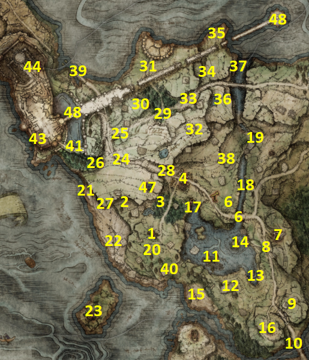
1.1 · Početak putovanja · #1–#100/10
1Church of Elleh
Izađi iz Stranded Graveyard. Tree Sentinel zasad preskoči i idi do Church of Elleh. Razgovaraj s Merchant Kalé i odmah kupi Crafting Kit.
POKUPI / ODRADI: Crafting Kit • Nomadic Warrior's Cookbook [1] • Nomadic Warrior's Cookbook [2] • Missionary's Cookbook [1] • Telescope • Torch
2Stormfoot Catacombs
Od Church of Elleh kreni sjeverozapadno do ulaza. Fire-spitting pillars zaustavi jednim udarcem. Aktiviraj lever i očisti dungeon prije bossa.
BOSS / INVADER: Erdtree Burial Watchdog → Noble Sorcerer Ashes
POKUPI / ODRADI: Prattling Pate: Hello • Wandering Noble Ashes
3Groveside Cave
Od Church of Elleh idi sjeverno kroz šumu. Očisti vukove i porazi bossa na kraju.
BOSS / INVADER: Beastman of Farum Azula
POKUPI / ODRADI: Flamedrake Talisman
4Gatefront Ruins
Idi sjeveroistočno kroz šumu. Uz map pillar uzmi Limgrave mapu. U istočnom dijelu ruševina siđi u underground room za Whetstone Knife i Storm Stomp. Otvori oba wagon chesta.
POKUPI / ODRADI: Map: Limgrave, West • Whetstone Knife • Ash of War: Storm Stomp • Flail • Lordsworn's Greatsword
5Boc / most jugoistočno od Gatefront Ruins
Kreni jugoistočno prema mostu. Kad čuješ glas, pronađi začaranu biljku/stablo i udari je jednom. Kod mosta ubij scarab.
POKUPI / ODRADI: Ash of War: Determination
6Night's Cavalry — most
Vrati se na isti most noću i porazi Night's Cavalry.
BOSS / INVADER: Night's Cavalry
POKUPI / ODRADI: Ash of War: Repeating Thrust
7Waypoint Ruins
Jugoistočno od mosta pronađi underground ulaz. Porazi Mad Pumpkin Head i otvori sobu iza bossa.
BOSS / INVADER: Mad Pumpkin Head
POKUPI / ODRADI: Nod in Thought
8Troll convoy kod Waypoint Ruins
Reload područja. Na glavnoj cesti zaustavi convoy koji vuku dva Trolla i otvori chest na stražnjem dijelu wagona.
POKUPI / ODRADI: Greataxe
9Agheel Lake South camp
Južno od Waypoint Ruins očisti kamp. Royal House Scroll je na ruševini koju čuva sorcerer; Great Épée je u chestu. Jugoistočno pokupi Starlight Shard iz velike zdjele.
POKUPI / ODRADI: Royal House Scroll • Great Épée • Starlight Shard
10Bridge of Sacrifice
Na mostu prema Weeping Peninsula očisti neprijatelje i uzmi ključ. Weeping Peninsula zasad ne nastavljaj.
POKUPI / ODRADI: Stonesword Key
1.2 · Lake Agheel i zapadni Limgrave · #11–#160/6
11Dragon-Burnt Ruins
U Lake Agheel istraži ruševine. Do Twinblade chesta dođi Torrentom preko zidova. Na površini uzmi Stonesword Key.
POKUPI / ODRADI: Twinblade • Stonesword Key
12Jugoistočni Lake Agheel — scarab
Kod giant crabova pronađi scarab.
POKUPI / ODRADI: Ash of War: Unsheathe
13Flying Dragon Agheel
U sredini Lake Agheel porazi Agheela. Torrent koristi za brzo izbjegavanje vatre i repositioning.
BOSS / INVADER: Flying Dragon Agheel
POKUPI / ODRADI: Dragon Heart
14Zapadna plaža / Haligdrake Talisman
Zapadno od Yure pažljivo se spusti Torrentom do plaže. Porazi enemy za Gravitas, zatim u sjevernom dijelu uđi u prolaz prema tutorial području.
POKUPI / ODRADI: Ash of War: Gravitas • Haligdrake Talisman
15Forlorn Hound Evergaol
Zapadno od Agheel Lake South područja uđi u Evergaol.
BOSS / INVADER: Bloodhound Knight Darriwil
POKUPI / ODRADI: Bloodhound's Fang
16Limgrave Tunnels
U sjeverozapadnom dijelu Lake Agheel uđi u rudnik. Kod drugog lifta skoči na platformu tijekom vožnje da dođeš do boss rute.
BOSS / INVADER: Stonedigger Troll
POKUPI / ODRADI: Roar Medallion
1.3 · Murkwater i obala · #17–#230/7
17Murkwater Cave / Bloody Finger Nerijus
Prati rijeku sjeveroistočno od Lake Agheel. Prije cave-a dolazi invazija; Yura će pomoći.
BOSS / INVADER: Bloody Finger Nerijus
POKUPI / ODRADI: Reduvia
🛑 CHECKPOINT — prije Murkwater / Patches
Prije nego nastaviš dublje u ovu granu, provjeri da nisi ostavio ključne početne NPC korake.
18Murkwater Cave / Patches
U cave-u otvori chest s Cloth Garb i započni borbu. Kad Patches moli za milost, odmah prestani napadati.
POKUPI / ODRADI: Grovel for Mercy
19Murkwater Catacombs
Nastavi uz rijeku sjeverno od Murkwater Cave i očisti dungeon.
BOSS / INVADER: Grave Warden Duelist
POKUPI / ODRADI: Banished Knight Engvall Ashes
20Tree Sentinel — povratak
S Torrentom i nekoliko levela vrati se na početak i porazi Tree Sentinel.
BOSS / INVADER: Tree Sentinel
POKUPI / ODRADI: Golden Halberd
21Zapadna plaža — invisible scarab / merchant
Spusti se na plažu zapadno od početnog područja. Na sjevernom kraju prati footprints nevidljivog scaraba. Provjeri merchant ispod ruševine.
POKUPI / ODRADI: Ash of War: Stamp (Sweep) • Armorer's Cookbook [2]
22Coastal Cave
Uđi u cave, razgovaraj s Bocom kod Site of Grace i porazi oba Demi-Human Chiefa.
BOSS / INVADER: Demi-Human Chiefs
POKUPI / ODRADI: Sewing Needle • Tailoring Tools
23Church of Dragon Communion
Izađi iz Coastal Cave na otok i ponudi Dragon Heart. Za sada uzmi jednu Incantation.
POKUPI / ODRADI: Dragonfire ili Dragonclaw ili Dragonmaw
1.4 · Stormhill i sjeverni Limgrave · #24–#400/17
24Stormgate — Golden Seed
Vrati se u Stormgate i prati cestu uzbrdo. Kod zlatnog saplinga pokupi seed.
POKUPI / ODRADI: Golden Seed
25Stormhill Shack
Sjeverno od Golden Seed dođi do shacka. Uzmi Stonesword Key izvana.
POKUPI / ODRADI: Stonesword Key • Sitting Sideways • Spirit Jellyfish Ashes
26Stormhill graveyard
Jugozapadno od shacka u groblju s jellyfishovima pokupi ashes.
POKUPI / ODRADI: Godrick Soldier Ashes
27Stormhill jugozapad — Starlight Shard / gesture
Na jugozapadnom rubu uzvišenja pokupi Starlight Shard; na ruševini malo istočnije uzmi gesture.
POKUPI / ODRADI: Starlight Shard • Crossed Legs
🛑 CHECKPOINT — prije Stormveil napredovanja
Ovdje izjednači Limgrave zaostatke koje ne želiš zaboraviti prije ozbiljnijeg napredovanja prema Stormveilu.
28Arrow's Reach Talisman
Južno od Stormhill Shack prati desnu stranu litice prema gornjem Stormgate području i otvori chest.
POKUPI / ODRADI: Arrow's Reach Talisman
29Warmaster's Shack
Istočno od Stormhill Shack pronađi Knight Bernahl danju.
POKUPI / ODRADI: Ashes of War shop
30Bell Bearing Hunter — noć
Vrati se u Warmaster's Shack noću. Ako je boss pretežak, vrati se kasnije.
BOSS / INVADER: Bell Bearing Hunter
POKUPI / ODRADI: Bone Peddler's Bell Bearing
31Strength-Knot Crystal Tear
Sjeverozapadno od Warmaster's Shack, iza giant Trolla, uzmi tear iz velike zdjele.
POKUPI / ODRADI: Strength-Knot Crystal Tear
32Recusant Henricus
Sjeverno od Warmaster's Shack prati put do invazije.
BOSS / INVADER: Recusant Henricus
POKUPI / ODRADI: Hammer Talisman
33Deathbird — noć
Jugoistočno od shacka, na ruševinama među Trollovima, dođi noću.
BOSS / INVADER: Deathbird
POKUPI / ODRADI: Blue-Feathered Branchsword
34Sjeveroistočni enemy camp / Golden Vow
Očisti kamp. Na sjevernoj litici mounted enemy daje Golden Vow; na ruševini iznad je Lance.
POKUPI / ODRADI: Beast Crest Heater Shield • Ash of War: Golden Vow • Lance
35Deathtouched Catacombs
Sjeveroistočno od kampa prati cestu i popni se na lijevu liticu do ulaza.
BOSS / INVADER: Black Knife Assassin
POKUPI / ODRADI: Uchigatana • Assassin's Crimson Dagger • Deathroot
36Lance Talisman
Sjeveroistočno od catacombsa, iza stupova mosta, pretraži corpse.
POKUPI / ODRADI: Lance Talisman
37Iron Fist Alexander
Južno od catacombsa čut ćeš poziv u pomoć. Udari stražnji dio pota nekoliko puta dok Alexander ne iskoči.
POKUPI / ODRADI: Triumphant Delight
38Highroad Cave
Od Saintsbridge Site of Grace spusti se do rijeke; cave je u sjeverozapadnom dijelu.
BOSS / INVADER: Guardian Golem
POKUPI / ODRADI: Shamshir • Blue Dancer Charm
39Murkwater Coast camp
Od Highroad Cave prati rijeku prema jugu do Murkwater Coast Site of Grace. Mali kamp je jugozapadno.
POKUPI / ODRADI: Armorer's Cookbook [1]
40Collapsed bridge / Storm Wall
Sjeverno od Stormhill Shack prati cestu ispod mosta do srušenog kraja. Pokupi cookbook, zatim se spusti Torrentom do scaraba.
POKUPI / ODRADI: Nomadic Warrior's Cookbook [7] • Ash of War: Storm Wall
1.5 · Stormveil Castle i Godrick · #41–#480/8
41Fringefolk Hero's Grave
Vrati se u Stranded Graveyard i potroši 2 Stonesword Keys. Chariot izbjegavaj u bočnim alcoves. U Grafted Scion području uzmi Erdtree's Favor. S ledgea pucaj u užad velikih posuda kad je Chariot ispod. Na desnom usponu uzmi seal i nastavi do bossa.
BOSS / INVADER: Ulcerated Tree Spirit
POKUPI / ODRADI: Erdtree's Favor • Erdtree Greatbow • Dragon Communion Seal • Golden Seed • Banished Knight Oleg Ashes
42Margit, the Fell Omen 🏆
Od Stormhill Shack prati cestu prema Stormveil Castle. Usput ubij scarab. Margit's Shackle možeš koristiti tijekom borbe.
BOSS / INVADER: Margit, the Fell Omen
POKUPI / ODRADI: Ash of War: Wild Strikes • Talisman Pouch
43Stormveil Castle — Gatekeeper Gostoc / ulaz
Kod zatvorenih vrata razgovaraj s Gostocom i koristi side path. Na putu prema Stormveil Cliffside i unutarnjem dijelu pokupi rani loot.
POKUPI / ODRADI: Marred Leather Shield • Hookclaws • Curved Sword Talisman • Brick Hammer
44Rampart Tower / rooftops
Od Rampart Tower vrati se prema rooftops. Istraži broken tower, eagle područje i bočne dropove.
POKUPI / ODRADI: Stonesword Key • Dozing Cross-Legged • Claw Talisman • Hawk Crest Wooden Shield • Misericorde • Iron Whetblade • Nomadic Warrior's Cookbook [10]
45Sorcerer Rogier / Grafted Scion / Chrysalids' Memento
Od eagle područja nastavi do crkve i razgovaraj s Rogierom. Nastavi preko Banished Knighta i kuhinje do Grafted Sciona. U sobi s hrpom corpse-a uzmi Memento.
POKUPI / ODRADI: Mimic's Veil • Stonesword Key • Highland Axe • Chrysalids' Memento
46Stormveil courtyard / Liftside Chamber / lower castle
Iza Grafted Scion prostora izađi u courtyard. U podzemnoj Stonesword Key sobi uzmi Godslayer predmete. Očisti courtyard, Prophecy Painting i Arbalest rutu. Od Liftside Chamber otvori shortcut i spusti se u najniži dio.
BOSS / INVADER: Ulcerated Tree Spirit
POKUPI / ODRADI: Godslayer's Seal • Godskin Prayerbook • Pike • Wooden Greatshield • Prophecy Painting • Arbalest • Ash of War: Stormcaller • Manor Towershield • Rancorcall • Golden Seed • Stonesword Key • Prince of Death's Pustule
47Nepheli Loux — prije Godricka
Vrati se na street level. U kući desno prije velikog Trolla pronađi Nepheli Loux.
🛑 CHECKPOINT — nakon Godricka
Prije odlaska prema Liurniji dovrši cleanup ispod vodiča. Ovaj checkpoint služi kao podsjetnik da se zaostaci moraju izjednačiti.
48Godrick the Grafted / završetak Limgrave dijela 🏆
Nakon Godricka vrati se u Roundtable Hold i razgovaraj s Nepheli (kod Gideonove sobe). Iscrpi dijalog; za kasniji završetak trebat će joj Stormhawk King. Gostoca nemoj ubiti: njegova završna trgovina u Stormveilu povezana je s Nephelinim questom.
Prođi Trolla, aktiviraj Site of Grace i porazi Godricka. U prostorijama iza arene pokupi Shabriri Grape. Nakon toga odradi cleanup ispod.
Nakon #48 — NPC cleanup prije Liurnije
Part 1 — završna kontrola
☐ Bravo! je uzet kod The First Step
☐ Godrick's Great Rune je aktiviran
☐ Nepheli je razgovarana prije Godricka
☐ Roderiki je predan Chrysalids' Memento prije Godricka
☐ Gostoc je živ
☐ Patches je živ
☐ NPC dopune nemaju vlastite brojeve
☐ 2. Stormfoot Catacombs je ispravno označen
☐ #1–#48 imaju numerirane naslove u tekstu
BOSS / INVADER: Godrick the Grafted
POKUPI / ODRADI: Remembrance of the Grafted • Godrick's Great Rune • Shabriri Grape
🏁 Limgrave — završna kontrola prije Liurnije
Provjera iz Master Guide V30. NPC kvačice dijele stanje s Walkthroughom i NPC Trackerom. Aktivacija Great Rune zaseban je korak.
Otvori završnu kontrolu
Napomena: označena kontrola potvrđuje tvoj unos, ne automatsku provjeru stanja u igri. NPC questovi nastavljaju se u drugim regijama.
🛑 CHECKPOINT — prije Godrick završnice
Prije završnog dijela Stormveil Castlea provjeri važne NPC/quest korake u dvorcu.
🛑 NPC CHECKPOINT — provjera prije napredovanja
Prikazuje samo važne NPC korake iz našeg Limgrave vodiča. Otvori propušteni korak izravno u Walkthroughu. Zeleni status znači da su kvačice označene, ne jamči da je quest u igri siguran.
1 · Prije Murkwater / Patches
2 · Prije Stormveil Castle
3 · Prije Godricka
4 · Nakon Godricka / prije Liurnije
Limgrave završna provjera
Prije prelaska na sljedeći Chapter provjeri kritične NPC korake. Neobavezni loot ne blokira glavni put.
👥 NPC cleanup prije Liurnije
NPC cleanup prije Liurnije
CHAPTER 2 — WEEPING PENINSULA0/29
Sve upute iz Master Guide V30 nalaze se unutar pripadajuće rute.
🗺 Karta Weeping Peninsula — PSN ruta #1–#29
Žuti brojevi na karti odgovaraju točno numeriranim rutama u Chapteru 2. Karta je preuzeta iz našeg Master Guide V30.
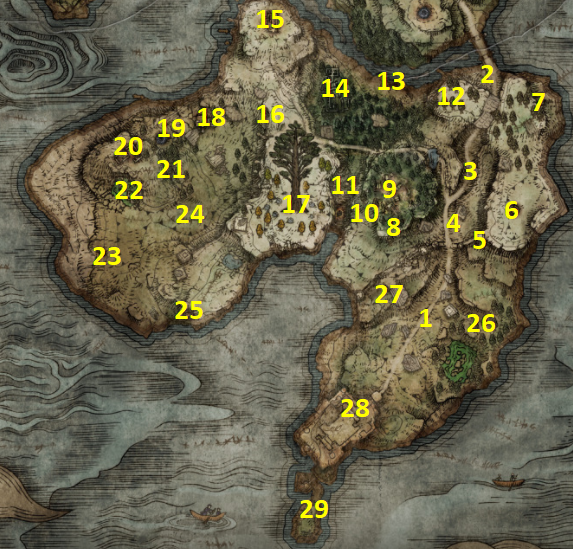
Ruta #1–#29 prema Master Guide V30. Oznake su neovisne o Limgraveu; NPC i Platinum provjere povezane su s koracima Chaptera 2.
Karta Weeping Peninsula #1–#29 ugrađena je iz Master Guide V30.
2.1 · Ulazak i istočna obala · #1–#7 0/7
1Map: Weeping Peninsula
Od Bridge of Sacrifice prati glavnu cestu prema jugu. Prođi neprijatelje i otvor u kamenoj barijeri kod Castle Morne Rampart područja. Nastavi cestom prema jugu do map pillar-a i uzmi map fragment. Od ovog trenutka koristi kartu #1–#29 za cijelu regiju.
2Bridge of Sacrifice — Irina
Fast travel ili se vrati prema Bridge of Sacrifice Site of Grace. Južno od Gracea, uz cestu i mrtva tijela, sjedi Irina.
3Road south — Morning Star + Mighty Shot
Od Irine kreni glavnom cestom prema jugu. U stražnjem dijelu uništenog convoya otvori chest za Morning Star. Nastavi još malo južnije uz cestu i ubij scarab.
4Castle Morne Rampart — Merchant + Night's Cavalry
Kod Castle Morne Rampart Site of Grace, neposredno prije prolaza kroz srušeni zid, pronađi Nomadic Merchant. Pregledaj shop prije nastavka. Noću se na istoj cesti pojavljuje Night's Cavalry.
5Great Turtle Shield
Od Castle Morne Rampart Site of Grace koristi obližnji Spiritspring. Usmjeri Torrent prema bastionu južno uz slomljeni zid i doskoči na gornju razinu.
6Oridys's Rise + Starlight Shard
Ponovno koristi Spiritspring i idi istočno do Oridys's Rise. Ulaz je zapečaćen porukom Seek three wise beasts. Prva spirit turtle je odmah iza tebe preko puta ulaza; druga je skrivena u grmlju lijevo od stepenica; treća je nevidljiva u malom jezeru desno od ulaza — prati valove/splash na vodi. Kad ukloniš sve tri, popni se na vrh tornja. Nakon toga istočno od tornja provjeri veliku kamenu zdjelu.
7Impaler's Catacombs + Stonesword Key
Od Oridys's Rise idi sjeverno uz istočnu stranu poluotoka do Impaler's Catacombs. Očisti dungeon i uzmi Prattling Pate. Nakon dungeona popni se na liticu iznad ulaza; corpse na stolici ima Stonesword Key.
2.2 · Središnji dio i zapad · #8–#15 0/8
8Callu Baptismal Church
Vrati se prema Castle Morne Rampart području i idi zapadno na višu liticu do Callu Baptismal Church. Pretraži crkvu i obavezno uzmi Sacred Tear — koristi ga na Site of Grace za povećanje jačine Crimson/Cerulean flaskova.
9Ailing Village
Od Callu Baptismal Church idi sjeverno u Ailing Village. Pretraži kolibe; u jednoj je shield.
10Lightning Strike scarab
Od Ailing Village kreni zapadno, zatim pažljivo prati stazu uz litice prema jugu. U području s Giant Bats i udarima munje pronađi scarab.
11Morne Tunnel
Od Ailing Village spusti se prema dnu kanjona zapadno od sela i pronađi ulaz u Morne Tunnel. Očisti rudnik prije bossa; vrijedi pokupiti Smithing Stones uz zidove.
12Forest Lookout Tower
Od Ailing Village idi sjeveroistočno do Forest Lookout Tower. Očisti neprijatelje i popni se skroz na vrh.
13Earthbore Cave
Od Forest Lookout Tower idi zapadno prema obali. U šumi jugozapadno od cavea možeš aktivirati crystal tree; phantom će pokazati put do ulaza. U caveu budi spreman na vrlo agresivnog Runebeara.
14Demi-Human Forest Ruins + Faith-Knot Crystal Tear
Od Earthbore Cave idi zapadno do Demi-Human Forest Ruins. Porazi Demi-Human Queen i pretraži podzemnu sobu na jugozapadu. Nakon toga idi sjeverno od ruševina do velike kamene zdjele koju čuvaju poison flowers.
15Church of Pilgrimage + Prophecy Painting reward
Od Demi-Human Forest Ruins idi sjeverozapadno do Church of Pilgrimage. U crkvi pokupi Sacred Tear i shield. Ako si u Stormveil Castle već pokupio Prophecy Painting kao u našem Part 1, idi do sjeverne litice: ghost painter će nestati kad mu priđeš i ostaviti nagradu.
2.3 · Zapadne ruševine i crkve · #16–#23 0/8
16Tombsward Catacombs
Od Church of Pilgrimage kreni južno do Tombsward Catacombs. Istraži cijeli dungeon. Za Nomadic Warrior's Cookbook [9] potreban je Stonesword Key.
17Minor Erdtree + Eclipse Crest Heater Shield
Od Tombsward Catacombs idi južno prema Minor Erdtree. Porazi Erdtree Avatar. Nakon bossa idi prema liticama zapadno od stabla i pažljivo se spusti na niži ledge do corpse-a.
18Tombsward Ruins
Od catacombsa/Minor Erdtree područja idi zapadno do Tombsward Ruins. Pronađi stepenice u podzemnu prostoriju i otvori chest. Na vrhu ruševine jugozapadno od underground ulaza pronađi scarab.
19Weeping Evergaol
Od Tombsward Ruins idi zapadno do Weeping Evergaol. Za ulazak potroši Stonesword Key.
20Fourth Church of Marika
Nastavi zapadno od Evergaola do Fourth Church of Marika. Pretraži oltar/crkvu.
21Tombsward Cave
Od Fourth Church of Marika kreni jugoistočno do Tombsward Cave. Ponesi Neutralizing Boluses ako želiš sigurniji prolazak kroz poison područje.
22Witchbane Ruins — Sellen
Od Fourth Church of Marika idi južno u poisonous swamp do Witchbane Ruins. Siđi u podzemnu prostoriju. Pokupi spell i pronađi okovanu Sorceress Sellen.
23Isolated Merchant's Shack
Od Witchbane Ruins idi jugozapadno do Isolated Merchant's Shack. Lantern je vrlo koristan za dungeone jer oslobađa ruku od Torch-a.
2.4 · Povratak i Castle Morne · #24–#29 0/6
24Wandering Mausoleum
Sjeveroistočno od Isolated Merchant's Shack nalazi se veliki Walking Mausoleum s bellom ispod tijela. Na Torrentu očisti bijele skull deposits s njegovih nogu, pazeći na stomp. Kad sjedne, uđi unutra.
25Tower of Return → Leyndell
Od Isolated Merchant's Shack idi jugoistočno do Tower of Return. Popni se na vrh i otvori trap chest. Ovaj put NAMJERNO ostani u dimu. Teleportira te u izolirani dio Leyndell, Royal Capital. Aktiviraj obližnji Site of Grace, zatim idi do kraja platforme prema Giant Golemu i chestu. Ne pokušavaj sada istraživati ostatak Capitala.
26Poison Mist scarab
Vrati se u clearing gdje si na #1 uzeo Map: Weeping Peninsula. Istočno od map pillar-a, u sjeveroistočnom dijelu čistine, pronađi teleporting scarab. Najlakše ga je pogoditi ranged napadom prije nego pobjegne.
27Deathbird + Golden Seed
Zapadno od map lokacije dođi noću do ruševina i porazi Deathbird. Nakon borbe idi južno do zlatnog saplinga.
28Castle Morne — Edgar + castle loot
Nastavi glavnom cestom prema krajnjem jugu i uđi u Castle Morne. U zgradi iza velike hrpe tijela otvori chest za Claymore. Popni se ljestvama iza zgrade i uzmi Steel-Wire Torch. Vrati se u courtyard, prođi Mad Pumpkin Head i popni se stražnjim ljestvama. Prije spuštanja prema Behind the Castle Site of Grace pogledaj lijevo: dodatne ljestve vode u područje gdje se neprijatelji bore. Prođi ih i popni se na bastion do Edgara.
Nastavi od Behind the Castle Site of Grace. Spusti se na platformu uz litice za Stonesword Key. Na vrhu tornja iza bridgea otvori chest za Twinblade Talisman. Spuštanjem na niže razine doći ćeš do rats/Misbegotten područja gdje je Whip.
29Leonine Misbegotten → Edgar / Irina cleanup 🏆
Na samom kraju Castle Morne spusti se do obale i aktiviraj Site of Grace prije boss arene. Porazi Leonine Misbegotten.
👥 NPC Questline + 🏆 Platinum — Chapter 20/5
Kontrole su povezane s istim koracima Chaptera 2. Irina i Edgar nastavljaju priču kasnije; dovršetak ovih provjera ne znači završetak cijelog questa.
📋 CH2 — Weeping Peninsula: završna provjera prema Wordu V30 (bez novih kvačica)
Ovo je kontrolni pregled iz Worda V30. Stavke označi u izvornim rutama #1–#29; ovaj pregled namjerno ne stvara nove checkboxove niti utječe na trackere.
- Usporedi rutu #1–#29 s PSN kartom — provjera redoslijeda, ne zaseban pickup
- Memory Stone — Oridys’s Rise — ruta #6
- Sacred Tears — rute #8, #15 i #20
- Warhawk Ashes nakon Prophecy Painting — ruta #15; prethodno Part 1
- Opaline Bubbletear + Crimsonburst Crystal Tear — ruta #17
- Sellen ostavljena živa u Witchbane Ruins — ruta #22
- Tower of Return → Blessed Dew Talisman — ruta #25
- Irina’s Letter predan Edgaru prije bossa — ruta #28
- Grafted Blade Greatsword — ruta #29
- Edgarov dijalog u Castle Morne nakon bossa — nakon #29
- Edgarov dijalog kod Irine — povratak na #2
NPC STOP: prije odlaska potvrdi redoslijed Irina → Edgar → boss → Edgar u dvorcu → Edgar kod Irine.
CHAPTER 3 — EAST LIMGRAVE 0/18
Master Guide V30 · PART 3 · 18 numeriranih ruta. Oznake se spremaju samo u Walkthroughu.
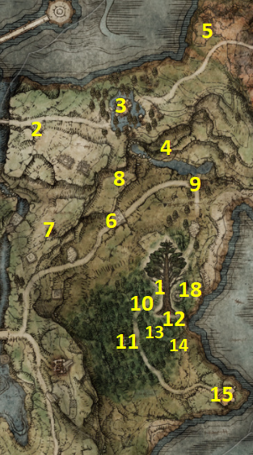
PSN karta #1–#18 • detaljni HR walkthrough • ENG nazivi • NPC quest-safe dopune
East Limgrave — 100% ruta
1Map: Limgrave, East0/1
Od Waypoint Ruins prati cestu sjeverno, zatim istočno. Za sada ignoriraj sporedne lokacije/NPC-eve dok cesta ne skrene prema jugu. Neposredno prije Minor Erdtreea pronađi map pillar uz cestu i uzmi map fragment.
POKUPI / ODRADI: Map: Limgrave, East
2Saintsbridge Merchant0/1
Od Saintsbridge Site of Grace prijeđi most prema istoku. Merchant je odmah desno nakon mosta.
POKUPI / ODRADI: Nomadic Warrior's Cookbook [3] • Halberd • Bandit Mask
3Summonwater Village — D + Tibia Mariner0/1
Od merchant-a prati cestu istočno prema Summonwater Village. Uz lijevu stranu ceste može stajati D, Hunter of the Dead. Ako si s njim već razgovarao u Roundtable Hold o Deathrootu, moguće je da ovdje neće biti. U selu Stonesword Key otvara underground sobu s talismanom. Zatim riješi Tibia Marinera.
POKUPI / ODRADI: Green Turtle Talisman • Skeletal Militiaman Ashes • Deathroot
BOSS / INVADER: Tibia Mariner
4Sacred Blade scarab0/1
Od Summonwater Village kreni jugoistočno i pažljivo se spuštaj niz litice dok ne vidiš Spiritspring. Kod njegove baze pronađi scarab.
POKUPI / ODRADI: Ash of War: Sacred Blade
5Smoldering Church0/1
Od Summonwater Village prati cestu dalje prema istoku do granice s Caelidom. Ispred crkve pokreće se NPC invazija. Nakon invazije pretraži unutrašnjost crkve.
POKUPI / ODRADI: Sacred Scorpion Charm • Nomadic Warrior's Cookbook [14] • Missionary's Cookbook [3]
BOSS / INVADER: Anastasia, Tarnished-Eater
6Kenneth Haight — prvi razgovor0/1
Vrati se na cestu kojom si išao prema map pillar-u. Od Mistwood Outskirts Site of Grace kreni sjeveroistočno; na vrhu overpass/ruševine čut ćeš Kennetha kako doziva pomoć.
7Artist's Shack — Homecoming Painting0/1
Od Kennetha idi zapadno na vrh litice do Artist's Shack i uzmi painting.
POKUPI / ODRADI: Homecoming Painting
8Graveyard — Fevor's Cookbook [1]0/1
Sjeveroistočno od Kennethove lokacije pronađi graveyard s više sarcophagi. Pregledaj corpse na jednom od sarkofaga.
POKUPI / ODRADI: Fevor's Cookbook [1]
9Third Church of Marika0/1
Od Kennetha prati cestu istočno dok ne skrene prema jugu. U Third Church of Marika pokupi sva tri ključna predmeta. Flask of Wondrous Physick od sada kombinira dvije Crystal Tears na Site of Grace.
POKUPI / ODRADI: Sacred Tear • Flask of Wondrous Physick • Crimson Crystal Tear
10Nomadic Warrior's Cookbook [4]0/1
Zapadno od map pillar-a (#1) pronađi Runebeara koji grebe stablo. Item je uz to područje; možeš ga uzeti i bez duge borbe ako se brzo povučeš.
POKUPI / ODRADI: Nomadic Warrior's Cookbook [4]
11Mistwood Ruins — Axe Talisman + Blaidd trigger0/1
Južno od map lokacije uđi u Mistwood Ruins. Crystal tree uz cestu može prizvati phantom koji vodi prema ruševinama. Siđi u underground dio po Axe Talisman. Južno od ruševina, na ledgeu iznad područja, u graveyardu s poison flowers/skeletons nalazi se Sacrificial Twig.
POKUPI / ODRADI: Axe Talisman • Sacrificial Twig
12Minor Erdtree — Crystal Tears0/1
Vrati se u East Limgrave i idi do Minor Erdtreea. Kod baze stabla u velikoj stone basin pokupi obje Tears.
POKUPI / ODRADI: Spiked Cracked Tear • Greenspill Crystal Tear
13Ground Slam scarab0/1
Jugozapadno od Minor Erdtreea pronađi scarab i ubij ga prije nego pobjegne.
POKUPI / ODRADI: Ash of War: Ground Slam
14Mistwood Merchant0/1
Južno od Minor Erdtreea pronađi merchant-a i provjeri shop.
POKUPI / ODRADI: Nomadic Warrior's Cookbook [5] • Armorer's Cookbook [3] • Hand Axe • Riveted Wooden Shield • Blue-Gold Kite Shield
15Fort Haight0/1
Idi na krajnji jug East Limgravea. Prije ulaza u Fort Haight pokupi Golden Seed kod zlatnog saplinga. Očisti cijeli fort. Na vrhu porazi knighta za Bloody Slash; u tower chestu uzmi Dectus Medallion (Left), a u drugom chestu cookbook.
POKUPI / ODRADI: Golden Seed • Dectus Medallion (Left) • Ash of War: Bloody Slash • Nomadic Warrior's Cookbook [6]
16D → Sending Gate → Bestial Sanctum / Gurranq0/1
Nakon Tibia Marinera vrati se u Roundtable Hold i razgovaraj s D, Hunter of the Dead. Pokaži mu Deathroot; označit će lokaciju sending gatea blizu Third Church of Marika. Idi iza/uz Third Church, pronađi portal u grmlju i teleportiraj se u Bestial Sanctum. Ne istražuj Caelid/Dragonbarrow sada: aktiviraj Site of Grace i uđi do Gurranqa.
POKUPI / ODRADI: Beast Eye • Clawmark Seal • Bestial Sling
17Siofra River Well — ulaz0/1
Veliki istočni dio iza Smoldering Churcha pripada drugoj regiji i zasad ga preskačemo. Vrati se kod Minor Erdtreea i idi sjeverno do Siofra River Well. Uđi u kružnu građevinu i aktiviraj veliki lift prema podzemlju. Ovo je prijelaz na sljedeći dio walkthrougha.
18East Limgrave — obalni/južni cleanup marker0/1
Prije potpunog odlaska u Siofra provjeri južni/istočni rub Mistwooda označen #18 na karti i pokupi lokalni loot/Grace koji ti je ostao neaktiviran. Ovaj marker koristimo kao završni kartografski cleanup East Limgravea prije podzemne regije.
East Limgrave — završna NPC / progression checklist
☐ Map: Limgrave, East uzet na #1
☐ D razgovor / Tibia Mariner / Deathroot odrađeni na #3
☐ Kenneth Haight quest prihvaćen na #6
☐ Homecoming Painting uzet na #7 i reward u West Limgraveu pokupljen
☐ Flask of Wondrous Physick + Sacred Tear uzeti na #9
☐ U Mistwood Ruins #11 čut howl
☐ Kale → Finger Snap odrađen
☐ Blaidd pozvan Finger Snapom i dijalog iscrpljen
☐ Blaidd provjeren kod Forlorn Hound Evergaol nakon ranije ubijenog Darriwila
☐ Fort Haight očišćen na #15
☐ Kennethu vraćeno nakon Fort Haighta, Erdsteel Dagger uzet, ponuda prihvaćena
☐ Kenneth ponovno pronađen u Fort Haightu i ostavljen živ
☐ D u Roundtable Hold pokazao sending gate
☐ Gurranqu predana dva dostupna Deathroota jedan po jedan
☐ Beast Eye + Clawmark Seal + Bestial Sling uzeti
☐ Siofra River Well otključan za sljedeći dio
CHAPTER 4 — SIOFRA RIVER (LOWER LEVEL) 0/15
Master Guide V30 · PART 4 · 15 numeriranih ruta. Oznake se spremaju samo u Walkthroughu.
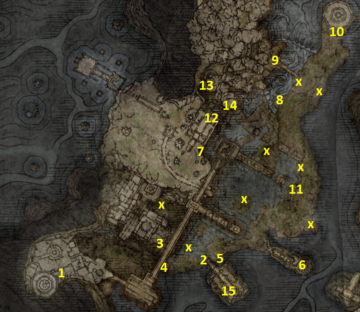
PSN karta #1–#15 + 8 obeliska X • HR walkthrough • ENG nazivi
Siofra River — Lower Level 100% ruta
1Siofra River Well — Oracle Bubbles0/1
Nakon lifta iz East Limgravea kreni kroz početni podzemni kompleks. Koristi Torrent za penjanje po ruševinama i platformama. Na višoj platformi s dva mage Claymen neprijatelja idi prema stražnjem rubu. Pažljivo se spusti na niži ledge, zatim roll/jump prema stupu i ubij scarab.
POKUPI / ODRADI: Oracle Bubbles
2Siofra River Bank — Site of Grace + Map0/1
Nastavi prema stražnjem dijelu početnog područja do drugog velikog lifta. Popni se i prati tok vode uzvodno dok ne izađeš u veliko područje pod zvjezdanim nebom. Aktiviraj Siofra River Bank Site of Grace. Kod baze velikih stepenica uzmi map fragment s pillar-a.
POKUPI / ODRADI: Siofra River Bank Site of Grace • Map: Siofra River
3Armorer's Cookbook [6]0/1
Od Siofra River Bank Site of Grace idi zapadno i popni se na mali cliff. U kampu s dva Ancestral Follower/Minotaur Spirit neprijatelja pretraži corpse.
POKUPI / ODRADI: Armorer's Cookbook [6]
4Inverted Hawk Heater Shield0/1
Od Siofra River Bank kreni južno i popni se na sljedeći cliff. Prođi ili porazi tri Ancestral Follower neprijatelja i pretraži corpse.
POKUPI / ODRADI: Inverted Hawk Heater Shield
5Horn Bow0/1
Vrati se prema velikim stepenicama gdje je bio map pillar (#2). Ispod stepenica koristi Torrent za skok na dostupnu platformu i pokupi bow.
POKUPI / ODRADI: Horn Bow
6Broken bridge — Stonesword Key0/1
Od stepenica prati rub/cliff dok ne pronađeš Spiritspring. Iskoristi ga za skok na broken bridge prema istoku. Jaši do samog kraja mosta.
POKUPI / ODRADI: Stonesword Key
7Abandoned Merchant0/1
Kreni sjeverno uz rijeku. Kod velikog bridge pillar-a pronađi drvenu scaffold konstrukciju. Popni se ljestvama, zatim kroz stražnji cave/prolaz do merchant-a.
POKUPI / ODRADI: Nomadic Warrior's Cookbook [17] • Nomadic Warrior's Cookbook [18] • Shotel • Stonesword Keys • Larval Tear
8Worshippers' Woods + Square Off0/1
Istočno od scaffolda i ispod bridgea aktiviraj Worshippers' Woods Site of Grace. Od Gracea idi sjeverozapadno prema rubu litice i pronađi scarab.
POKUPI / ODRADI: Worshippers' Woods Site of Grace • Ash of War: Square Off
9Golden Seed + Stonesword Key + Rune Arc0/1
Sjeverno od Square Off scaraba prijeđi bridge prema liticama. Kod zlatnog saplinga pokupi Golden Seed. Južno od seeda Torrentom precizno skoči na stup, zatim prijeđi beam do sljedećeg stupa po Stonesword Key. Nakon toga se vrati kod Golden Seeda i prati sjevernu stazu u cave po Rune Arc.
POKUPI / ODRADI: Golden Seed • Stonesword Key • Rune Arc
10Deep Siofra Well lift — Clarifying Horn Charm0/1
Na krajnjem sjeveru lower Siofra područja dođi do velikog lifta za Deep Siofra Well. Na stepenicama pokupi talisman. Lift traži 2 Stonesword Keys. Aktiviraj ga, popni se, dodirni Site of Grace na vrhu i zatim se vrati u Siofra River. Gornje područje pripada kasnijoj ruti i sada ga NE istražujemo.
POKUPI / ODRADI: Clarifying Horn Charm • Deep Siofra Well Site of Grace
11Waygates — pristup elevated Siofra0/1
U lower Siofra postoje tri waygatea. Dva krajnja povezana su međusobno. Za naš cilj koristi srednji/eastern waygate: južno od Worshippers' Woods Site of Grace popni se na ruined structure koju čuva bow-wielding Ancestral Follower. Aktiviraj waygate — teleportira te na najvišu trenutno dostupnu razinu regije.
12Great Oracular Bubble0/1
Na elevated području kreni prema jugozapadu. Uđi u građevinu punu Claymen neprijatelja i pronađi scarab.
POKUPI / ODRADI: Great Oracular Bubble
13Dragonkin Soldier0/1
Vrati se prema središtu elevated područja. Pripremi se za boss arenu; drži se njegovih nogu/bočne strane i pazi na velike sweeping udarce.
POKUPI / ODRADI: Dragon Halberd
BOSS: Dragonkin Soldier
14Marika's Scarseal0/1
Nakon Dragonkin Soldiera nastavi istočno iza boss područja. Predmet je skriven ispod/iza vodopada.
POKUPI / ODRADI: Marika's Scarseal
158 flame obelisks → Ancestor Spirit0/1
Vrati se na lower level. Sada provjeri kartu i pronađi svih 8 mjesta označenih žutim X. Kod svakog aktiviraj obelisk kako bi zapalio njegovu vatru. Najsigurnije je krenuti od južnih X oznaka i napraviti puni krug uz istočnu stranu pa završiti kod sjevernih. Kad je svih 8 vatri upaljeno, vrati se na velike stepenice kod Siofra River Bank / map pillar-a (#2). Veliki kostur/deer remains sada je aktivan: interactaj s njim za teleport u boss arenu.
POKUPI / ODRADI: Aktiviraj svih 8 obelisks označenih X • Ancestral Follower Ashes
BOSS: Ancestor Spirit
Siofra River Lower — završna checklist
☐ Oracle Bubbles uzet na #1
☐ Siofra River Bank Grace + Map: Siofra River na #2
☐ Armorer's Cookbook [6] na #3
☐ Inverted Hawk Heater Shield na #4
☐ Horn Bow na #5
☐ Stonesword Key na broken bridgeu #6
☐ Merchant #7 pronađen; Larval Tear lokacija zapamćena
☐ Worshippers' Woods Grace + Square Off na #8
☐ Golden Seed + Stonesword Key + Rune Arc na #9
☐ Clarifying Horn Charm + Deep Siofra Well Grace na #10
☐ Waygate za elevated level korišten na #11
☐ Great Oracular Bubble na #12
☐ Dragonkin Soldier poražen + Dragon Halberd na #13
☐ Marika's Scarseal na #14
☐ Svih 8 X obelisks upaljeno
☐ Ancestor Spirit poražen + Ancestral Follower Ashes na #15
CHAPTER 5 — LIURNIA OF THE LAKES (EAST / SOUTH → NORTHEAST) 0/47
Master Guide V30 · PART 5 · 47 numeriranih ruta. Oznake se spremaju samo u Walkthroughu.
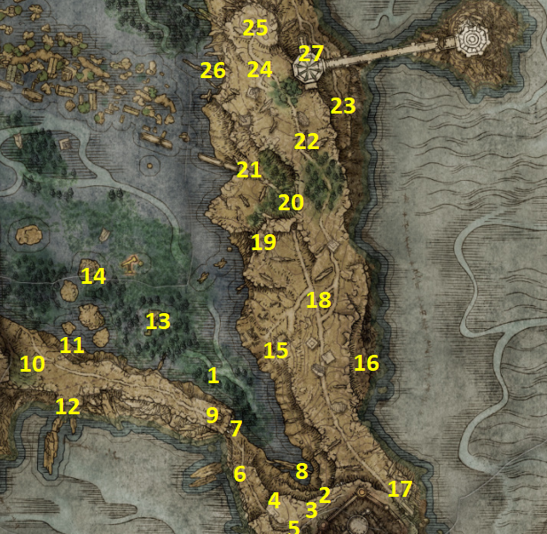
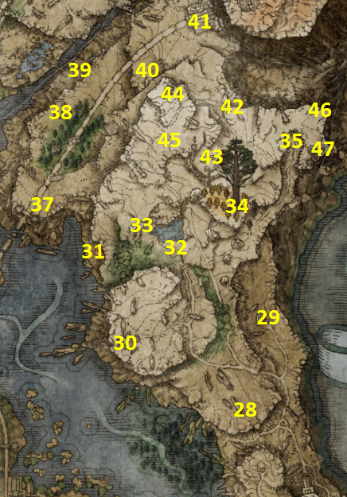
PSN karta #1–#47 • dvije karte • HR walkthrough • ENG nazivi • NPC quest-safe dopune
Liurnia of the Lakes — East route
1Map: Liurnia, East0/1
Nakon izlaska iz Stormveil Castlea u Liurniju, jaši Torrentom zapadno pa sjeverno do močvarnog jezera. U maloj šumici usred vode pronađi map pillar i uzmi regionalnu kartu.
POKUPI / ODRADI: Map: Liurnia, East
2Lake-Facing Cliffs — Hyetta + Boc0/1
Kod prvog Site of Grace u regiji, Lake-Facing Cliffs, pronađi Hyettu i predaj joj Shabriri Grape koji smo uzeli iza Godrickove arene. Nakon odmora na Graceu pojavit će se i Boc.
POKUPI / ODRADI: As You Wish
3Academy Scroll0/1
Sjeverozapadno od Lake-Facing Cliffs, u graveyardu, pokupi scroll.
POKUPI / ODRADI: Academy Scroll
4Church of Irith — Thops0/1
Južno od Hyette nalazi se Church of Irith. Pokupi Sacred Tear i razgovaraj s Thopsom.
POKUPI / ODRADI: Sacred Tear
5Camp prema jezeru0/1
Na putu nizbrdo prema water levelu prođi enemy camp i pretraži ga.
POKUPI / ODRADI: Glintstone Craftsman's Cookbook [1]
6Liurnia Lake Shore — Merchant0/1
Kod Liurnia Lake Shore Site of Grace pronađi merchant-a i provjeri shop.
POKUPI / ODRADI: Nomadic Warrior's Cookbook [11] • Estoc • Astrologer's Staff • Kite Shield • Astrologer set
7Stillwater Cave0/1
Na južnom kraju močvarnog jezera pronađi Stillwater Cave. Poison je glavna opasnost; pripremi boluses ili brzo prolazi kroz otrovne dijelove.
POKUPI / ODRADI: Sage set • Winged Sword Insignia
BOSS / INVADER: Cleanrot Knight
8Malefactor's Evergaol0/1
Sjeverno od Liurnia Lake Shore Gracea pronađi Spiritspring i popni se na zapadnu liticu do Evergaola.
POKUPI / ODRADI: Flame of the Fell God — Legendary Incantation
BOSS / INVADER: Adan, Thief of Fire
9Fire Monk camp / Prayerbook0/1
Od Evergaola prati cestu zapadno do samog kraja i očisti enemy camp.
POKUPI / ODRADI: Fire Spur Me • Fire Monks' Prayerbook
10Lakeside Crystal Cave0/1
Vrati se na water level i priđi litici s Evergaolom/Prayerbook područjem sa sjeverne strane. Uđi u Lakeside Crystal Cave.
POKUPI / ODRADI: Spear Talisman • Cerulean Amber Medallion
BOSS / INVADER: Bloodhound Knight
11Slumbering Wolf's Shack — Latenna lokacija0/1
Prođi kroz izlaz iza boss sobe Lakeside Crystal Cavea i aktiviraj Slumbering Wolf's Shack Site of Grace.
12Laskyar Ruins0/1
Sjeverozapadno od map lokacije pronađi Laskyar Ruins. Waygate za Raya Lucaria zasad ignoriraj. Pretraži ruševine i underground chest.
POKUPI / ODRADI: Glintstone Craftsman's Cookbook [2] • Wraith Calling Bell
13Scenic Isle — Patches0/1
Sjeverozapadno od Laskyar Ruins, na rubu regije, aktiviraj Scenic Isle Site of Grace i pronađi Patchesa.
14Purified Ruins — Hyetta #20/1
Sjeveroistočno od map pillar-a pronađi Purified Ruins. Pretraži underground prostor i pokupi drugi Shabriri Grape.
POKUPI / ODRADI: Shabriri Grape • Two Fingers Heirloom
15Cliffbottom Catacombs0/1
Istočno od Purified Ruins pažljivo se Torrentom spusti niz cliff do ulaza. Istraži cijeli dungeon; Nox Mirrorhelm traži Stonesword Key.
POKUPI / ODRADI: Prattling Pate: Wonderful • Nox Mirrorhelm • Scythe • Page Ashes • Kaiden Sellsword Ashes
BOSS / INVADER: Erdtree Burial Watchdog
16Treespear0/1
Vrati se na gornju razinu i prati cestu skroz prema jugoistoku. U stražnjem dijelu destroyed convoya otvori chest.
POKUPI / ODRADI: Treespear
17Liurnia Highway North — Lucerne0/1
Sjeverno od Purified Ruins aktiviraj Liurnia Highway North Site of Grace. Nastavi još malo sjevernije uz neprijatelje.
POKUPI / ODRADI: Lucerne
18Highway Lookout Tower0/1
Sjeverno od Liurnia Highway North Gracea popni se na tower i pretraži vrh.
POKUPI / ODRADI: Carian Glintblade Staff • Glintstone Craftsman's Cookbook [3]
19Night's Cavalry0/1
U šumi sjeverno od Highway Lookout Towera dođi noću na cestu kojom patrolira Night's Cavalry.
POKUPI / ODRADI: Ash of War: Ice Spear
BOSS / INVADER: Night's Cavalry
20Gate Town Bridge — Hyetta #3 lokacija0/1
Zapadno od Night's Cavalry područja aktiviraj Gate Town Bridge Site of Grace. Hyetta je u blizini.
21Tibia Mariner — Deathroot0/1
Sjeveroistočno od Night's Cavalrya popni se na cliffove putem koji kreće iz Liurnia Highway North područja.
POKUPI / ODRADI: Skeletal Bandit Ashes • Deathroot
BOSS / INVADER: Tibia Mariner
22Jarburg — Jar-Bairn0/1
Istočno od Tibia Marinera pažljivo se spuštaj po platformama u litici sve do Jarburga. Aktiviraj Site of Grace.
23Dragon Cult Prayerbook0/1
Sjeverno od Tibia Mariner područja na cesti patrolira knight. Porazi ga.
POKUPI / ODRADI: Dragon Cult Prayerbook
24Artist's Shack — Resurrection Painting0/1
Nastavi sjeverno do Artist's Shack i pokupi painting. Reward lokacija je u drugoj regiji i odradit ćemo je kasnije.
POKUPI / ODRADI: Resurrection Painting
25Land Squirt Ashes0/1
Od Gate Town Bridge Gracea kreni sjeverno po nižoj razini uz cliff. Kod skupine poisonous blobs pronađi corpse uz pillar.
POKUPI / ODRADI: Land Squirt Ashes
26Carian Study Hall0/1
Prati cliffove od poisonous blobs i pronađi put sjeverno od Artist's Shack do Carian Study Hall. Preceptor Miriam teleportira i vrlo je naporan melee likovima; ranged napadi olakšavaju borbu. Popni se sve do rafters dijela.
POKUPI / ODRADI: Carian Glintstone Staff • Magic Downpour • Cerulean Seed Talisman
27Flame Monk camp — Flame, Cleanse Me0/1
Sjeverno od Artist's Shack prijeđi canyon do neimenovanog Flame Monk campa. Zapadno od campa kod fire slugs porazi neprijatelja za dodatni spell.
POKUPI / ODRADI: Flame, Cleanse Me • Briars of Sin
28Ainsel River Well + Stonesword Key0/1
Sjeveroistočno od Flame Monk campa pronađi Ainsel River Well koji čuva stone giant. Za sada samo aktiviraj/lociraj ulaz. Nastavi sjeverno iza wella do corpse-a na stolici.
POKUPI / ODRADI: Stonesword Key
29Church of Vows — Miriel + Absolution0/1
Zapadno od Ainsel River Wella dođi u Church of Vows. Pokupi tailoring predmete i razgovaraj s Mirielom.
POKUPI / ODRADI: Gold Sewing Needle • Golden Tailoring Tools
BOSS / REWARD: Bell Bearing Hunter → Meat Peddler's Bell Bearing
30Raya Lucaria Crystal Tunnel0/1
Spusti se ponovno na water level. Sjeverno od Church of Vows pronađi crystal tunnel. Očisti dungeon i porazi Crystaliana.
POKUPI / ODRADI: Crystal Knife • Shatter Earth • Smithing-Stone Miner's Bell Bearing [1]
BOSS / INVADER: Crystalian (Ringblade)
31Ruined Labyrinth — Spiralhorn Shield0/1
Sjeverozapadno od Ainsel River Wella na višoj razini aktiviraj Ruined Labyrinth Site of Grace. Sjeverozapadno od Gracea, neposredno južno od non-bell Mausoleuma, pretraži corpse.
POKUPI / ODRADI: Spiralhorn Shield
32Mausoleum Compound — Stalwart Horn Charm0/1
Za sada ignoriraj oba non-bell Walking Mausoleuma. Aktiviraj Mausoleum Compound Site of Grace, zatim idi zapadno i drži lijevi cliff. Pronađi otvor u zidu, prođi kroz njega i skreni lijevo.
POKUPI / ODRADI: Stalwart Horn Charm
33Minor Erdtree0/1
Istočno od Mausoleum Compound Gracea dođi do Minor Erdtreea i porazi Avatar.
POKUPI / ODRADI: Magic-Shrouding Cracked Tear • Lightning-Shrouding Cracked Tear • Holy-Shrouding Cracked Tear
BOSS / INVADER: Erdtree Avatar
34Black Knife Catacombs — dva bossa0/1
Iz Ruined Labyrinth područja prati cestu istočno do Black Knife Catacombs. Ako smo pravilno odradili Rogier/Fia u V4, već imamo map clue za ovu lokaciju. U glavnom dungeonu Rosus' Axe traži Stonesword Key. Dovrši normalni boss put za Cemetery Shade i chest s Deathrootom.
POKUPI / ODRADI: Rosus' Axe • Twinsage Sorcerer Ashes • Deathroot
BOSS / INVADER: Cemetery Shade
SECRET BOSS / REWARDS: Black Knife Assassin → Assassin's Cerulean Dagger + Black Knifeprint
35East Raya Lucaria Gate — Boc0/1
Zapadno od Raya Lucaria Crystal Tunnela na dnu cliffa pronađi Spiritspring i popni se na sjeverni dio regije. Aktiviraj East Raya Lucaria Gate Site of Grace i odmori.
36Bellum Church + Night's Cavalry0/1
Sjeveroistočno od East Raya Lucaria Gate Gracea kroz šumu dođi u Bellum Church. Pokupi Sacred Tear. Noću na cesti patrolira Night's Cavalry.
POKUPI / ODRADI: Sacred Tear • Ash of War: Giant Hunt • Nightrider Glaive
BOSS / INVADER: Night's Cavalry
37Bellum Highway Merchant0/1
Iz Bellum Churcha prati put prema nižoj razini i pronađi merchant-a.
POKUPI / ODRADI: Nomadic Warrior's Cookbook [13] • Composite Bow • Rift Shield • Blue Crest Heater Shield
38Catapult camp — Great Mace0/1
Nastavi sjeveroistočno. U enemy campu catapults pucaju po cesti. Na desnoj strani campa popni se na višu razinu i otvori chest.
POKUPI / ODRADI: Great Mace
39Grand Lift of Dectus0/1
Nastavi sjeveroistočno do Grand Lift of Dectus i aktiviraj Site of Grace. Za sada se prema PSN ruti ne penjemo dalje; lift će se koristiti kada dođe vrijeme za Altus Plateau.
40Frenzy-Flaming Tower0/1
Južno od Grand Lifta nalazi se tower s ogromnim Frenzy plamenom. Madness raste dok si izložen pogledu tornja. Koristi zaklon terena, brzo se približi, popni se na vrh i ukloni neprijatelje koji stvaraju efekt.
POKUPI / ODRADI: Howl of Shabriri
41Frenzied Flame Village0/1
Južno od tower-a prođi kroz Frenzied Flame Village i pretraži kuće/zidine.
POKUPI / ODRADI: Shabriri's Woe • Stonesword Key • Frenzied's Cookbook [1]
42Church of Inhibition — Vyke + Fingerprint Grape0/1
Zapadno od tower-a, nakon prolaska kroz village, dođi do Church of Inhibition. Prije/oko crkve pokreće se invazija.
POKUPI / ODRADI: Fingerprint Grape • Vyke's War Spear • Finger Maiden set • Sacred Tear
BOSS / INVADER: Festering Fingerprint Vyke
43Frenzied Burst0/1
Jugoistočno od Church of Inhibition pronađi clearing sa scarabom okruženim rats.
POKUPI / ODRADI: Frenzied Burst
44Troll Knight0/1
Na sjeveroistočnom povišenom dijelu pronađi Troll Knighta. Ako Night's Cavalry kod Bellum Churcha već nije dao Giant Hunt, ovdje ga možeš dobiti.
POKUPI / ODRADI: Ash of War: Giant Hunt (ako ga već nemaš)
45Converted Fringe Tower — zaključano za sada0/1
Južno od Troll Knighta pronađi Converted Fringe Tower i aktiviraj/označi lokaciju. Za puzzle nam treba Academy item/gesture kombinacija koju još nismo završili.
46Northeast Liurnia — route cleanup0/1
Prije povratka na nižu razinu provjeri sjeveroistočni rub karte označen #46 i aktiviraj sve Grace/loot točke uz ovu rutu koje su ti ostale. Ne prelazimo u kasniju regiju izvan ove karte.
47East Liurnia — cliff-edge cleanup0/1
Na istočnom rubu povišenog područja kod #47 dovrši lokalni cleanup prije povratka prema Gate Town Bridge/Ainsel River Well. Ovaj marker zatvara sjeveroistočni dio PSN karte.
Liurnia East — NPC / missable checklist
☐ Hyetta: prvi Shabriri Grape na Lake-Facing Cliffs
☐ Boc: Lake-Facing Cliffs dijalog iscrpljen
☐ Academy Scroll uzet; Sellen ostavljena živa
☐ Thops pronađen u Church of Irith i ostavljen živ
☐ Patches pronađen na Scenic Isle i ostavljen živ
☐ Hyetta: drugi Grape iz Purified Ruins predan
☐ Jar-Bairn dijalog iscrpljen kroz reloadove
☐ Carian Study Hall normalni dio očišćen; inverted dio ostavljen za Ranni
☐ Church of Vows: Miriel + Gold Sewing Needle + Golden Tailoring Tools
☐ Bell Bearing Hunter u Church of Vows riješen
☐ Smithing-Stone Miner's Bell Bearing [1] predan Twin Maiden Husks
☐ Black Knife Catacombs: oba bossa riješena
☐ Black Knifeprint uzet i Rogieru odrađen razgovor + reload
☐ Deathroots predani Gurranqu jedan po jedan
☐ Boc ponovno pronađen na East Raya Lucaria Gate
☐ Fingerprint Grape uzet od Festering Fingerprint Vyke
☐ Converted Fringe Tower ostavljen za Academy prerequisite
☐ Ainsel River Well spreman za sljedeći underground dio
CHAPTER 6 — AINSEL RIVER (PART 1) 0/5
Master Guide V30 · PART 6 · 5 numeriranih ruta. Oznake se spremaju samo u Walkthroughu.
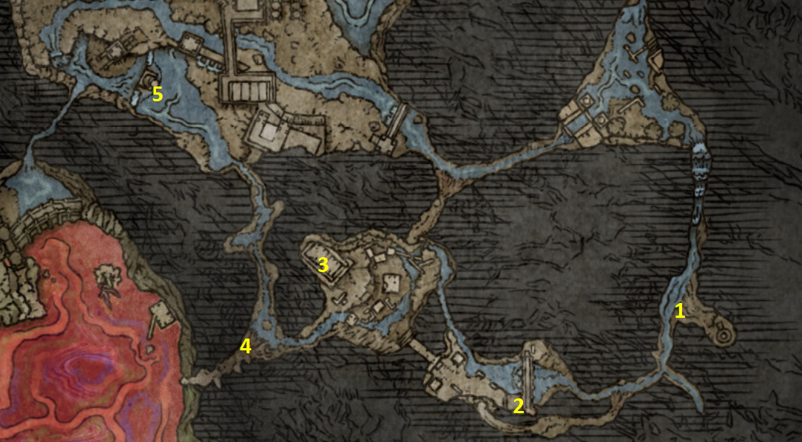
PSN karta #1–#5 • lower accessible route • HR walkthrough • ENG nazivi
Ainsel River — Part 1
1Ainsel River Well Depths0/1
Vrati se na Ainsel River Well iz prethodnog Liurnia dijela i koristi veliki lift prema dolje. Aktiviraj Ainsel River Well Depths Site of Grace. Od Gracea prati rijeku kroz tunele i ant nests. U ovom početnom prolazu nema jedinstvenog ključnog loota, pa nema potrebe čistiti baš svakog mrava ako želiš bržu rutu.
2Uhl Palace Ruins → Ainsel River Sluice Gate0/1
Nakon ant tunnels stižeš u Uhl Palace Ruins. Postoje dva prolaza kroz ruševine; oba te mogu dovesti do lifta. Pronađi elevator i popni se na gornju razinu, zatim obavezno aktiviraj Ainsel River Sluice Gate Site of Grace.
POKUPI / ODRADI: Ainsel River Sluice Gate Site of Grace
3Map: Ainsel River + Hermit Merchant0/1
Iza prvog većeg buildinga izlaziš u otvoreno područje. Ogromni Malformed Star iz daljine ispaljuje magic projectiles. Trči od zaklona do zaklona i ciljaj building direktno ispod njega — neprijatelja sada ne možemo normalno dosegnuti. Unutar zgrade pronađi corpse s map fragmentom i merchant-a.
POKUPI / ODRADI: Map: Ainsel River • Nomadic Warrior's Cookbook [16] • Perfumer's Cookbook [4] • Prisoner set • Celestial Dew • Lost Ashes of War
4Ant tunnels — Immunizing Horn Charm0/1
Od merchant/map zgrade prati rijeku prema zapadu i uđi u novi sustav tunela s ant nests. Pretraži bočne dijelove prolaza prije nego nastaviš prema sjeveru.
POKUPI / ODRADI: Immunizing Horn Charm
5Dragonkin Soldier of Nokstella0/1
Nastavi sjeverno kroz završni dio trenutne rute do velike boss arene. Dragonkin Soldier ima velike sweeping udarce i vrlo velik reach; drži se uz njegovu stražnju/bočnu stranu kad je sigurno i povlači se kod velikih lightning napada. Nakon pobjede obavezno otvori chest ispod ogromnog statue-a.
POKUPI / ODRADI: Frozen Lightning Spear • Great Ghost Glovewort
BOSS: Dragonkin Soldier of Nokstella
Ainsel River Part 1 — checklist
☐ Ainsel River Well Depths Site of Grace aktiviran
☐ Ainsel River Sluice Gate Site of Grace aktiviran na #2
☐ Map: Ainsel River uzet na #3
☐ Hermit Merchant na #3 pronađen
☐ Immunizing Horn Charm uzet na #4
☐ Dragonkin Soldier of Nokstella poražen na #5
☐ Frozen Lightning Spear dobiven
☐ Great Ghost Glovewort uzet iz chesta ispod statue-a
☐ Nije pokušano preskakati u kasniji, zaključani dio Ainsel Rivera
CHAPTER 7 — LIURNIA NORTH + RAYA LUCARIA ACADEMY 0/14
Master Guide V30 · PART 7 · 14 numeriranih ruta. Oznake se spremaju samo u Walkthroughu.
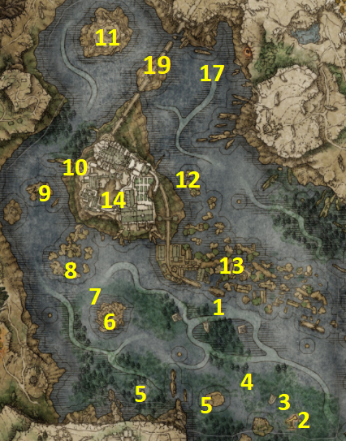
PSN karta • HR walkthrough • ENG nazivi • NPC quest-safe povratci
Liurnia North — prije Academyja
1Map: Liurnia, North0/1
Od Scenic Isle Site of Gracea, gdje smo već našli Patchesa, jaši direktno sjeverno kroz jezero prema Academy Gate Town. Kod Site of Gracea pronađi map pillar.
POKUPI / ODRADI: Map: Liurnia, North
2Rya — necklace quest0/1
Od Patchesa/Scenic Islea kreni istočno prema građevini kod telescopea. Razgovaraj s Ryom i prihvati pomoći pronaći njezinu ogrlicu.
3Deathbird — noć0/1
Malo sjeverozapadno od Rye vrati se noću.
POKUPI / ODRADI: Red-Feathered Branchsword
BOSS / INVADER: Deathbird
4Boilprawn Shack — Blackguard Big Boggart0/1
Sjeverozapadno od Deathbirda pronađi Boilprawn Shack. Boggart ima Ryinu ogrlicu. NEMOJ ga ubiti: kupi Rya's Necklace za 1,000 Runes.
POKUPI / ODRADI: Rya's Necklace • Boiled Prawn • Spread Out
5Dexterity-knot Crystal Tear0/1
Jugozapadno od Boilprawn Shacka na malom otoku pronađi veliku stone basin.
POKUPI / ODRADI: Dexterity-knot Crystal Tear
Od otoka s Crystal Tear idi zapadno oko stijena i aktiviraj Folly on the Lake Site of Grace. Na PSN karti je i ova susjedna točka označena brojem 5.
POKUPI / ODRADI: Folly on the Lake Site of Grace
6Rose Church — White Mask Varré0/1
Sjeverozapadno od Folly on the Lakea dođi na otok s Rose Church. U crkvi pokupi cookbook.
POKUPI / ODRADI: Nomadic Warrior's Cookbook [12]
7Bloodflame Blade scarab0/1
Sjeverozapadno od Rose Churcha pronađi scarab.
POKUPI / ODRADI: Bloodflame Blade
8Temple Quarter0/1
Nastavi sjeverozapadno do Temple Quartera. Chest s južne strane ruševina sadrži weapon.
POKUPI / ODRADI: Icerind Hatchet
9Glintstone Dragon Smarag + Academy Glintstone Key0/1
Sjeverozapadno od Temple Quartera na otoku je Glintstone Dragon Smarag. Academy Glintstone Key leži iza/uz njegovu poziciju; možeš ga pokupiti i bez ubijanja zmaja, ali za 100% rutu riješi bossa.
POKUPI / ODRADI: Dragon Heart • Academy Glintstone Key
BOSS / INVADER: Glintstone Dragon Smarag
10Academy Crystal Cave0/1
Sjeveroistočno od Smaraga. Ulaz traži 2 Stonesword Keys. Nakon wooden door udari illusory wall lijevo za put do Crystal Staffa. Nakon dual Crystalian bossa koristi lift i izađi na vrh Academyja.
POKUPI / ODRADI: Stonesword Key • Crystal Staff • Crystal Release • Terra Magica
BOSS / INVADER: Crystalian (Spear) + Crystalian (Staff)
11Testu's Rise0/1
Na otoku sjeveroistočno od Academy Crystal Cavea aktiviraj puzzle i pronađi tri spirit turtles: sjeverno uz cliff, južno ispod cliffa i istočno na stablu.
POKUPI / ODRADI: Memory Stone
12Gate Town North — Death Rite Bird0/1
Sjeverno od Academy Gate Towna aktiviraj Gate Town North Site of Grace. Južno od Gracea dođi noću za boss fight. Na malom toweru južno od bossa otvori chest.
POKUPI / ODRADI: Ancient Death Rancor • Stonesword Key
BOSS / INVADER: Death Rite Bird
13Academy Gate Town — Diallos + loot0/1
Kod područja map pillar-a istraži Gate Town. Na rooftop-u sjeverno od Gracea pronađi Diallosa. U središnjem dijelu uzmi cookbook s towera, zapadno Golden Seed, na lower west dijelu ispod arka ubij ceiling scarab, a na višoj zapadnoj razini uzmi shield.
POKUPI / ODRADI: Glintstone Craftsman's Cookbook [4] • Golden Seed • Ash of War: Charge Forth • Blue-White Wooden Shield
14Raya Lucaria Academy — glavni prolaz0/1
Na kraju Gate Town puta dođi pred Academy barrier. Pokupi Meeting Place Map ako ga još nemaš. Academy Glintstone Key iz #9 omogućuje prolaz. Nakon barijere najprije idi jugoistočno do merchant-a, zatim se vrati prema broken bridgeu.
POKUPI / ODRADI: Meeting Place Map • Fanged Imp Ashes • Fevor's Cookbook [2] • Lost Ashes of War • Warrior set
Raya Lucaria Academy — detaljni unutarnji walkthrough
14A. Graveyard → Schoolhouse Classroom
Uđi liftom u Academy. U graveyardu pronađi Marionette Soldier Ashes na cliffu s dva Marionette neprijatelja. Dalje se s desnog ledgea spusti do Carian Knight seta kod praying enemies. Pred kraj graveyarda lijevo ispod cliffa ubij scarab za Spectral Lance. Iza conveyor lifta porazi gravity enemyja za Gravity Well i aktiviraj Schoolhouse Classroom Site of Grace.
POKUPI: Marionette Soldier Ashes • Carian Knight set • Ash of War: Spectral Lance • Gravity Well
14B. Classroom secrets → Red Wolf of Radagon
Iza Schoolhouse Classrooma skreni lijevo u hallway. Uzmi Conspectus Scroll s corpse-a i Glintstone Craftsman's Cookbook [5] iz chesta. Udari wall iza corpse-a za secret path do Olivinus Glintstone Crown. Neposredno prije boss rooma udari bookshelf/wall lijevo i očisti skriveni dio za Stonesword Key, Comet i Graven-School Talisman.
POKUPI: Conspectus Scroll • Glintstone Craftsman's Cookbook [5] • Olivinus Glintstone Crown • Stonesword Key • Comet • Graven-School Talisman
BOSS: Red Wolf of Radagon → Memory Stone
14C. Debate Parlor courtyard → rooftops
Nakon Red Wolfa izađi u courtyard. Odmah desno preko balkona spusti se na ledge, popni ladder i uđi kroz broken window: chest sadrži Radagon Icon (Legendary Talisman). U courtyard fountainu uzmi Stonesword Key. Lijevom rubble rutom uđi u sobu s Glintstone Whetblade. Kod golden tree lijevo pokupi Golden Seed; crystal crab dalje lijevo daje Karolos Glintstone Crown. Otvori shortcut natrag prema courtyardu, zatim nastavi na rooftops.
POKUPI: Radagon Icon • Stonesword Key • Glintstone Whetblade • Golden Seed • Karolos Glintstone Crown
14D. Rooftops — Full Moon Crossbow → drugi Academy Glintstone Key
Na rooftops kreni prema jugozapadu, popni ladder prema battlemageu. Zapadno, iza Marionettes, veliki ladder vodi na bell tower s Full Moon Crossbow. Nastavi kroz sljedeći tower i pažljivo padaj kroz wooden floor; crystal crab daje Lazuli Glintstone Crown. Dalje preskoči na tower po Imbued Sword Key. Pred kraj rooftops rute doći ćeš iznad prve Academy church: spusti se s beams na chandelier i uzmi DRUGI Academy Glintstone Key. Niže ledges daju Shattering Crystal; balkon u kutu ima crystal crab za Twinsage Glintstone Crown. U bočnoj crystal sobi uzmi Azur's Glintstone Staff.
POKUPI: Full Moon Crossbow • Lazuli Glintstone Crown • Imbued Sword Key • Academy Glintstone Key (drugi) • Shattering Crystal • Twinsage Glintstone Crown • Azur's Glintstone Staff
⚠️ NPC — Drugi Academy Glintstone Key sa chandeliéra sačuvaj za Thopsa. Prvi ključ iz rute #9 koristiš za vlastiti ulaz.
14E. Moongrum → Rennala
Vrati se u courtyard i kreni prema završnoj zgradi preko beams desno. Prođi boulder trap i porazi Moongrum, Carian Knight za Carian Knight's Shield. Kroz lijevi gate sa sorcererom možeš preskočiti na drugi building i ladderom doći do chesta s Glintstone Scarabom, koji čuvaju Mad Pumpkin Head i sorcerers. Zatim liftom iza Moongruma idi do Rennale.
POKUPI: Carian Knight's Shield • Glintstone Scarab
BOSS: Rennala, Queen of the Full Moon → Remembrance of the Full Moon Queen + Great Rune of the Unborn
⚠️ Prije Rennale otvori shortcut; nakon pobjede provjeri Thopsovu granu i Yurin summon sign na Main Academy Gate mostu, ako su prethodni uvjeti zadovoljeni. Nisu nepovratno zaključani samom pobjedom nad Rennalom.
Obavezni cleanup nakon Rennale
👥 Chapter 7 — NPC provjera i cleanup (zasebne kvačice)
↳ Uvjet: Thops je prethodno upoznat u Church of Irith; ključ iz #9 ostaje za vlastiti ulaz.
↳ Predaja je nakon pronalaska drugog ključa; ako Thops nije na Church of Irith, provjeri prethodne korake.
↳ Provjeri i Thops’s Barrier te Academy Glintstone Staff prema dostupnom dropu; ne označavaj prije stvarnog preuzimanja.
↳ Uvjetno: prethodni Yura koraci; ne tvrditi da je dostupno u svakom stanju questa.
↳ Ako je njegov quest još aktivan; nagrada i sljedeća lokacija ovise o napretku.
↳ Njegov Roundtable follow-up zasebna je radnja u ranijoj ruti.
↳ Ovo je kontrola prethodnih ruta, ne novi pickup unutar Academyja.
↳ Uvjetna quest kontrola prethodnih ruta.
↳ Nije automatski dovršeno pobjedom nad Rennalom.
↳ Nije predmet unutar Academyja; zasebna cleanup lokacija.
Cleanup lokacije otključane Academyjem
Liurnia North + Raya Lucaria — završna checklist
☐ Map: Liurnia, North uzet na #1
☐ Rya quest prihvaćen; Rya's Necklace kupljen, ne ukraden silom
☐ Boggart: Boiled Prawn kupljen + Spread Out
☐ Varré na Rose Churchu razgovor odrađen; online ili offline grana svjesno odabrana
☐ Academy Glintstone Key uzet kod Smaraga
☐ Terra Magica uzet iz Academy Crystal Cavea
☐ Memory Stone uzet iz Testu's Rise
☐ Diallos pronađen u Academy Gate Townu + Roundtable follow-up
☐ Yura summon protiv Ravenmount Assassin + razgovor nakon borbe
☐ Svi ključni Academy scrolls/crowns/keys pokupljeni
☐ Drugi Academy Glintstone Key sačuvan za Thopsa
☐ Red Wolf of Radagon poražen
☐ Radagon Icon uzet
☐ Rennala poražena; Great Rune of the Unborn dobiven
☐ Thops: drugi key predan + Erudition + Academy cleanup
☐ Corhyn: razgovor o Goldmasku aktiviran
☐ Converted Fringe Tower očišćen nakon Erudition + Crown
☐ Rogier/Diallos provjereni prije daljnjih velikih NPC questova
CHAPTER 8 — LIURNIA OF THE LAKES (WEST) 0/12
Master Guide V30 · PART 8 · rute #1–12 i #14–36 prema izvornom tekstu; brojevi #13, #33 i #35 zahtijevaju dodatnu provjeru Word tablica.
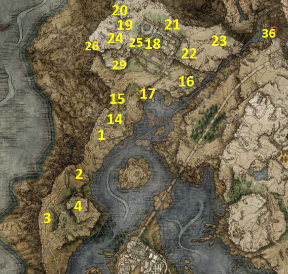
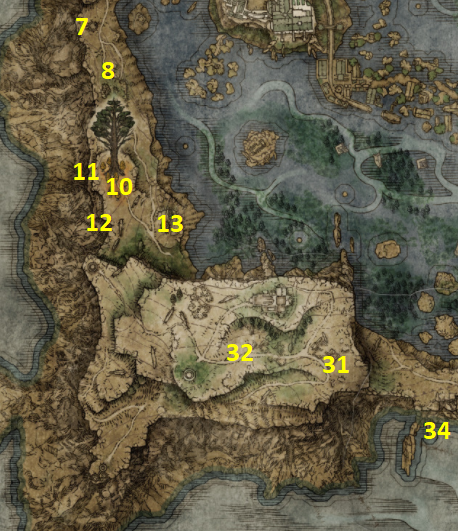
Caria Manor • Ranni / Seluvis • Village of the Albinaurics • Ruin-Strewn Precipice
1Map: Liurnia, West0/1
Od Testu's Rise kreni sjever-sjeverozapad. Kod map pillar-a uz cestu uzmi kartu zapadnog dijela Liurnije.
POKUPI / ODRADI: Map: Liurnia, West
2Carian Knight's Sword0/1
Od map pillar-a prati cestu južno dok ne sustigneš convoy. Otvori chest na stražnjem dijelu kočije.
POKUPI / ODRADI: Carian Knight's Sword
3Jellyfish Shield0/1
Nastavi južno uz zapadni rub regije. Kod skupine Spirit Jellyfish pokupi shield.
POKUPI / ODRADI: Jellyfish Shield
4The Four Belfries0/1
Nastavi cestom prema jugu i popni se do The Four Belfries. Na najvišem belfryju otvori chest i uzmi ključ za waygate portale.
POKUPI / ODRADI: Imbued Sword Key
5Chapel of Anticipation0/1
U Chapel of Anticipation provjeri Stormhawk King (ključni predmet za Nepheli). Sačuvaj ga; ne zamijeni ga sa Stormhawk Deenh Spirit Ashes. Nakon Nephelina događaja u Village of the Albinaurics i odgovarajućih razgovora s Gideonom vrati se Nepheli u Roundtable Hold i predaj Stormhawk King kada se pojavi opcija. Ako opcija nedostaje, nemoj pretpostaviti da je quest završen — provjeri ranije razgovore.
Aktiviraj waygate koji vodi natrag u početno područje igre. Ako Grafted Scion nije ubijen na samom početku, sada ga porazi. Nastavi do početne crkve; vrata koja su prije bila zaključana sada su dostupna.
POKUPI / ODRADI: Ornamental Straight Sword • Golden Beast Crest Shield • The Stormhawk King • Stormhawk Deenh
BOSS / INVADER: Grafted Scion (ako je još živ)
6Four Belfries → Siofra / Nokron overlook0/1
Vrati se u The Four Belfries i koristi portal koji vodi na izolirani dio iznad Siofra Rivera. Pokupi predmet; Crucible Knight ovdje nije obavezan za reward.
POKUPI / ODRADI: Mottled Necklace
7Cuckoo's Evergaol0/1
Od The Four Belfries nastavi južno do Evergaola.
POKUPI / ODRADI: Greatblade Phalanx
BOSS / INVADER: Bols, Carian Knight
8Revenger's Shack — Edgar0/1
Nastavi južno cestom do Revenger's Shack. Budući da smo u Weeping Peninsula odradili Irina/Edgar korake, ovdje se treba aktivirati invazija.
POKUPI / ODRADI: Shabriri Grape • Banished Knight's Halberd +8
BOSS / INVADER: Edgar the Revenger
9Minor Erdtree0/1
Južno od Revenger's Shack dođi do Minor Erdtreea.
POKUPI / ODRADI: Cerulean Crystal Tear • Ruptured Crystal Tear
BOSS / INVADER: Erdtree Avatar
10Sword Dance0/1
Zapadno od Minor Erdtreea spusti se na lower level i pronađi scarab.
POKUPI / ODRADI: Ash of War: Sword Dance
11Road's End Catacombs0/1
Prati lower road južno do catacombsa. Ovaj dungeon ima više illusory walls. Na kraju glavnog puta udari zid za Raya Lucaria Soldier Ashes. Pri povratku udari zid pri dnu stepenica prema izlazu za Watchdog's Staff. Kod sljedećih stepenica skreni desno, udari drugi archway wall i nastavi kroz još skrivene zidove do bossa.
POKUPI / ODRADI: Raya Lucaria Soldier Ashes • Watchdog's Staff • Glintstone Sorcerer Ashes
BOSS / INVADER: Spirit-Caller Snail
12Converted Tower0/1
Jugoistočno od Minor Erdtreea dođi do Converted Towera. Stani pred statue i koristi Erudition gesture dok se ne pojavi pristup prema vrhu.
POKUPI / ODRADI: Memory Stone
14Kingsrealm Ruins0/1
Vrati se sjeverno. Sjeveroistočno od mjesta gdje smo uzeli map fragment pronađi Kingsrealm Ruins. U sjeveroistočnom dijelu pronađi illusory floor/entrance, spusti se i riješi podzemnu sobu.
POKUPI / ODRADI: Frozen Needle
BOSS / INVADER: Royal Revenant
15Smithing Master Iji0/1
Prođi kroz Kingsrealm Ruins i razgovaraj s Ijijem. Pitaj ga o Blaiddu i iscrpi novi dijalog.
POKUPI / ODRADI: Carian Filigreed Crest postaje dostupan za kupnju
16Main Caria Manor Gate0/1
Nastavi cestom prema Caria Manoru i aktiviraj Main Caria Manor Gate Site of Grace.
17Hoarfrost Stomp0/1
Prije ulaska u manor idi do malog jezera istočno od ulaza. Pronađi invisible scarab po tragovima u vodi.
POKUPI / ODRADI: Ash of War: Hoarfrost Stomp
18Intelligence-knot Crystal Tear0/1
S water levela kod Testu's Rise priđi području jugoistočno od manora, ispod cliffova. Na velikoj stone bowl/plate koju čuvaju hand enemies pokupi tear.
POKUPI / ODRADI: Intelligence-knot Crystal Tear
19Caria Manor — courtyard0/1
Uđi u Caria Manor. U courtyardu idi na istočnu stranu u malu prostoriju po cookbook. Zatim pretraži gardens i scarab iza njih.
POKUPI / ODRADI: Glintstone Craftsman's Cookbook [6] • Ice Crest Shield • Carian Piercer
20Sword of Night and Flame0/1
Od Manor Lower Level Site of Grace izađi na walkways. Na prvom toweru skreni lijevo; nakon drugog tower-a pogledaj lijevo s mosta. Spusti se na platformu, zatim na sljedeću zgradu. Kroz otvor i ljestve uđi u sobu s chestom.
POKUPI / ODRADI: Sword of Night and Flame — Legendary Armament
21Urumi0/1
Prije lifta prema sljedećem Graceu zaleti se i skoči na ramparts s desne strane. Prođi pokraj hand enemies.
POKUPI / ODRADI: Urumi
22Manor Upper Level → Royal Knight Loretta0/1
Aktiviraj Manor Upper Level Site of Grace. Pokupi Golden Seed kod zlatnog saplinga. Nastavi do Troll Knighta, zatim prije velike boss arene kroz otvor lijevo pažljivo se spuštaj niz cliffove po Ash of War. Vrati se gore i uđi u završnu arenu.
POKUPI / ODRADI: Golden Seed • Troll Knight's Sword • Ash of War: Carian Grandeur • Loretta's Greatbow • Ash of War: Loretta's Slash
BOSS / INVADER: Royal Knight Loretta
23Chilling Mist0/1
Iza Lorettine arene izađi u Three Sisters područje. Zapadno u ruševinama pronađi scarab.
POKUPI / ODRADI: Ash of War: Chilling Mist
24Renna's Rise — zaključano0/1
Sjeverno od ruševina nalazi se Renna's Rise. Vrata su zasad sealed; samo zapamti lokaciju.
25Behind Caria Manor + Frozen Armament0/1
Kreni cestom sjeverno od manora prema istočnom dijelu Three Sisters. Na putu ubij scarab, zatim aktiviraj Behind Caria Manor Site of Grace.
POKUPI / ODRADI: Frozen Armament
26Graveyard — Albinauric Ashes + Resurrection Painting reward0/1
Jugoistočno od Behind Caria Manor Gracea pretraži graveyard. Budući da smo Resurrection Painting uzeli u Artist's Shacku, ovdje se pojavljuje ghost painter reward.
POKUPI / ODRADI: Albinauric Ashes • Juvenile Scholar Cap • Juvenile Scholar Robe
27Royal Grave Evergaol0/1
Sjeveroistočno od graveyarda pronađi Evergaol.
POKUPI / ODRADI: Meteorite
BOSS / INVADER: Onyx Lord
28Glintstone Dragon Adula — prvi susret0/1
Južno od Renna's Rise, u Three Sisters, započni borbu s Glintstone Dragon Adula. Kada mu HP padne približno na polovicu, odletjet će. To je namjerno i boss se završava mnogo kasnije.
29Pidia, Carian Servant0/1
Istočno od Aduline lokacije spusti se prema Caria Manoru preko cliff/platformi do Pidije. Provjeri shop. U obližnjim rampartsima giant crab čuva Stonesword Key.
POKUPI / ODRADI: Glintstone Craftsman's Cookbook [7] • Ash of War: Carian Retaliation • Ripple Blade • Black Leather Shield • Celestial Dew • Larval Tear • Stonesword Key
30Ranni's Rise — početak Ranni questline0/1
Uđi u Ranni's Rise zapadno od Aduline lokacije i popni se do Ranni. Zbog aktivnog Rogier questlinea može te prvo odbiti.
31Siofra River — Blaidd0/1
Fast travel natrag u Siofra River. Od područja Ancestor Spirit rute prati cliff prema Spiritspringu dok ne pronađeš Blaidda.
POKUPI / ODRADI: Iscrpi Blaiddov dijalog o Nokronu
32Seluvis's Rise + Sellen detour0/1
Vrati se u Three Sisters i uđi u Seluvis's Rise jugoistočno od Ranni's Rise. Prihvati njegov zadatak. Na vrhu uzmi Memory Stone; na stijenama iza tower-a pokupi Black Wolf Mask.
POKUPI / ODRADI: Seluvis's Introduction • Seluvis's Potion • Memory Stone • Black Wolf Mask
Prije nego što zaključiš Nephelin quest, u Liurniji posjeti Village of the Albinaurics (ispod zapadnog platoa). Razgovaraj s Nepheli na putu prema selu i iscrpi dijalog; potom porazi Omenkiller bossa u selu. Ako si bossa već porazio, vrati se i provjeri je li Nepheli nastavila u Roundtable Hold.
Roundtable Hold: nakon događaja u selu provjeri Nepheli u donjem dijelu zgrade, razgovaraj s njom i zatim s Gideonom o Nepheli; ponovno razgovaraj s Nepheli. Kasnije joj predaj Stormhawk King iz Chapel of Anticipation (CH8 #5). Ako opcija predaje nije dostupna, prvo iscrpi razgovore i osvježi područje.
STOP — Seluvis's Potion: za našu standardnu rutu ne predaj potion Nepheli; prethodni odabir predaje Gideonu ostaje na snazi. Predaja Nepheli može onemogućiti njezin završetak u Stormveilu. Ovaj dodatni obilazak ne mijenja žute brojeve PSN karte.
34Vow of the Indomitable0/1
Od Folly on the Lake Site of Grace kreni južno u swamp ispod planinskog platoa. U jugoistočnom dijelu pronađi scarab.
POKUPI / ODRADI: Ash of War: Vow of the Indomitable
36Ruin-Strewn Precipice → Altus Plateau0/1
Od Testu's Rise prati rijeku sjeveroistočno duboko u canyon. Na putu pokupi Golden Seed. Prije prve ladder sekcije pronađi alcove s bats i scarabom. U samom Precipiceu, kod singing bat + magic bat područja pokupi Lost Ashes of War iza njih. Umjesto lifta popni se ljestvama na rooftops; kod giant octopusa uzmi Serpent-God's Curved Sword. Na vrhu uđi u boss arenu. Ako je summon sign dostupan, summonaj Great Horned Tragoth barem jednom radi gesturea.
POKUPI / ODRADI: Golden Seed • Ash of War: Barbaric Roar • Lost Ashes of War • Serpent-God's Curved Sword • Casual Greeting • Magma Wyrm's Scalesword • Dragon Heart
BOSS / INVADER: Magma Wyrm Makar
Liurnia West — quest-safe kontrola
☐ The Stormhawk King uzet i sačuvan za Nepheli
☐ Edgar the Revenger riješen; Shabriri Grape predan Hyetti
☐ Hyetta premještena u Bellum Church i Fingerprint Grape predan
☐ Iji razgovor o Blaiddu odrađen
☐ Caria Manor očišćen; Royal Knight Loretta poražena
☐ Adula odletjela na ~50% HP — normalno
☐ Ranni quest pokrenut uz Rogier detour
☐ Iji, Blaidd i Seluvis projekcije iscrpljene kod Ranni's Rise
☐ Blaidd razgovor u Siofra Riveru odrađen
☐ Seluvis's Introduction odnesen Sellen; zatim povratak Blaiddu
☐ Seluvis's Potion NIJE dan Nepheli; predan Gideonu
☐ Albus dao Haligtree Secret Medallion (Right)
☐ Ensha invazija riješena + Royal Remains set uzet
☐ Nepheli dobila The Stormhawk King
☐ Latenna quest pokrenut u Slumbering Wolf's Shack
☐ Seluvis secret puppet chamber pronađen prije kasnijeg Ranni point-of-no-returna
☐ Magma Wyrm Makar poražen; izlaz u Altus Plateau otključan
CHAPTER 9 — ALTUS PLATEAU (EARLY SELUVIS DETOUR) 0/4
Prije odlaska iz ranog Altusa provjeri postojeću listu na kraju rute #4: Magic Scorpion Charm dobiven, Amber Draught NIJE predan Ranni, razgovori s Roderikom, Dung Eaterom i Corhynom evidentirani. Ovo je podsjetnik na Word V30, bez novih kvačica. Navedeni uvjeti ne znače da je cijeli quest automatski završen.
Master Guide V30 · PART 9 · 4 numeriranih ruta. Oznake se spremaju samo u Walkthroughu.
CH9 detaljni zadaci: 0/13
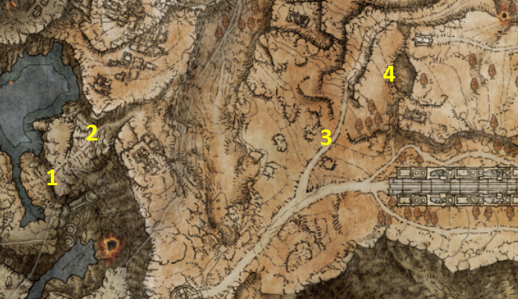
PSN karta #1–#4 • samo rani quest detour • povratak prije punog Altus cleanupa
1Abandoned Coffin — prvi Altus Site of Grace0/1
Nakon izlaska iz Ruin-Strewn Precipicea i boss arene Magma Wyrm Makara, aktiviraj prvi Site of Grace za siguran povratak. Pretraži coffins u početnom području; na jednom corpse-u je Ruler's set.
POKUPI / ODRADI: Abandoned Coffin Site of Grace • Ruler's Mask • Ruler's Robe
2Ancient Dragon Lansseax — prvi susret0/1
Kreni uzbrdo iz početnog područja. Ancient Dragon Lansseax će napasti na cesti. Ovo nije završna borba: spusti mu HP približno na 75% i dragon će odletjeti. Ako ti je trenutno prejak, prioritet je preživjeti i zadržati Grace; završni susret dolazi kasnije.
BOSS: Ancient Dragon Lansseax — odlazi nakon otprilike 25% izgubljenog HP-a
3Map: Altus Plateau0/1
Nakon izlaska u glavni otvoreni dio Plateau-a zasad ignoriraj side sadržaj. Jaši prema istoku cestom i aktiviraj Graceove pokraj kojih prirodno prolaziš. Kod map pillar-a nasred ceste uzmi regionalni map fragment.
POKUPI / ODRADI: Map: Altus Plateau
4Amber Starlight0/1
Od map pillar-a kreni sjeveroistočno. Na odgovarajućem mjestu spusti se Torrentom u plitku udubinu/skriveni dio uz liticu. Među manjim octopus neprijateljima pronađi ključni quest item.
POKUPI / ODRADI: Amber Starlight
Early Altus — kontrola prije odlaska
☐ Abandoned Coffin Site of Grace aktiviran
☐ Ruler's set uzet na #1
☐ Lansseax prvi susret aktiviran na #2; dragon odletio / susret preživljen
☐ Map: Altus Plateau uzet na #3
☐ Amber Starlight uzet na #4
CHAPTER 10 — CAELID 0/36
Master Guide V30 · PART 10 · 36 numeriranih ruta. Oznake se spremaju samo u Walkthroughu.
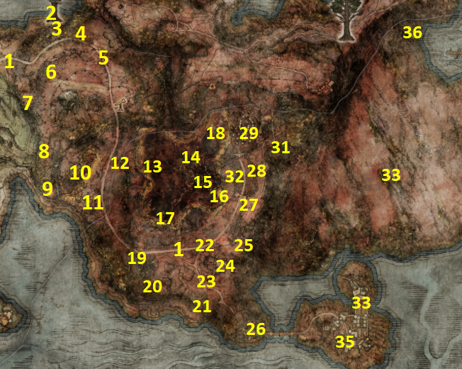
PSN karta #1–#36 • Caelid cleanup • Millicent • Redmane Castle • Starscourge Radahn
1Map: Caelid0/1
Iz Smoldering Church kreni glavnom cestom istočno pa južno. Za sada ignoriraj jače neprijatelje i side bossove dok cesta ne skrene istočno. Kod pillar-a uzmi map fragment.
POKUPI / ODRADI: Map: Caelid
2Minor Erdtree0/1
Od Smoldering Church prati sjeverni cliff prema istoku do Minor Erdtreea.
POKUPI / ODRADI: Greenburst Crystal Tear • Flame-Shrouding Cracked Tear
BOSS / INVADER: Putrid Avatar
3Minor Erdtree Catacombs0/1
Na južnoj strani Minor Erdtreea pronađi ulaz u catacombs.
POKUPI / ODRADI: Imp Head (Wolf) • Mad Pumpkin Head Ashes
BOSS / INVADER: Erdtree Burial Watchdog duo
4Ambushed convoy0/1
Vrati se prema Smoldering Church i prati cestu istočno pokraj Shack of the Rotting. Kod uništenog convoya scarab čuvaju dva velika Monstrous Dog neprijatelja.
POKUPI / ODRADI: Whirl, O Flame! • Greatsword
5Caelem Ruins0/1
Južno od convoya uđi u podzemnu prostoriju ruševina.
POKUPI / ODRADI: Visage Shield
BOSS / INVADER: Mad Pumpkin Head duo
6Forsaken Ruins0/1
Zapadno od Caelem Ruins pronađi sealed underground entrance i otključaj ga Stonesword Keyem.
POKUPI / ODRADI: Sword of St. Trina
7Gael Tunnel0/1
U zapadnom dijelu Caelida, južno od Forsaken Ruins, očisti tunnel. Alexander se zbog naše Ranni/Radahn progresije možda više neće nalaziti ovdje.
POKUPI / ODRADI: Cross-Naginata • Moonveil • Dragon Heart
BOSS / INVADER: Magma Wyrm
8Fort Gael North — Flame of the Redmanes0/1
Južno od Gael Tunnela aktiviraj Fort Gael North Site of Grace. Istočno prati tragove invisible scaraba; pazi na Monstrous Dogs.
POKUPI / ODRADI: Ash of War: Flame of the Redmanes
9Fort Gael0/1
Nastavi južno do forta. Lion Guardian daje Lion's Claw. Pretraži fort i vanjski dio s dva flame chariot neprijatelja.
POKUPI / ODRADI: Ash of War: Lion's Claw • Katar • Starscourge Heirloom • Flame, Grant Me Strength
10Gaol Cave0/1
Istočno od Fort Gaela, u rot/poison području, otključaj cave s 2 Stonesword Keys. Otvori ćelije i nakon bossa izađi stražnjim putem.
POKUPI / ODRADI: Stonesword Key • Pillory Shield • Wakizashi • Putrid Corpse Ashes • Regalia of Eochaid
BOSS / INVADER: Frenzied Duelist
11Caelid Waypoint Ruins0/1
Južno od Gaol Cavea pronađi underground chest.
POKUPI / ODRADI: Meteoric Ore Blade
12Astray from Caelid Highway North0/1
Sjeveroistočno od Waypoint Ruins aktiviraj Grace i pronađi obližnji scarab.
POKUPI / ODRADI: Ash of War: Lifesteal Fist
13Street of Sages Ruins0/1
Sjeveroistočno od Gracea uđi u Swamp of Aeonia. Koristi Torrent kako ne bi nepotrebno skupljao Scarlet Rot.
POKUPI / ODRADI: Traveler's set • Meteorite Staff • Rock Sling
14Millicent invasion0/1
Kreni istočno kroz swamp; NPC invader Millicent će napasti. Ova invazija ne prekida njezinu kasniju questline.
BOSS / INVADER: Millicent
15Commander O'Neil0/1
Aktiviraj Inner Aeonia Site of Grace pa kreni južno do boss područja.
POKUPI / ODRADI: Commander's Standard • Unalloyed Gold Needle
BOSS / INVADER: Commander O'Neil
16Sacred Ring of Light0/1
Istočno od Commander O'Neil arene pronađi scarab.
POKUPI / ODRADI: Ash of War: Sacred Ring of Light
17Poisonous Mist0/1
Na jugozapadnom kraju swampa, na malom otoku, ubij scarab.
POKUPI / ODRADI: Ash of War: Poisonous Mist
18Poison Armament0/1
Na sjeveroistočnom kraju swampa prati trag invisible scaraba.
POKUPI / ODRADI: Poison Armament
19Decaying Ekzykes0/1
Od Astray from Caelid Highway North kreni južno do Caelid Highway South Gracea, zatim malo istočno.
POKUPI / ODRADI: Dragon Heart
BOSS / INVADER: Decaying Ekzykes
20Cathedral of Dragon Communion0/1
Jugoistočno od Ekzykesa uđi u Cathedral. Ovdje se proširuje Dragon Communion ponuda.
POKUPI / ODRADI: Ancient Dragon Apostle's Cookbook [3] • Dragonice / Rotten Breath / Glintstone Breath / Ekzykes's Decay / Agheel's Flame / Smarag's Glintstone Breath — prema dostupnim Dragon Hearts
21Caelid Catacombs0/1
Istočno od Cathedral spusti se niz cliff do ulaza. Miranda Sprout Ashes su iza illusory walla desno od stepenica u poison-flower dijelu. Lever je također iza illusory walla nasuprot boss dooru.
POKUPI / ODRADI: Miranda Sprout Ashes • Kindred of Rot Ashes
BOSS / INVADER: Cemetery Shade
22Nomadic Merchant0/1
Vrati se prema map pillar području. Istočno od njega pronađi merchant-a.
POKUPI / ODRADI: Nomadic Warrior's Cookbook [15] • Champion set • Greathelm
23Night's Cavalry0/1
Sjeverno od merchant-a dođi noću na cestu.
POKUPI / ODRADI: Ash of War: Poison Moth Flight
BOSS / INVADER: Night's Cavalry
24Golden Seed0/1
Južno od merchant-a uz glavnu cestu pokupi seed kod zlatnog saplinga.
POKUPI / ODRADI: Golden Seed
25Windy Crystal Tear0/1
Sjeveroistočno od Golden Seeda spusti se u pit koji čuvaju dva velika Monstrous Crow neprijatelja.
POKUPI / ODRADI: Windy Crystal Tear
26Death Rite Bird0/1
Dalje sjeveroistočno od teara dođi noću.
POKUPI / ODRADI: Death's Poker
BOSS / INVADER: Death Rite Bird
27Redmane bridge approach0/1
Na južnom kraju regije, kod mosta prema Redmane Castleu, popni se na tower pri početku mosta. Zapadno od tower-a pronađi scarab.
POKUPI / ODRADI: Arrow's Sting Talisman • Ash of War: Cragblade
28Sellia Gateway0/1
Od Death Rite Bird područja prati cestu sjeverno i prođi Sellia Gateway.
29Gowry's Shack0/1
Istočno iza gatewaya pronađi shack. Prije razgovora ukloni ili odvedi Monstrous Dog dovoljno daleko da ne ubije Gowryja. Predaj Unalloyed Gold Needle, reload i ponovno razgovaraj.
Prije predaje Gowryju porazi Commander O’Neila u Aeonia Swampu i uzmi Unalloyed Gold Needle. Gowryju predaj nepopravljeni needle; nakon odmora / reloada ponovno razgovaraj s njim i preuzmi popravljeni needle. Tek tada idi na CH10 #31 — Church of the Plague. Ako Gowry još nema needle, ne preskači ponovno učitavanje.
POKUPI / ODRADI: Gowry quest pokrenut
30Sellia, Town of Sorcery0/1
Sjeverno od Gowryja riješi puzzle paljenjem 3 flames na towerima. Istraži rooftops i zatim otvori tri prethodno sealed chesta.
POKUPI / ODRADI: Redmane Painting • Rotten Stray Ashes • Golden Seed • Stonesword Key • Ash of War: Double Slash • Cerulean Tear Scarab • Staff of Loss • Night Comet • Imbued Sword Key • Spelldrake Talisman +1 • Nox Flowing Sword • Lusat's Glintstone Staff
BOSS / INVADER: Nox Swordstress & Nox Priest
⚔️ BOSS: Nox Swordstress & Nox Priest
31Church of the Plague — Millicent0/1
Iz Sellije prođi kroz desni otvoreni gate i prati stazu do crkve. Pokupi Sacred Tear. Razgovaraj s Millicent i predaj repaired Unalloyed Gold Needle. Restaj na Graceu i ponovno razgovaraj dok ne dobiješ reward; još jednom restaj da ode.
POKUPI / ODRADI: Sacred Tear • Prosthesis-Wearer Heirloom
32Swamp Lookout Tower0/1
Od Church of the Plague kreni cestom južno kroz Sellia Gateway. U cell/tower području koje čuva Bloodhound Knight pokupi spell.
POKUPI / ODRADI: Eternal Darkness
33Redmane Castle — Radahn Festival0/1
Kreni na jugoistok do Redmane Castlea. Zbog Ranni/Radahn triggera festival je aktivan i velik dio castlea je privremeno prazan/zaključan. Uđi bočnim putem uz cliff, prođi graveyard i uzmi scarab. Otvori shortcut prema graveyardu i uzmi cookbook. Kod plaza Gracea nastavi prema festivalu.
POKUPI / ODRADI: Ash of War: Flaming Strike • Armorer's Cookbook [5]
34Starscourge Radahn0/1
Nakon Jerrenova govora koristi lift i waygate do Wailing Dunes. U borbi aktiviraj NPC summon signs po areni; mogu se ponovno prizivati nakon smrti. Ako još nemaš Casual Greeting, summonaj Great Horned Tragoth.
POKUPI / ODRADI: Remembrance of the Starscourge • Radahn's Great Rune • Casual Greeting ako nedostaje
BOSS / INVADER: Starscourge Radahn
35Redmane Castle — post-Festival cleanup0/1
Vrati se u Redmane Castle i iscrpi Jerrenov dijalog. Reload područje: castle se vraća u normalno stanje, neprijatelji i vrata ponovno su aktivni. Iz Chamber Outside the Plaza očisti courtyard i zgrade.
POKUPI / ODRADI: Flamberge • Armorer's Cookbook [4] • Red-Hot Whetblade • Ruins Greatsword — Legendary Armament
BOSS / INVADER: Misbegotten Warrior & Crucible Knight
⚔️ BOSS: Misbegotten Warrior & Crucible Knight
36War-Dead Catacombs0/1
Vrati se u Wailing Dunes i jaši do krajnjeg sjevera boss polja. Ulaz je skriven u cliffu. Dungeon je znatno teži od okolne rute.
POKUPI / ODRADI: Collapsing Stars • Radahn Soldier Ashes • Golden Seed • Redmane Knight Ogha
BOSS / INVADER: Putrid Tree Spirit
Caelid — quest-safe checklist
☐ Map: Caelid uzet
☐ Commander O'Neil poražen + Unalloyed Gold Needle uzet
☐ Gowryju predan Needle i njegov dijalog reloadan
☐ Sellia: sva 3 flames upaljena i sealed loot otvoren
☐ Zadnji Imbued Sword Key iskorišten za Pearldrake Talisman detour
☐ Millicent izliječena; Prosthesis-Wearer Heirloom dobiven; Gowry/Millicent reload koraci odrađeni
☐ Radahn Festival: Blaidd, Alexander, Finger Maiden i Jerren razgovori odrađeni
☐ Starscourge Radahn poražen
☐ Blaidd i Alexander razgovori nakon Radahna odrađeni prije odlaska
☐ Fia dala Weathered Dagger; dagger predan D-u; Twinned Set + D's Bell Bearing uzeti
☐ Redmane Castle vraćen u normalno stanje i post-Festival loot očišćen
☐ Alexander oslobođen Oil Potom u Liurniji
☐ Blaidd oslobođen iz Forlorn Hound Evergaola; Iji razgovori odrađeni
CHAPTER 11 — DRAGONBARROW 0/19
Master Guide V30 · PART 11 · 19 numeriranih ruta. Oznake se spremaju samo u Walkthroughu.
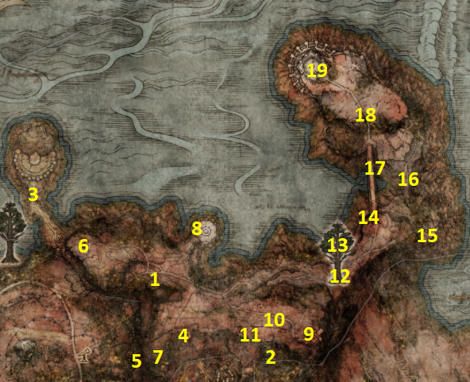
PSN karta #1–#19 • završni južni region • Radahn Great Rune • Gurranq
1Map: Dragonbarrow0/1
Od Caelem Ruins u Caelidu kreni istočno i Torrentom prijeđi canyon. Aktiviraj Dragonbarrow West Site of Grace. Nastavi malo istočno glavnom cestom do map pillar-a.
POKUPI / ODRADI: Dragonbarrow West Site of Grace • Map: Dragonbarrow
2Sellia Hideaway0/1
Vrati se u Church of the Plague. Kreni cestom sjeveroistočno prema višoj razini, zatim nastavi ravno prema sjeveroistoku do graveyarda. Kod Battlemage neprijatelja udari stijenu iza njega da otkriješ illusory entrance. U caveu probij prva dva illusory walla. U prvom pitu možeš uzeti Lost Ashes of War. Iza Stake of Marika prati crystal path prema gore; spusti se kroz otvor do chesta s Crystalian Ashes. U crystal roomu, iza corpse-a na ledgeu, udari zid i uzmi Crystal Spear. Na kraju pobijedi trio boss.
POKUPI / ODRADI: Lost Ashes of War • Crystalian Ashes • Crystal Spear • Crystal Torrent
BOSS / EVENT: Putrid Crystalian Trio
3Great-Jar / Deep Siofra Well0/1
Fast travel na Site of Grace kod izlaza Deep Siofra Well. Kroz canyon pronađi Spiked Palisade Shield ispod Giant neprijatelja. Na kraju puta razgovaraj s Great-Jarom. Ispred njega pojavit će se tri crvena summon signa. Moraš pobijediti sva tri Knights of the Great Jar u jednom pokušaju; odmor ili smrt resetiraju niz.
POKUPI / ODRADI: Spiked Palisade Shield • Great-Jar's Arsenal
BOSS / EVENT: 3× Knights of the Great Jar
4Sellia Crystal Tunnel0/1
Vrati se na Sellia Under-Stair Site of Grace i prati sjeverni rub/cliff do ulaza. Ovo je isti tunnel u koji može teleportirati trap chest iz Dragon-Burnt Ruins. Temeljito očisti platforme i rudarske dijelove.
POKUPI / ODRADI: Faithful's Canvas Talisman • Rock Blaster • Somberstone Miner's Bell Bearing [1]
BOSS / EVENT: Fallingstar Beast
5Abandoned Cave0/1
Od Smoldering Wall Site of Grace u Caelidu kreni istočno. Cave se može dosegnuti prelaskom preko velikog tree root/loga preko canyona. Unutra Scarlet Rot može brzo pojesti HP, zato pripremi Preserving Boluses ili Flame, Cleanse Me i prolazi rot područje bez zadržavanja.
POKUPI / ODRADI: Venomous Fang • Serpent Bow • Golden Scarab
BOSS / EVENT: Cleanrot Knight duo
6Isolated Merchant's Shack0/1
Sjeverozapadno od map pillar-a popni se u viši dio do shacka. Merchant prodaje korisnu Beast-Repellent Torch. Sjeverozapadno od shacka pronađi scarab.
POKUPI / ODRADI: Ash of War: Sky Shot • Spiked Caestus • Beast-Repellent Torch • Land of Reeds set
7Bell Bearing Hunter0/1
Kod Isolated Merchant's Shacka dođi noću. Ako se boss ne pojavi, restaj do Nightfall, ustani pa ponovno restaj i izađi iz Grace menija. Ovo je vrlo jaka Dragonbarrow verzija.
POKUPI / ODRADI: Gravity Stone Peddler's Bell Bearing
BOSS / EVENT: Bell Bearing Hunter
8Sellia Evergaol0/1
Južno od mjesta gdje si uzeo Dragonbarrow mapu, na cliffu iznad Abandoned Cavea, uđi u evergaol.
POKUPI / ODRADI: Battlemage Hugues Ashes
BOSS / EVENT: Battlemage Hugues
9Divine Tower of Caelid0/1
Sjeverno od map pillar-a priđi toweru izvana. Torrentom i pješice pažljivo prati roots/ledges po vanjskoj strani. Na putu prema ulazu pokupi Stonesword Key i Numen's Rune. Unutra postoje dva smjera: prema vrhu aktiviraš Radahn's Great Rune; prema dnu slijedi zahtjevan platforming do basement bossa. Nakon Godskin Apostle otvori sljedeću prostoriju.
POKUPI / ODRADI: Stonesword Key • Numen's Rune • Radahn's Great Rune aktiviran • Godskin Apostle set • Godslayer's Greatsword
BOSS / EVENT: Godskin Apostle
10Fort Faroth0/1
Od map područja prati cestu istočno i na račvanju uzmi desnu cestu do Fort Farotha. U fortu se prvo probij do chesta s desnom polovicom medaljona. Za talisman se s krova spusti kroz otvor, prođi rats i platforming do corpse-a.
POKUPI / ODRADI: Dectus Medallion (Right) • Radagon's Soreseal — Legendary Talisman
11Elder Dragon Greyoll0/1
Zapadno od Fort Farotha nalazi se golemi nepomični Elder Dragon Greyoll okružen manjim dragons. Možeš ubijati manje dragons da joj skidaš HP ili koristiti bleed weapon na sigurnoj strani tijela uz stražnji dio/krilo. Nakon smrti dobivaš velik rune payout i Dragon Hearts.
POKUPI / ODRADI: 5× Dragon Heart • Elder Dragon Greyoll's Roar otključan u Cathedral of Dragon Communion
BOSS / EVENT: Elder Dragon Greyoll
12Stonesword Key — giant stone head0/1
Jugozapadno od Greyoll popni se na cliff / vrh velikog kamenog head formationa. Na corpse-u koji sjedi na chairu pokupi key.
POKUPI / ODRADI: Stonesword Key
13Minor Erdtree0/1
Od map područja kreni istočno, ali na raskrižju uzmi lijevu cestu prema Minor Erdtreeu.
POKUPI / ODRADI: Stonebarb Cracked Tear • Opaline Hardtear
BOSS / EVENT: Putrid Avatar
14Redmane Painting reward0/1
Južno od Minor Erdtreea koristi roots za pažljiv silazak. Na rubu manjeg plateaua, prije velikog golem neprijatelja, pojavit će se spirit painter ako si u Sellia, Town of Sorcery pokupio Redmane Painting.
POKUPI / ODRADI: Ash of War: Rain of Arrows
15Dragonbarrow Cave0/1
Od Minor Erdtreea prati cliff road prema sjeveru do cavea. Temeljito istraži prije bossa.
POKUPI / ODRADI: Bull-Goat's Talisman • Flamedrake Talisman +2
BOSS / EVENT: Beastman of Farum Azula duo
16Bestial Constitution0/1
Kreni sjeveroistočno od Minor Erdtreea. Na padini s lijeve strane velikog mosta pronađi scarab.
POKUPI / ODRADI: Bestial Constitution
17Lenne's Rise0/1
Istočno od Minor Erdtreea dođi do tower-a. Glavni ulaz je sealed; koristi obližnji Spiritspring i Torrentom ciljaj balcony/roof access, zatim se spusti unutra.
POKUPI / ODRADI: Memory Stone
18Night's Cavalry + Flying Dragon Greyll0/1
Sjeverno od Lenne's Rise dođi noću i porazi Night's Cavalry. Zatim nastavi prema velikom mostu koji vodi na sjever Dragonbarrowa i prijeđi ga kroz boss fight s Flying Dragon Greyll.
POKUPI / ODRADI: Ash of War: Bloodhound's Step • Dragon Heart
BOSS / EVENT: Night's Cavalry; Flying Dragon Greyll
19Bestial Sanctum0/1
Nastavi cestom prema sjevernom kraju regije. Na putu uzmi Golden Seed kod zlatnog saplinga. Od njega kreni ravno istočno prema rubu cliffa do velike stone bowl lokacije i pokupi Starlight Shard. Zatim nastavi u Bestial Sanctum. Ispred ulaza nalazi se Black Blade Kindred. Ako je prejak, Grace unutar Sanctuma omogućuje da ga ostaviš za kasnije.
POKUPI / ODRADI: Golden Seed • Starlight Shard • Gargoyle's Black Halberd • Gargoyle's Blackblade
BOSS / EVENT: Black Blade Kindred
Dragonbarrow — kontrola prije povratka underground
☐ Map: Dragonbarrow uzet
☐ Sellia Hideaway očišćen koliko je trenutno moguće; sealed Sellen dio ostavljen za kasnije
☐ Great-Jar's Arsenal dobiven
☐ Somberstone Miner's Bell Bearing [1] dobiven/predan
☐ Golden Scarab dobiven
☐ Radahn's Great Rune aktiviran u Divine Tower of Caelid
☐ Dectus Medallion (Right) + Radagon's Soreseal uzeti
☐ Elder Dragon Greyoll riješen i Greyoll's Roar otključan
☐ Redmane Painting reward: Rain of Arrows uzet
☐ Lenne's Rise Memory Stone uzet
☐ Bloodhound's Step i Flying Dragon Greyll odrađeni ili označeni za kasniji povratak
☐ Bestial Sanctum otvoren; Gurranq ostavljen živ
☐ Dragoncrest Shield Talisman + Cinquedea uzeti
CHAPTER 12 — NOKRON, ETERNAL CITY 0/20
Master Guide V30 · PART 12 · 20 numeriranih ruta. Oznake se spremaju samo u Walkthroughu.
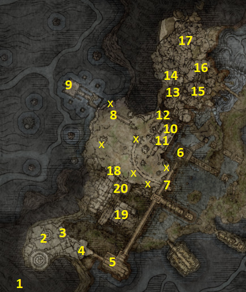
PSN karta #1–#20 • Ranni quest • Siofra Aqueduct • Night's Sacred Ground
1Nokron entrance — crater descent0/1
Spuštaj se kroz krater dok ne dođeš do prvih rooftops Nokrona. Čim dođeš na beams, nemoj odmah ići prema dolje: skoči s grede na tower desno, zatim na obližnji roof. Na corpse-u je Ghostflame Torch. Ako padneš na prenisku razinu, predmet se više ne može dohvatiti iz tog smjera pa se vrati na vrh kratera.
POKUPI / ODRADI: Ghostflame Torch
2Nokron ground level — Bell Bearing0/1
Nastavi po rooftops i spusti se na ground level. U gazebo-u ispred tebe uzmi Ghost-Glovewort Picker's Bell Bearing [1]. U zgradi desno uzmi Larval Tear.
POKUPI / ODRADI: Ghost-Glovewort Picker's Bell Bearing [1] • Larval Tear
3Greatshield Soldier Ashes0/1
U graveyardu koji čuvaju Silver Tear / Nox neprijatelji pretraži corpse.
POKUPI / ODRADI: Greatshield Soldier Ashes
4Larval Tear prije Mimic Teara0/1
Nastavi prema boss areni. U gazebo-u neposredno prije bossa pokupi još jedan Larval Tear.
POKUPI / ODRADI: Larval Tear
5Mimic Tear0/1
Uđi u boss arenu. Mimic Tear kopira tvoj trenutni equipment i build. Ako želiš vrlo laganu borbu, možeš ući bez oružja/opreme pa ih equipati nakon što se Mimic stvori.
POKUPI / ODRADI: 2× Larval Tear • Silver Tear Mask
BOSS / EVENT: Mimic Tear
6Bridge descent — Clarifying Horn Charm +10/1
Nakon bossa prijeđi veliki bridge gotovo do kraja. Pažljivo se spusti na niže ledges/platforme.
POKUPI / ODRADI: Clarifying Horn Charm +1 • Celestial Dew
7Hallowhorn Grounds — 6 obelisks0/1
U Hallowhorn Grounds pronađi i zapali svih 6 flame obelisks označenih X na tvojoj karti. Kod obeliska blizu deer carcassa ubij Shaman neprijatelja za headpiece. Boss aktiviramo tek kada svih šest gori.
POKUPI / ODRADI: Shining Horned Headband • 6/6 obelisks aktivirano
8Enchanted Shot0/1
Kod jednog od obeliska, u području s Ancestral Followers i rats, pronađi scarab.
POKUPI / ODRADI: Ash of War: Enchanted Shot
9Ancestral Infant's Head0/1
Od istog dijela koristi Torrent i pažljivo prijeđi po ruined structure prema sjeveru. Na kraju otvori chest koji čuva neprijatelj.
POKUPI / ODRADI: Ancestral Infant's Head
10Regal Ancestor Spirit0/1
Kada je svih 6 obeliska upaljeno, vrati se do deer carcassa u Hallowhorn Grounds i interagiraj s njim. Bit ćeš prebačen u boss arenu.
POKUPI / ODRADI: Remembrance of the Regal Ancestor
BOSS / EVENT: Regal Ancestor Spirit
11Mottled Necklace +10/1
U istoj velikoj građevini kod deer carcassa popni se bočnim cliffs/ruševinama na gornji dio.
POKUPI / ODRADI: Mottled Necklace +1
12Stonesword Key0/1
Od mjesta kojim si se popeo prema gornjim beams nastavi naprijed pokraj spirit Jellyfish i spusti se na nižu razinu do corpse-a.
POKUPI / ODRADI: Stonesword Key
13Siofra Aqueduct — Missionary's Cookbook0/1
Prati cliff path iza Hallowhorn Grounds prema circular buildings Siofra Aqueducta. U desnoj circular building pokupi cookbook.
POKUPI / ODRADI: Missionary's Cookbook [5]
14Crucible Hornshield0/1
U Aqueductu pronađi Crucible Knighta koji patrolira circular building područjem i porazi ga.
POKUPI / ODRADI: Crucible Hornshield
15Order Healing0/1
U drugoj circular building pronađi scarab.
POKUPI / ODRADI: Order Healing
16D's Twin Brother0/1
Napreduj kroz Aqueduct do balconyja gdje sjedi D's Twin Brother. Interagiraj s njim za gesture. Ako imaš Twinned Set, možeš ga opcionalno predati D's Twin Brotheru. Time otključavaš njegov kasniji epilog i možeš ga pozvati kao summon za sljedećeg bossa. Predaja nije uvjet za napredovanje.
OBAVEZNO: Inner Order gesture. OPCIONALNA NPC ODLUKA: predaja Twinned Seta D's Twin Brotheru.
17Valiant Gargoyles0/1
Na kraju Siofra Aqueducta uđi u veliku boss arenu. Ako si predao Twinned Set, možeš koristiti D's Twin Brother summon sign. Nakon pobjede pronađi coffin kod waterfall-a, ali ga ZA SADA nemoj koristiti za nastavak u Deeproot Depths.
POKUPI / ODRADI: Gargoyle's Greatsword • Gargoyle's Twinblade
BOSS / EVENT: Valiant Gargoyles
18Night's Sacred Ground — ulaz0/1
Vrati se u Hallowhorn Grounds i idi skroz zapadno do Ancestral Woods Site of Grace. Od Gracea skoči na rooftops i kreni kroz Night's Sacred Ground. U stražnjem dijelu jedne zgrade pokupi Celestial Dew.
POKUPI / ODRADI: Ancestral Woods Site of Grace • Celestial Dew
19Black Whetblade + Mimic Tear Ashes0/1
Nastavi rooftop rutom dok ne uđeš kroz window u veliku zgradu. Na altar-u uzmi Black Whetblade. Iza altara je hallway s imp sealom; upotrijebi Stonesword Key i uzmi legendary Mimic Tear Ashes. Iz prostorije s Mimicom skoči kroz window desno, prijeđi rooftops i uđi kroz drugi window po Nox Flowing Hammer.
POKUPI / ODRADI: Black Whetblade • Mimic Tear Ashes — Legendary Spirit Ash • Nox Flowing Hammer
20Fingerslayer Blade0/1
Izađi na street, aktiviraj Night's Sacred Ground Site of Grace i prati cestu do velikog skeleton/statue područja na kraju. Otvori chest ispod statue.
POKUPI / ODRADI: Fingerslayer Blade • Great Ghost Glovewort
Ranni detour — Carian Study Hall / Divine Tower of Liurnia
Nokron — quest-safe checklist
☐ Ghostflame Torch uzet prije spuštanja prenisko po rooftops
☐ Ghost-Glovewort Picker's Bell Bearing [1] uzet
☐ Mimic Tear boss poražen
☐ Svih 6 Hallowhorn obeliska upaljeno
☐ Regal Ancestor Spirit poražen
◦ OPCIONALNO: Twinned Set predan D's Twin Brotheru (nije uvjet za završetak rute)
☐ Valiant Gargoyles poraženi; Deeproot coffin ostavljen za kasnije
☐ Black Whetblade + Mimic Tear Ashes uzeti
☐ Fingerslayer Blade + Great Ghost Glovewort uzeti
☐ Fingerslayer Blade predan Ranni
☐ Preceptor's set + Seluvis's Bell Bearing pokupljeni
☐ Pidia završni reward/Bell Bearing provjeren
☐ Carian Inverted Statue iskorišten u Carian Study Hall
☐ Lucidity + Mask of Confidence uzeti
☐ Godskin Noble riješen
☐ Stargazer Heirloom + Cursemark of Death uzeti
☐ Snow Witch set uzet u Renna's Rise
☐ Waygate u Renna's Rise spreman za sljedeću regiju
CHAPTER 13 — AINSEL RIVER MAIN / NOKSTELLA 0/10
Master Guide V30 · PART 13 · 10 numeriranih ruta. Oznake se spremaju samo u Walkthroughu.
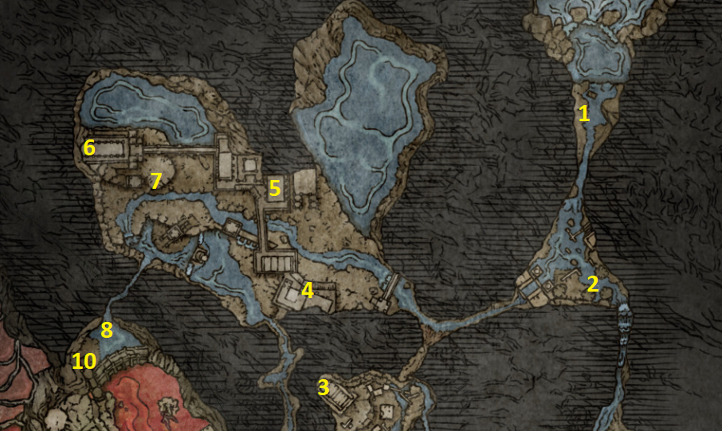
PSN karta #1–#10 • Miniature Ranni • Nokstella • Baleful Shadow • Dark Moon Ring
1Ainsel River Main — Miniature Ranni0/1
Odmah na početku područja pretraži coffin/corpse uz vodu i pokupi Miniature Ranni. Aktiviraj obližnji Ainsel River Main Site of Grace. Na Graceu se pojavi opcija Talk to miniature Ranni. Odaberi je više puta — prvih nekoliko pokušaja nema odgovora — dok Ranni konačno ne progovori. Nastavi razgovor dok potpuno ne iscrpiš dijalog.
POKUPI / ODRADI: Miniature Ranni • Ainsel River Main Site of Grace
2Uhl Palace Ruins0/1
Od početnog područja kreni južno kroz Uhl Palace Ruins. Kod velikog poison flowera pronađi corpse sa Stonesword Keyem. Nastavi prema waterfall području i pokupi Clayman Ashes.
POKUPI / ODRADI: Stonesword Key • Clayman Ashes
3Wing of Astel0/1
Nastavi kroz tunnels do raskrižja s ants. Ovaj put uzmi lijevi smjer prema velikom otvorenom području s Malformed Star neprijateljem koji visi iznad ruševina — to je dio koji ranije nismo mogli dosegnuti. Prije spuštanja prema neprijatelju pronađi chest na ledgeu.
POKUPI / ODRADI: Wing of Astel
4Nokstella, Eternal City — Ant's Skull Plate0/1
Vrati se na raskrižje u tunnelu i sada uzmi desni put. Uskoro ulaziš u Nokstella, Eternal City. Kreni glavnim stepenicama prema višoj gradskoj razini. U jednoj od prvih manjih prostorija uz put pokupi shield.
POKUPI / ODRADI: Ant's Skull Plate
5Ghost-Glovewort Picker's Bell Bearing [2]0/1
Nastavi stepenicama kroz sljedeću veću zgradu. U chestu uzmi vrlo važan Bell Bearing. U stražnjem dijelu iste zgrade pretraži područje za Archer Ashes.
POKUPI / ODRADI: Ghost-Glovewort Picker's Bell Bearing [2] • Archer Ashes
6Nightmaiden & Swordstress Puppets0/1
Sljedeću zgradu na gornjoj gradskoj ruti otključaj Stonesword Keyem. Očisti unutrašnjost i otvori chest.
POKUPI / ODRADI: Nightmaiden & Swordstress Puppets
💎 SPIRIT ASHES: Nightmaiden & Swordstress Puppets
7Nokstella bridge — Larval Tear0/1
Prijeđi most nakon prethodne zgrade. Giant Silver Sphere će te napasti; uništi je i pokupi reward.
POKUPI / ODRADI: Larval Tear
8Great Ghost Glovewort0/1
Nakon mosta uđi u zgradu s desne strane i otvori chest.
POKUPI / ODRADI: Great Ghost Glovewort
9Moon of Nokstella0/1
Nastavi preko sljedećeg mosta i uđi u zgradu. Unutra porazi dvije Silver Tears i Nox Swordstress neprijatelja koji čuva chest. Otvori ga za legendary talisman.
POKUPI / ODRADI: Moon of Nokstella — Legendary Talisman
10Nokstella Waterfall Basin → Baleful Shadow0/1
Koristi elevator za povratak na nižu, vodenu razinu. Kod malog golden saplinga pokupi Golden Seed. Sjeverno od njega, uz rub cliffa, pokupi Stonesword Key. Gledajući prema elevatoru, pretraži desnu stranu područja za Celestial Dew. Zatim koristi sljedeći elevator prema još nižoj razini i nastavi tunnelom do invader-style borbe.
POKUPI / ODRADI: Golden Seed • Stonesword Key • Celestial Dew • Discarded Palace Key
BOSS / EVENT: Baleful Shadow
Ainsel River Main / Nokstella — checklist
☐ Miniature Ranni uzeta
☐ Talk to miniature Ranni ponavljan dok nije odgovorila; dijalog iscrpljen
☐ Stonesword Key + Clayman Ashes uzeti u Uhl Palace Ruins
☐ Wing of Astel uzet
☐ Ghost-Glovewort Picker's Bell Bearing [2] uzet
☐ Nightmaiden & Swordstress Puppets uzeti
☐ Larval Tear od Giant Silver Sphere uzet
☐ Great Ghost Glovewort uzet
☐ Moon of Nokstella uzet
☐ Golden Seed + Stonesword Key + Celestial Dew uzeti na lower levelu
☐ Baleful Shadow poražen
☐ Discarded Palace Key dobiven
☐ Dark Moon Ring uzet iz chesta u Raya Lucaria Grand Library
☐ Elevator prema sljedećoj underground regiji spreman
CHAPTER 14 — LAKE OF ROT / GRAND CLOISTER 0/9
Master Guide V30 · PART 14 · 9 numeriranih ruta. Oznake se spremaju samo u Walkthroughu.
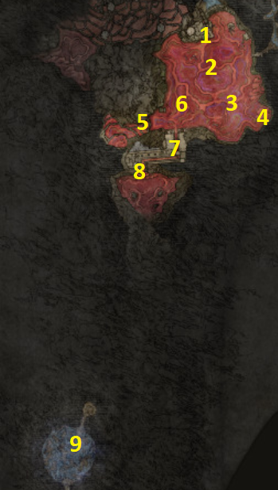
PSN karta #1–#9 • Scarlet Rot • Astel • nastavak Ranni questlinea
1Lake of Rot Shoreside — mapa0/1
Nakon elevatora iz područja iza Baleful Shadowa aktiviraj Lake of Rot Shoreside Site of Grace. U neposrednoj blizini pronađi corpse s mapom regije.
POKUPI / ODRADI: Lake of Rot map • Lake of Rot Shoreside Site of Grace
2Immunizing Horn Charm +10/1
Kreni kroz jezero prema jugoistoku. Kod Ancestral Follower neprijatelja porazi ga i pokupi talisman. Planiraj kretanje između sigurnih otoka i po potrebi očisti Scarlet Rot.
POKUPI / ODRADI: Immunizing Horn Charm +1
3Dragonkin Soldier0/1
Južno od prethodnog talismana nalazi se Dragonkin Soldier. Prije borbe pronađi obližnji obelisk i stani na pressure plate kako bi se iz jezera podigle platforme. Iskoristi suhu platformu za sigurniju borbu.
POKUPI / ODRADI: Dragonscale Blade
BOSS / EVENT: Dragonkin Soldier
4Mushroom Crown0/1
Idi prema jugoistočnom rubu Lake of Rot. Ovdje su Basilisk neprijatelji koji pune Death Blight meter. Mushroom Crown je na vrhu stupa; popni se preko obližnjih ruševina i skoči na column.
POKUPI / ODRADI: Mushroom Crown
5Nomadic Warrior's Cookbook [22]0/1
Prijeđi prema jugozapadnom dijelu jezera i pronađi chest na označenom području.
POKUPI / ODRADI: Nomadic Warrior's Cookbook [22]
6Obelisks / pressure plates0/1
Po jezeru su raspoređeni mali otoci s obeliscima i pressure plates. Aktiviraj ih dok prelaziš Lake of Rot: podižu sigurne platforme iznad Scarlet Rota i pripremaju pristup sljedećem predmetu.
POKUPI / ODRADI: Aktiviraj obližnje pressure plates
7Alabaster Lord0/1
Kod kasnijeg pressure platea na jugozapadnoj strani aktivirat ćeš mehanizam koji podiže veći dio platforme prema gore. Popni se na nju i odvezi se na višu razinu. Ako si aktivirao potrebne ploče, možeš doći do Alabaster Lorda.
POKUPI / ODRADI: Alabaster Lord's Sword
BOSS / EVENT: Alabaster Lord
8Grand Cloister0/1
Nakon prelaska jezera uđi u Grand Cloister i aktiviraj Site of Grace. Spusti se na nižu razinu. Kod waterfall područja može se pojaviti Ulcerated Tree Spirit; porazi ga za Golden Seed. Zatim nastavi kroz područje s Kindred of Rot neprijateljima prema velikoj građevini na kraju i otvori chest.
POKUPI / ODRADI: Grand Cloister Site of Grace • Golden Seed • Scorpion's Stinger
BOSS / EVENT: Ulcerated Tree Spirit
9Astel, Naturalborn of the Void0/1
Na samom kraju Grand Cloistera, uz rub iza glavnog područja, pronađi stone coffin i interagiraj s njim. Bit ćeš transportiran u izoliranu boss arenu. Porazi Astel, Naturalborn of the Void. Nakon pobjede nastavi prema sealed passageu/elevatoru. Za nastavak Ranni rute iza Astela potreban je Dark Moon Ring. Ako ga još nemaš, vrati se u Raya Lucaria Grand Library i otvori škrinju pomoću Discarded Palace Key (CH13 #10). Pobjeda nad Astelom i njegov trofej ne zahtijevaju prsten; barijera iza arene ga zahtijeva.
POKUPI / ODRADI: Remembrance of the Naturalborn
BOSS / EVENT: Astel, Naturalborn of the Void
Lake of Rot — quest-safe checklist
☐ Lake of Rot map uzeta
☐ Immunizing Horn Charm +1 uzet
☐ Dragonkin Soldier poražen i Dragonscale Blade uzet
☐ Mushroom Crown uzet
☐ Nomadic Warrior's Cookbook [22] uzet
☐ Pressure plates / platforme aktivirane
☐ Alabaster Lord poražen i Alabaster Lord's Sword uzet
☐ Grand Cloister Site of Grace aktiviran
☐ Ulcerated Tree Spirit poražen i Golden Seed uzet
☐ Scorpion's Stinger uzet
☐ Coffin u Grand Cloisteru iskorišten
☐ Astel, Naturalborn of the Void poražen
☐ Remembrance of the Naturalborn uzet
☐ Dark Moon Ring je u inventoryju
☐ Prolaz prema Moonlight Altaru otključan
CHAPTER 15 — MOONLIGHT ALTAR / RANNI FINALE 0/6
Master Guide V30 · PART 15 · 6 numeriranih ruta. Oznake se spremaju samo u Walkthroughu.
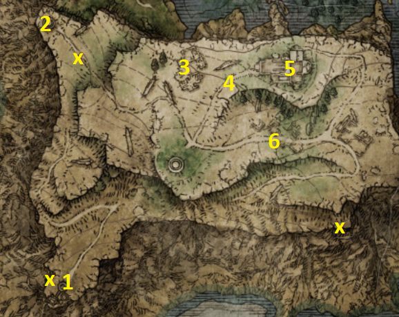
PSN karta #1–#6 • Chelona's Rise • Black Knife Tiche • Dark Moon Greatsword • završetak Ranni/Blaidd/Iji questlinea
1Chelona's Rise — 3 spirit turtles0/1
Idi prema jugozapadnom dijelu Moonlight Altara do Chelona's Rise. Pročitaj imp statue/pedestal ispred zaključanog ulaza. Moraš pogoditi tri velike spirit turtles označene X na karti. Prva visi uz cliff zapadno od tower-a — pogodi je bowom ili spellom. Druga je na krajnjem jugoistočnom rubu visoravni, na nižoj platformi. Treća je jugoistočno od Ringleader's Evergaol i nalazi se visoko u zraku; koristi obližnji Spiritspring s Torrentom kako bi je pogodio. Nakon sva tri vrati se u tower i popni na vrh.
POKUPI / ODRADI: Ranni's Dark Moon — Legendary Sorcery
2Ringleader's Evergaol0/1
U sjeverozapadnom dijelu visoravni uđi u Ringleader's Evergaol. Ovdje se boriš protiv Alecto, Black Knife Ringleader. Ovo je zahtjevna solo evergaol borba, ali reward je jedan od najboljih Spirit Ashes u igri.
POKUPI / ODRADI: Black Knife Tiche — Legendary Spirit Ash
BOSS / EVENT: Alecto, Black Knife Ringleader
3Moonfolk Ruins0/1
Sjeverno od Deep Ainsel Wella prođi kroz Moonfolk Ruins. Na PSN ruti ova točka služi prvenstveno kao orijentir i prolaz prema sljedećim lokacijama; nema ključnog unique rewarda koji moramo uzeti za 100% rutu.
POKUPI / ODRADI: Prođi/istraži Moonfolk Ruins
4Glintstone Dragon Adula — završna borba0/1
Istočno od Moonfolk Ruins ponovno susrećeš Glintstone Dragon Adula, koji je ranije pobjegao iz područja Three Sisters kada mu je HP pao približno na polovicu. Ovaj put dovrši borbu.
POKUPI / ODRADI: Adula's Moonblade • 3× Dragon Heart
BOSS / EVENT: Glintstone Dragon Adula
🔎 Ranni — provjera preduvjeta prije završnog koraka (Word V30)
Prije Cathedral of Manus Celes provjeri redom: CH12 #20 — Fingerslayer Blade, CH13 — Ainsel River Main / Nokstella, CH14 — Lake of Rot, zatim CH15 #5 — Dark Moon Ring i Dark Moon Greatsword. Ovo su poveznice za ručnu provjeru; ne znače da su zadaci automatski završeni.
Legendary STOP: prije odlaska s Moonlight Altara provjeri Ranni's Dark Moon (Chelona's Rise), Black Knife Tiche (Alecto) i Dark Moon Greatsword (Ranni). Odabir Age of the Stars dolazi tek nakon završnog bossa, preko plavog summon znaka.
5Cathedral of Manus Celes — Ranni finale0/1
Nastavi istočno do Cathedral of Manus Celes. Pretraži cathedral i pokupi Starlight Shards. Zatim pronađi otvor u podu i pažljivo se spusti na donju razinu do Ranni. Interagiraj s njom i koristi Dark Moon Ring. Nakon cutscenea i završnog dijaloga Ranni nestaje; obavezno pokupi legendary armament koji ostaje na mjestu.
POKUPI / ODRADI: 10× Starlight Shard • Dark Moon Greatsword — Legendary Armament
6Lunar Estate Ruins0/1
Južno od Cathedral of Manus Celes istraži Lunar Estate Ruins. U sjeverozapadnom dijelu pronađi illusory floor; udari pod kako bi otkrio podzemni prolaz. Za mist gate treba Stonesword Key. Iza njega je chest.
POKUPI / ODRADI: Cerulean Amber Medallion +2
Moonlight Altar — quest-safe checklist
☐ Chelona's Rise imp statue aktiviran
☐ Sva 3 spirit turtles (X) pogođena bez problema s resetom
☐ Ranni's Dark Moon uzet
☐ Alecto, Black Knife Ringleader poražena
☐ Black Knife Tiche uzeta
☐ Moonfolk Ruins provjeren
☐ Glintstone Dragon Adula dovršen
☐ Adula's Moonblade + 3 Dragon Hearts uzeti
☐ Cathedral of Manus Celes očišćena
☐ Starlight Shards pokupljeni
☐ Dark Moon Ring korišten na Ranni
☐ Dark Moon Greatsword uzet
☐ Ranni questline završena / Age of Stars opcija otključana
☐ Cerulean Amber Medallion +2 uzet iz Lunar Estate Ruins
☐ Blaidd poražen ispred Ranni's Rise
☐ Royal Greatsword + Blaidd's Set uzeti
☐ Miniature Ranni dodatni dijalog provjeren
☐ Iji obaviješten o Blaiddu
☐ Iji's Bell Bearing + Iji's Mirrorhelm uzeti
CHAPTER 16 — ALTUS PLATEAU 0/45
Master Guide V30 · PART 16 · 45 numeriranih ruta. Oznake se spremaju samo u Walkthroughu.
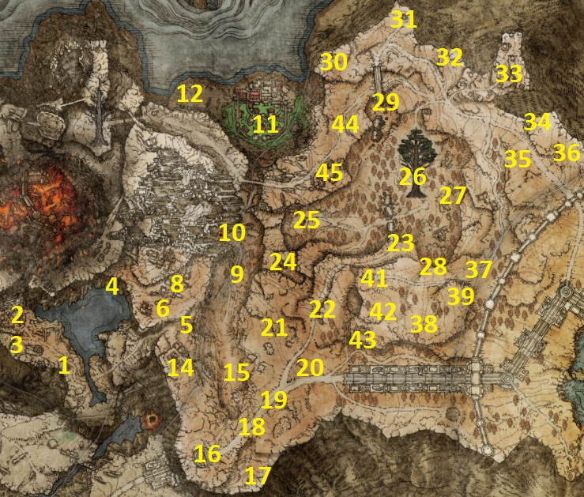
PSN karta #1–#45 • Shaded Castle • Goldmask/Corhyn • Millicent • Dominula • Varre offline ruta
1Sacred Order scarab0/1
Od Abandoned Coffin Site of Grace kreni sjeverno cestom i pronađi scarab.
POKUPI / ODRADI: Ash of War: Sacred Order
2Perfumer's Ruins0/1
Idi sjeverozapadno. Porazi Omenkiller neprijatelja, pretraži ruševine i podzemni dio kod velikog poison flowera.
POKUPI / ODRADI: Omenkiller Set • Perfumer's Cookbook [1] • Perfumer's Talisman
3Unsightly Catacombs0/1
Južno od Perfumer's Ruins uz cliff otključaj ulaz s 2 Stonesword Keys. Očisti dungeon i duo boss.
POKUPI / ODRADI: Prattling Pate (Apologies) • Winged Misbegotten Ashes • Perfumer Tricia Ashes
BOSS / EVENT: Misbegotten Warrior & Perfumer Tricia
4Sage's Cave0/1
U sjeveroistočnom dijelu malog jezera pronađi cave. Provjeravaj dead ends i waterfall područja jer dungeon koristi mnogo illusory walls. Pokupi Lost Ashes of War; Black Hood; Candletree Wooden Shield; Stonesword Key; Raptor Talons; Raptor's Black Feathers; Skeletal Mask. Jedna skrivena ruta vodi do Necromancer Garris, druga uz lijevu stranu waterfall-a do nevidljivog Black Knife Assassin bossa.
POKUPI / ODRADI: Lost Ashes of War • Black Hood • Candletree Wooden Shield • Stonesword Key • Raptor Talons • Raptor's Black Feathers • Skeletal Mask • Family Heads • Concealing Veil
BOSS / EVENT: Necromancer Garris + Black Knife Assassin
5Millicent — Erdtree-Gazing Hill0/1
Prođi područje gdje se ranije pojavio Ancient Dragon Lansseax i popni se uz slope. Pronađi Millicent, iscrpi dijalog i pokupi Golden Seed kod golden saplinga.
POKUPI / ODRADI: Golden Seed
6Wyndham Ruins0/1
Sjeverno od Millicent porazi Tibia Mariner. U underground roomu, uz Stonesword Key, pokupi talisman.
POKUPI / ODRADI: Deathroot • Tibia's Summons • Pearldrake Talisman +1
BOSS / EVENT: Tibia Mariner
7Wyndham Catacombs0/1
Na vrhu Wyndham Ruins uz cliff uđi u catacombs. Lightning Scorpion Charm traži Stonesword Key. Boss daje važan Bell Bearing.
POKUPI / ODRADI: Ancient Dragon Apostle's Cookbook [1] • Lightning Scorpion Charm • Glovewort Picker's Bell Bearing [1]
BOSS / EVENT: Erdtree Burial Watchdog
8Blood Blade scarab0/1
Od Millicent kreni sjeverno nižom cestom. Kod drveća pronađi scarab.
POKUPI / ODRADI: Ash of War: Blood Blade
9Old Altus Tunnel0/1
Lijevo od ceste prema sjeveru otključaj tunnel s 2 Stonesword Keys.
POKUPI / ODRADI: Boltdrake Talisman +1 • Troll's Hammer • Great Club
BOSS / EVENT: Stonedigger Troll
10The Shaded Castle0/1
Uđi u poison-swamp castle. Na desnom outer wallu uzmi Champion's Song Painting; južno po stijenama je Stonesword Key. Na lijevoj strani inner walla, iza Cleanrot Knighta, chest s Valkyrie's Prosthesis. Nakon Shaded Castle Inner Gate popni ladders po Perfumer's Cookbook [2], zatim do vrha i bossa.
POKUPI / ODRADI: Champion's Song Painting • Stonesword Key • Valkyrie's Prosthesis • Perfumer's Cookbook [2] • Briar Greatshield • Marais Executioner's Sword — Legendary Armament
BOSS / EVENT: Elemer of the Briar
11Maleigh Marais0/1
Zapadno od The Shaded Castle pronađi i porazi Maleigh Marais, Shaded Castle Castellan.
POKUPI / ODRADI: Marais Mask • Marais Robe • Antspur Rapier
12Millicent — Valkyrie's Prosthesis0/1
Vrati se Millicent kod Erdtree-Gazing Hill, predaj Valkyrie's Prosthesis i iscrpi dijalog.
POKUPI / ODRADI: Valkyrie's Prosthesis predana
13Lux Ruins0/1
Južno od Millicent. Na nižoj razini je Rya — na ovoj ruti je sada NEMOJ koristiti za teleport u Volcano Manor jer Mt. Gelmir/Volcano Manor dolazi sljedeći. Na višoj razini prišuljaj se scarabu prije nego nestane. U undergroundu porazi Demi-Human Queen Gilika.
POKUPI / ODRADI: Ash of War: Shield Crash • Ritual Sword Talisman
BOSS / EVENT: Demi-Human Queen Gilika
14Altus convoys0/1
Istočno od Erdtree-Gazing Hill pretraži dva convoy chesta.
POKUPI / ODRADI: Troll's Golden Sword • Greatshield Talisman
15Grand Lift of Dectus — Rya checkpoint0/1
Na gornjoj razini Grand Lifta može biti Rya. Ne prihvaćaj teleport u Volcano Manor još; samo zapamti poziciju za sljedeću regiju.
16Golden Lineage Evergaol0/1
Jugoistočno od Grand Lifta aktiviraj Evergaol s Stonesword Keyem.
POKUPI / ODRADI: Godfrey Icon — Legendary Talisman
BOSS / EVENT: Godefroy the Grafted
17Night's Cavalry0/1
Sjeveroistočno od Grand Lifta noću prati cestu. U campu južno od borbe pokupi Stonesword Key.
POKUPI / ODRADI: Ash of War: Shared Order • Stonesword Key
BOSS / EVENT: Night's Cavalry
18Earthshaker scarab0/1
Malo sjeveroistočno prije raskrižja traži stationary invisible scarab — prati moving dust.
POKUPI / ODRADI: Ash of War: Earthshaker
19Altus Highway Junction — Boc0/1
Aktiviraj Altus Highway Junction Site of Grace i odmorom spawnaj Boca. Iscrpi dijalog. Ako u inventoryju imaš alterable boss armor, npr. Radahn's Lion Armor, predaj Gold Sewing Needle. Dopusti mu da te zove lord.
POKUPI / ODRADI: Gold Sewing Needle quest step • My Lord gesture
20Golden Seed + camp0/1
Sjeverno od Gracea pokupi Golden Seed. U campu malo zapadno, s mounted knightom, otvori chest.
POKUPI / ODRADI: Golden Seed • Sacrificial Twig
21Corhyn — Altus0/1
Kod map pillar područja pronađi Corhyna i iscrpi dijalog. Sada prodaje dodatne Incantations.
POKUPI / ODRADI: Great Heal dostupno • Lightning Fortification dostupno
22Forest-Spanning Greatbridge0/1
Prati cestu sjeverno do broken bridgea i aktiviraj Grace. Merchant prodaje korisnu opremu i cookbook.
POKUPI / ODRADI: Ancient Dragon Apostle's Cookbook [2]
23Second Church of Marika — Yura finale0/1
Sjeverozapadno od map područja uđi u church i uzmi Sacred Tear. Ako je Yura još živ i njegova questline pravilno napredovala, razgovaraj s njim; zatim slijedi invazija Bloody Finger Eleonore. Nagakiba može biti na Yurinoj prethodnoj lokaciji ako je njegova questline ranije prekinuta ili je već ostavio oružje. Prije označavanja Nagakibe provjeri da je stvarno preuzeta; Eleonorina invazija daje Purifying Crystal Tear i Eleonora's Poleblade.
POKUPI / ODRADI: Sacred Tear • Nagakiba • Purifying Crystal Tear • Eleonora's Poleblade
BOSS / EVENT: Eleonora, Violet Bloody Finger
24Mirage Rise0/1
Sjeveroistočno od churcha spusti se cliffovima. Aktiviraj imp statue i pronađi sva 3 Phantom Crests: jedan uz statue, drugi jugozapadno uz spirit imps, treći istočno na cliffu maskiran kao rock. Udari rock.
POKUPI / ODRADI: Unseen Form • Unseen Blade
25Minor Erdtree0/1
Istočno od Mirage Rise porazi Wormface. Sjeverozapadno od stabla uzmi Golden Seed.
POKUPI / ODRADI: Speckled Hardtear • Crimsonspill Crystal Tear • Golden Seed
BOSS / EVENT: Wormface
26Woodfolk Ruins0/1
Istočno od Minor Erdtree. U north section uzmi Icon Shield; jugozapadno u buildingu uz Erdtree uzmi cookbook i scarab; u south section otvori underground chest.
POKUPI / ODRADI: Icon Shield • Nomadic Warrior's Cookbook [19] • Ash of War: Golden Slam • Wrath of Gold
27Altus Tunnel0/1
Južno od Woodfolk Ruins očisti tunnel i duo boss.
POKUPI / ODRADI: Arsenal Charm +1 • Somberstone Miner's Bell Bearing [2]
BOSS / EVENT: Crystalian Spear & Crystalian Ringblade
28Goldmask0/1
Sjeverno od Minor Erdtree pronađi Road of Iniquity Side Path Site of Grace, zatim se popni na bridge i idi do kraja do Goldmaska. Iscrpi interakciju. Istočno na stone ruin scarab; južno na broken bridgeu pažljivo se spusti do mask itema.
POKUPI / ODRADI: Protection of the Erdtree • Radiant Gold Mask
29Corhyn → Goldmask0/1
Vrati se Corhynu i reci mu za Goldmaska/iscrpi dijalog. Reload područja, zatim ih pronađi zajedno kod Goldmaska i razgovaraj s obojicom.
POKUPI / ODRADI: Discus of Light dostupno
30West Windmill Pasture0/1
Sjeverozapadno od Road of Iniquity Side Path. U shacku uzmi Ashes; istočno na cliffu porazi Battlemage.
POKUPI / ODRADI: Giant Rat Ashes • Battlemage Set
31East Windmill Pasture0/1
Istočno od West Windmill Pasture pretraži područje.
POKUPI / ODRADI: Twinned Knight Swords • Noble's Set / Navy Hood
32Village Windmill Pasture0/1
Istočno od prethodne lokacije. Nema obaveznog unique predmeta; očisti/prođi kao route checkpoint.
33Dominula, Windmill Village0/1
Nakon pobjede nad Godskin Apostleom odmori se na Windmill Heights Site of Grace ili ponovno učitaj područje. Provjeri Millicent kod Gracea i iscrpi dijalog prije nastavka prema Mountaintops. Ako se ne pojavi, provjeri da si joj predao Valkyrie’s Prosthesis u CH16 #12. Povezani korak.
Jugoistočno od Village Windmill Pasture. Sjeveroistočno od Gracea na cliff corpse-u uzmi Celebrant's Skull. Na vrhu sela porazi boss.
POKUPI / ODRADI: Celebrant's Skull • Godskin Peeler • Scouring Black Flame
BOSS / EVENT: Godskin Apostle
34Highway Lookout Tower0/1
Jugoistočno od Dominule popni se na tower.
POKUPI / ODRADI: Greatbow
35Golden Seed0/1
Južno od Highway Lookout Tower pronađi golden sapling.
POKUPI / ODRADI: Golden Seed
36Lightning Slash scarab0/1
Jugoistočno od tower-a u enemy campu pronađi scarab.
POKUPI / ODRADI: Ash of War: Lightning Slash
37Rampartside Path0/1
Od Dominule prati cestu južno i aktiviraj Rampartside Path Site of Grace.
POKUPI / ODRADI: Rampartside Path Site of Grace
38Stonesword Key platform0/1
Od Rampartside Path prati cestu zapadno. Južno od ceste popni se na malu platformu sa stepenicama.
POKUPI / ODRADI: Stonesword Key
39Ancient Dragon Lansseax — finale0/1
Na uzvisini iznad područja ponovno pronađi Ancient Dragon Lansseax i ovaj put dovrši borbu.
POKUPI / ODRADI: Lansseax's Glaive
BOSS / EVENT: Ancient Dragon Lansseax
40Champion's Song Painting reward0/1
Malo sjeverno od dragon arene pronađi ghost paintera ako si u The Shaded Castle pokupio Champion's Song Painting.
POKUPI / ODRADI: Harp Bow
41Sainted Hero's Grave0/1
Na krajnjem zapadu elevated područja prvo porazi Black Knife Assassin ispred dungeona. Unutra: Crimson Seed Talisman iza Stonesword mist gatea; Leyndell Soldier Ashes kod collapsing floor; preko prve guillotine do drugog mist gatea za Dragoncrest Shield Talisman +1. Za boss door namami shadow/black enemy u holy light i ubij ga. Pokupi Prattling Pate prije bossa.
POKUPI / ODRADI: Black Knife • Crimson Seed Talisman • Leyndell Soldier Ashes • Dragoncrest Shield Talisman +1 • Prattling Pate (Let's get to it) • Ancient Dragon Knight Kristoff Ashes — Legendary Spirit Ash
BOSS / EVENT: Ancient Hero of Zamor
42Lightning Ram scarab0/1
Jugozapadno od Sainted Hero's Grave pronađi scarab.
POKUPI / ODRADI: Ash of War: Lightning Ram
43Stormcaller Church0/1
Južno od Hero's Grave uđi u church.
POKUPI / ODRADI: Sacred Tear • Dragonbolt Blessing
44Great Stars convoy0/1
Vrati se na Road of Iniquity Side Path Site of Grace i prati cestu zapadno. Otvori chest na stražnjem dijelu convoyja.
POKUPI / ODRADI: Great Stars
45Writheblood Ruins + Varre offline ruta0/1
Jugozapadno od Road of Iniquity Side Path očisti ruins. Nakon Sanguine Noble uzmi Bloody Helice. Ako Varre quest radiš offline, pronađi red invasion sign u sjeveroistočnoj zgradi i invadiraj Magnus the Beast Claw. Porazi ga.
POKUPI / ODRADI: Bloody Helice • Great Stars — od Magnusa ako radiš offline invaziju
BOSS / EVENT: Sanguine Noble / Magnus the Beast Claw
Altus Plateau — quest-safe checklist
• Valkyrie's Prosthesis uzeta i predana Millicent
• Gowry: provjeri Desperate Prayer; Pest Threads je opcionalna kupnja i ne blokira rutu
• Marais Executioner's Sword uzet
• Boc: Gold Sewing Needle + My Lord gesture odrađeni
• Yura/Eleonora: Nagakiba + Purifying Crystal Tear + Eleonora's Poleblade uzeti
• Glovewort Picker's Bell Bearing [1] uzet
• Somberstone Miner's Bell Bearing [2] uzet
• Goldmask pronađen; Corhyn premješten do njega i oba dijaloga iscrpljena
• Millicent razgovor nakon Godskin Apostle u Dominuli odrađen
• Ancient Dragon Knight Kristoff Ashes uzete
• Varré: za uvjet invazija dovoljne su online invazije ILI offline Magnus the Beast Claw; nije potrebno oboje
• Varré: nakon online invazija ili Magnusa vrati se u Rose Church po Lord of Blood's Favor; natopi ga krvlju Finger Maiden u Church of Inhibition (ili Chapel of Anticipation)
• Varré: nakon natapanja vrati se u Rose Church i iscrpi dijalog za Bloody Finger + Pureblood Knight's Medal; ako quest još nije pokrenut, ovo je podsjetnik, a ne uvjet završetka PSN koraka
• Mohgwyn Palace ostavljen za kasnije
• Prije Mt. Gelmira provjeri samo preostale važne NPC i missable uvjete
Odnesi Deathroot Gurranqu u Bestial Sanctum i predaj ga jedan po jedan. Ako postane hostile zbog quest triggera, skini mu samo dovoljno HP-a da se smiri — NEMOJ ga ubiti. Reward u ovoj fazi uključuje Beast Claw ako je ovo odgovarajući broj predanih Deathroots.
Predaj Glovewort Picker's Bell Bearing [1] Twin Maiden Husks kako bi mogao kupovati Grave Glovewort [1]–[3] za normal Spirit Ashes.
Nakon Elemer of the Briar možeš kod Enije kupiti Briar Set.
Vrati se u Gowry's Shack. Sada kupi Pest Threads, zatim iscrpi dodatni dijalog kako bi dobio Desperate Prayer gesture. Millicent ostaje živa i quest se nastavlja kasnije.
Boca ne ubijaj i ne koristi Larval Tear opciju na njemu kada se kasnije pojavi bez odgovarajućeg quest rješenja. Za sada samo Gold Sewing Needle + My Lord gesture i iscrpi dijalog.
Ovo završava Yurin glavni quest segment. Purifying Crystal Tear je vrlo važan kasnije protiv Mohga, Lord of Blood — nemoj ga previdjeti.
Predaj Somberstone Miner's Bell Bearing [2] Twin Maiden Husks; otključava kupnju Somber Smithing Stone [3] i [4].
Nakon pobjede reload područja. Millicent će se pojaviti kod Windmill Heights Site of Grace. Razgovaraj s njom i iscrpi dijalog — obavezno za nastavak njenog questa.
Ako ranije nisi odradio 3 online invazije, pobjeda nad Magnus the Beast Claw ispunjava alternativni invasion uvjet. Vrati se Varreu u Rose Church. Uzmi Lord of Blood's Favor → idi u Church of Inhibition → na corpse-u Finger Maiden natopi Favor krvlju → vrati se Varreu → iscrpi cijeli dijalog. Dobivaš Bloody Finger i zatim Pureblood Knight's Medal.
Medal vodi u Mohgwyn Palace, ali tu regiju još NE čistimo. Predmet samo sačuvaj; vodič će Mohgwyn Palace odraditi kasnije po PSN redoslijedu.
Zapadni bridge/izlaz iz ovog dijela Altus Plateaua vodi prema Mt. Gelmiru. Tu završava Altus chapter i sljedeću kartu nastavljamo kao novi numerirani PSN dio.
CHAPTER 17 — MT. GELMIR & VOLCANO MANOR 0/26
Ovo je izdvojena NPC napomena iz Worda V30, a ne dio PSN koraka #17 (Volcano Cave). Završni odabir odvija se ispred Raya Lucaria Grand Library; provjeri quest uvjete prije izbora summon signa.
Prije summon signa napravi izbor: GOLD (pomoć Sellen) za Sellenin završetak i Azur/Lusat opremu; RED (pomoć Jerrenu) za alternativne nagrade. Ne označavaj oba ishoda kao završena u istom prolasku. Ova napomena nema PSN broj.
Kod Raya Lucaria Grand Library izađi pred ulaz i odaberi GOLD summon sign za pomoć Sellen protiv Jerrena. Za ovu 100% rutu NE biramo pomoć Jerrenu, jer bi izgubio više jedinstvenih Sellen nagrada. Nakon borbe dobivaš Eccentric Set; razgovaraj sa Sellen za Glintstone Kris i mogućnost kupnje Shard Spiral.
Master Guide V30 · PART 17 · 26 numeriranih ruta. Oznake se spremaju samo u Walkthroughu.
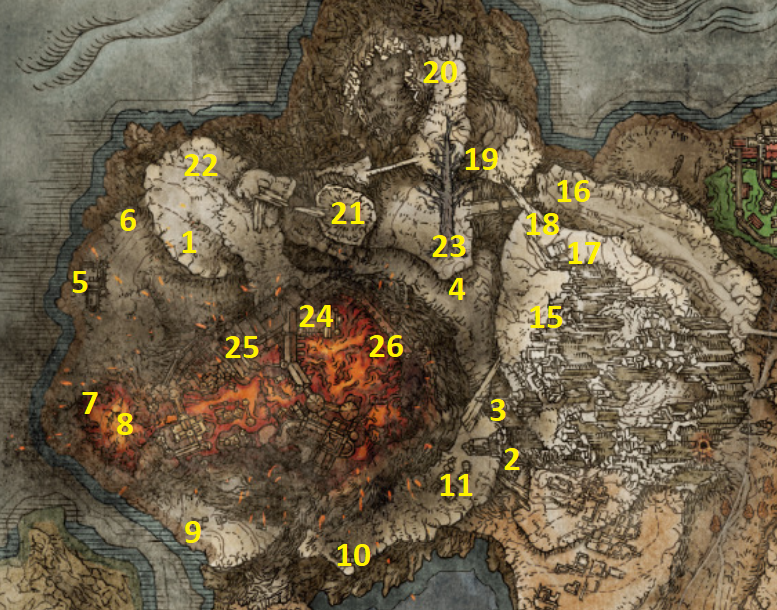
PSN karta #1–#26 • Sellen finale • Alexander • Patches • Volcano Manor questline • Rykard STOP
1Mt. Gelmir map0/1
Od Writheblood Ruins prijeđi bridge zapadno do Bridge of Iniquity Site of Grace. Prati cestu sjeverno do campa gdje soldiers ratuju s Abductor Virgins, drži se lijevog cliffa i popni ladder. Nastavi zapadno; Volcano Manor će povremeno biti južno ispod tebe. Sjeverozapadno od Manora spusti se na nižu razinu do map pillar-a.
POKUPI / ODRADI: Mt. Gelmir map
2Seethewater River — Barrage scarab0/1
Vrati se prema Wyndham Ruins u Altus Plateau i iza ruševina aktiviraj Seethewater River Site of Grace. Prati river sjeverno.
POKUPI / ODRADI: Ash of War: Barrage
3Golden Seed0/1
Nastavi sjeverno uz Seethewater River do golden saplinga.
POKUPI / ODRADI: Golden Seed
4Seethewater Cave0/1
Sjeverno od Golden Seeda otključaj cave s 2 Stonesword Keys. U poison području s velikim flowerom pokupi Mushroom Set i dovrši duo boss.
POKUPI / ODRADI: Mushroom Set • Kindred of Rot's Exultation
BOSS / EVENT: Kindreds of Rot
5Fort Laiedd0/1
Nastavi do Seethewater Terminus pa zapadno u Fort Laiedd. Pretraži fort i porazi Prelate enemyja.
POKUPI / ODRADI: Fire Scorpion Charm • Armorer's Cookbook [7] • Prelate's Inferno Crozier
6Stonesword Key — Jellyfish cliffs0/1
Sjeveroistočno od Fort Laiedd uz cliff i spirit Jellyfish pronađi corpse.
POKUPI / ODRADI: Stonesword Key
7Magma Wyrm0/1
Južno od Fort Laiedd u lavi porazi Magma Wyrm.
POKUPI / ODRADI: Dragon Heart • Magma Breath otključan za kupnju u Cathedral of Dragon Communion
BOSS / EVENT: Magma Wyrm
8Alexander — lava0/1
Južno od Magma Wyrma pronađi Alexandera u lavi. Priđi mu preko sigurnijeg ruba uz cliff i iscrpi dijalog.
POKUPI / ODRADI: Jar
9Hermit's Shack0/1
Prati cestu južno od Fort Laiedd.
POKUPI / ODRADI: Roiling Magma
10Craftsman's Shack0/1
Istočno od Hermit's Shack pretraži sljedeću kolibu.
POKUPI / ODRADI: Pulley Crossbow
11Hermit Village + Primeval Sorcerer Azur0/1
Nastavi sjeveroistočno kroz Hermit Village. Pokupi Errant Sorcerer Set; Hierodas Glintstone Crown je južno od sela, a blizu je i Prattling Pate. Na kraju sela porazi Demi-Human Queen Maggie. Iza nje kod Gracea pronađi Primeval Sorcerer Azur i interactaj s njim.
POKUPI / ODRADI: Errant Sorcerer Set • Hierodas Glintstone Crown • Prattling Pate (You're Beautiful) • Memory Stone • Comet Azur — Legendary Sorcery
BOSS / EVENT: Demi-Human Queen Maggie
12Gelmir Hero's Grave0/1
Sjeveroistočno od Hermit Village preko canyona. Na prvom chariot slopeu možeš nastaviti kroz magmu do chest-a s Ringed Finger. Kod drugog chariota na vrhu je Stonesword Key. Nakon bridgea desna alcove ima Cemetery Shade koji daje Mantis Blade. Za nastavak se pažljivo spusti sa strane bridgea; porazi Bloodhound Knight, uzmi njegove setove, popni ladder, izađi na beams i skoči na chariot kako bi se spustio do dna lava rute. Boss room sadrži Deathroot.
POKUPI / ODRADI: Ringed Finger • Stonesword Key • Mantis Blade • Bloodhound Knight Set • Gelmir Knight Set • Bloodhound Knight Floh Ashes • Deathroot
BOSS / EVENT: Red Wolf of the Champion
13Corpse-Stench Shack0/1
Vrati se Bridge of Iniquity Site of Grace i prati road sjeverno do kraja. Ispred shacka dolazi invasion; unutra pokupi Incantation. Na broken bridgeu iza shacka je još jedan key.
POKUPI / ODRADI: Sacred Butchering Knife • Golden Vow • Stonesword Key
BOSS / EVENT: Anastasia, Tarnished-Eater
14First Mt. Gelmir Campsite + Pulley Bow0/1
Vrati se na higher level nakon ladder rute kojom si išao po mapu. Aktiviraj First Mt. Gelmir Campsite Site of Grace, zatim sjeverozapadno popni siege tower.
POKUPI / ODRADI: Pulley Bow
15Patches — cliff event0/1
Nastavi sjeverozapadno. Prije bridgea lijevo pronađi Patchesovu poruku i slijedi rainbow stones prema cliffu. Ako je Patchesova questline dovoljno napredovala i događaj je dostupan, može se aktivirati njegov Mt. Gelmir cliff event koji te spušta na donju razinu. Ako poruka ili događaj nisu dostupni, nastavi glavnom rutom; taj opcionalni događaj nije uvjet za prolazak Mt. Gelmira.
16Scavenger's Curved Sword + merchant0/1
Nakon bridgea i Grafted Sciona pokupi Scavenger's Curved Sword. Penji se planinom do merchant-a.
POKUPI / ODRADI: Scavenger's Curved Sword • Nomadic Warrior's Cookbook [20] • Guilty Hood • Confessor Set
17Volcano Cave0/1
Sjeverno od merchant-a, na vrhu mountain patha. Očisti cave.
POKUPI / ODRADI: Coil Shield • Jar Cannon
BOSS / EVENT: Demi-Human Queen Margot
Mt. Gelmir ima više visinskih razina i kružne putove. Brojevi #1–#26 ispod odgovaraju žutim brojevima na priloženoj PSN karti. Prvo uzimamo mapu i čistimo lower level, zatim se vraćamo na higher route i završavamo u Volcano Manor.
Alexander mora ostati živ. Ovo je njegov Mt. Gelmir korak nakon Radahna i oslobađanja iz rupe u Liurniji. Iscrpi cijeli dijalog prije nastavka.
Odnesi ovaj Deathroot Gurranqu u Bestial Sanctum. Ako pratiš dosadašnju rutu i broj predanih Deathroots odgovara, reward je Stone of Gurranq. Predaj Deathroots pojedinačno i iscrpi dijalog.
Ovaj event je normalan nastavak Patches questa. Ne napadaj ga. Nakon eventa vrati se na higher route i nastavi preko bridgea.
Ove radnje NISU dio PSN #17 Volcano Cave. Prvo uzmi Comet Azur (CH17 #11), zatim fast travelom razgovaraj sa Sellen u Waypoint Ruins. Ne preskači uvjete nastavka ispod; završni odabir obavlja se ispred Raya Lucaria Grand Library, ne u Mt. Gelmiru.
Za Sellenin nastavak s Primal Glintstoneom potreban je napredak nakon Stars of Ruin i Radahnova poraza te iscrpljeni razgovori sa Sellen. Ako Sellen još ne nudi novi dijalog, nastavi glavnu rutu i vrati se kasnije. Jerrenov dio zahtijeva njegovu selidbu iz Redmane Castlea; nakon Radahna iscrpi njegov dijalog na festivalu i po potrebi ponovno učitaj područje.
Vrati se Sorceress Sellen u Waypoint Ruins i pokaži Comet Azur. Dobivaš Sellian Sealbreaker. Zatim idi u Sellia Hideaway u Dragonbarrow, do ranije zaključanog magic seala. Otključaj ga i razgovaraj s Master Lusat kako bi dobio Stars of Ruin — Legendary Sorcery.
Vrati se Sellen. Kad te uputi u Witchbane Ruins, idi do njenog fizičkog tijela i primi Sellen's Primal Glintstone. Reload područja i razgovaraj s Witch-Hunter Jerrenom u ruševinama; iscrpi njegov dijalog.
Idi do Seluvisovog skrivenog laboratoryja u ruševinama sjeverno od Ranni's Rise. Pronađi skriveni Sellen puppet/body iza illusory walla i predaj Sellen's Primal Glintstone.
Prije odabira summon signa ispred Raya Lucaria Grand Library odluči želiš li pomoći Sellen (GOLD) ili Jerrenu (RED). Ovo su međusobno isključivi završeci u jednom prolasku. Ako pomogneš Sellen, iscrpi njezin dijalog i ponovno učitaj područje; nakon njezine preobrazbe pokupi Witch's Glintstone Crown. Nakon GOLD završetka vrati se Master Lusatu u Sellia Hideaway po Lusat's Set te Azuru u Hermit Village po Azur's Glintstone Set. Kod RED završetka nagrade su drukčije: nemoj očekivati isti cleanup niti oba seta.
18Full-Grown Fallingstar Beast0/1
Od Ninth Mt. Gelmir Campsite kreni na vrh planine i porazi boss.
POKUPI / ODRADI: Fallingstar Beast Jaw
BOSS / EVENT: Full-Grown Fallingstar Beast
19North plateau — Golden Seed + Through and Through0/1
Nastavi zapadno na plateau sjeverno od Volcano Manor. Na sjevernom dijelu uzmi Golden Seed; malo južnije pronađi invisible scarab.
POKUPI / ODRADI: Golden Seed • Ash of War: Through and Through
20Minor Erdtree0/1
Od map pillar područja prati put prema Minor Erdtree i porazi boss.
POKUPI / ODRADI: Leaden Hardtear • Cerulean Hidden Tear
BOSS / EVENT: Ulcerated Tree Spirit
21Volcano Manor — ulaz + Inquisitor Ghiza0/1
Uđi u Volcano Manor. Prije glavnog questlinea popni se na drugi kat i prihvati invasion.
POKUPI / ODRADI: Ghiza's Wheel
BOSS / EVENT: Inquisitor Ghiza
22Volcano Manor — Tanith i NPC hub0/1
Nakon razgovora s Diallosom u Academy Gate Townu provjeri ga u Volcano Manoru. Iscrpi njegov dijalog; nakon napretka Manor priče i ponovnog učitavanja provjeri njegov odlazak. Potom se vrati u Jarburg (CH5 #22) i više puta razgovaraj s Jar-Bairnom uz odmor/reload između faza. Diallos se može pojaviti u jednoj od kuća u Jarburgu. STOP — završni događaj: razgovaraj s Diallosom i Jar-Bairnom, odmaraj se / ponovno učitaj područje i prati događaj napada na selo. Nakon događaja razgovaraj s Diallosom dok je na tlu i s Jar-Bairnom; zatim ponovno učitaj područje i provjeri mjesto na kojem je Diallos ležao. Ondje se mogu pokupiti Hoslow's Petal Whip, Diallos's Mask i Numen's Rune. Ako se predmeti još ne pojave, ponovno iscrpi dostupne razgovore i učitaj područje. Ne napadaj Diallosa radi ranijeg dobivanja opreme ako želiš dovršiti njegovu priču i Jar-Bairnov epilog.
Na prvom katu razgovaraj s Tanith i prihvati članstvo kako bi dobio Drawing-Room Key. Otključaj rooms/hallway i razgovaraj s Patchesom, Bernahlom, Diallosom i Ryom. U velikoj sobi pokupi Recusant Finger.
POKUPI / ODRADI: Drawing-Room Key • Recusant Finger
231st Assassination — Old Knight Istvan0/1
U drawing roomu uzmi Letter from Volcano Manor i pročitaj ga. Razgovaraj s Tanith, zatim idi do crvenog markera u West Limgrave i invadiraj Old Knight Istvan. Vrati se Tanith.
POKUPI / ODRADI: Scaled Set • Magma Shot
NPC CHECKPOINT — Nakon pobjede nad Old Knight Istvan vrati se Tanith u Volcano Manor i razgovaraj s njom do nagrade Magma Shot. Scaled Set dobiva se od Istvana; Magma Shot nije nagrada same invazije.
BOSS / EVENT: Old Knight Istvan
242nd Assassination — Rileigh the Idle0/1
Uzmi drugi Letter from Volcano Manor iz dining rooma, pročitaj ga i idi na marker u Altus Plateau. Porazi target i vrati se Tanith.
POKUPI / ODRADI: Crepus's Vial • Serpentbone Blade
NPC CHECKPOINT — Nakon pobjede nad Rileigh the Idle vrati se Tanith po Serpentbone Blade. Crepus’s Vial dobiva se od Rileigha; Serpentbone Blade nije nagrada same invazije.
BOSS / EVENT: Rileigh the Idle
25Volcano Manor — Prison Town route0/1
U sobi uz Ryinu sobu rollaj u wall iza corpse-a i otkrij hidden passage. U dungeon ruti pokupi Nomadic Warrior's Cookbook [21]; kod snails patha napadni wall za Depraved Perfumer Carmaan Ashes; na nižoj razini porazi Bloodhound Knight za Bloodhound Claws. Aktiviraj Prison Town Church Site of Grace i OTVORI church doors.
POKUPI / ODRADI: Nomadic Warrior's Cookbook [21] • Depraved Perfumer Carmaan Ashes • Bloodhound Claws
26Prison Town → Godskin Noble → Audience Pathway0/1
Prođi streets. Desni mist gate traži Stonesword Key i sadrži Crimson Amber Medallion +1. Na lower levelu iza Omenkillera uzmi Erdtree Seal; u alleyju s dogs uzmi Stonesword Key; uz magmu na graveyardu uzmi Smoldering Shield. Kod sljedeće zgrade popni desni ladder na roof i pažljivo se spusti u sobu s Albinauric Mask i Albinauric Staff. Aktiviraj Guest Hall. Kod dva elevators: lower vodi do Magma Wyrma za Dragon Heart; upper vodi prema bridge leveru — OBAVEZNO digni bridge shortcut prema Prison Town Church prije bossa. Porazi Godskin Noble i uzmi Serpent's Amnion s altara.
POKUPI / ODRADI: Crimson Amber Medallion +1 • Erdtree Seal • Stonesword Key • Smoldering Shield • Albinauric Mask • Albinauric Staff • Dragon Heart • Noble Presence • Godskin Stitcher • Serpent's Amnion
BOSS / EVENT: Godskin Noble (obavezno za ovu rutu). Magma Wyrm kod donjeg dizala je opcionalni boss za Dragon Heart i ne smije blokirati napredovanje.
Nastavak #26 — skriveni dio Volcano Manora
Iz Godskin Noble arene idi na upper floor i preko balconyja dalje. U sljedećoj zgradi spusti ladder do ćelije s Missionary's Cookbook [6]. Kod izlaza pogledaj lijevo preko ledgea po Crimson Tear Scarab. Aktiviraj elevator shortcut. Na sljedećem balconyju snake statue iznad magme ima Commoner's Headband. Nasuprot statue spusti se ladderom uz window — tu je Rya. Razgovaraj, ali NE koristi Tonic. Kroz prozore uzmi Stonesword Key. U sljedećoj zgradi uzmi Man-Serpent Ashes. Na top flooru potroši 2 Stonesword Keys na mist gate; odmah nakon ulaza pažljivo skoči na ledge ispod entrancea, obiđi prostor i uzmi Dagger Talisman. Na dnu uzmi Seedbed Curse i Ash of War: Royal Knight's Resolve. Otvori shortcut prema ulazu Volcano Manora. Waygate s balconyja vodi prema Audience Pathway.
POKUPI / ODRADI: Missionary's Cookbook [6] • Crimson Tear Scarab • Commoner's Headband • Stonesword Key • Man-Serpent Ashes • Dagger Talisman • Seedbed Curse • Ash of War: Royal Knight's Resolve • Audience Pathway Site of Grace
Mt. Gelmir / Volcano Manor — quest-safe checklist
• Mt. Gelmir map uzeta
• Alexander u lavi: razgovor iscrpljen
• Comet Azur + Stars of Ruin uzeti
• Sellen: podržana protiv Jerrena; Glintstone Kris + Shard Spiral dostupni
• Lusat's Set + Azur's Glintstone Set + Witch's Glintstone Crown uzeti
• Deathroot iz Gelmir Hero's Grave predan Gurranqu
• Patches cliff event odrađen
• Tanith membership prihvaćen; Drawing-Room Key dobiven
• Old Knight Istvan contract završen
• Patchesov ugovor za Great Horned Tragotha: opcionalan; Casual Greeting nije uvjet za ugovor. Prije Rykarda provjeri Patchesovu nagradu Magma Whip Candlestick.
• Rileigh the Idle contract završen
• Letter to Bernahl prihvaćen — target ostavljen za Leyndell
• Red Letter prihvaćen — final target ostavljen za Mountaintops
• Diallos premješten prema Jarburgu i dijalozi nastavljeni
• Serpent's Amnion predan Ryi
• Tonic of Forgetfulness NIJE predan Ryi
• Seedbed Curse uzet; Sewer-Gaol Key dobiven od Dung Eatera
• Audience Pathway Site of Grace aktiviran
• RYKARD OSTAVLJEN ŽIV
NE UBIJAJ Rykarda još. Rykardova smrt prekida/zaključava Volcano Manor assassination questove i njihove nagrade. Boss ostaje živ sve dok kasnije ne odradimo final Tanith target u Mountaintops of the Giants i Bernahl target u Leyndellu.
Razgovaraj s Ryom. Bernahl sada prodaje Ash of War: Eruption i Ash of War: Assassin's Gambit. Diallos može privremeno nestati; reload pa razgovaraj s njim. Razgovaraj i s ghostom na kraju hodnika. Pronađi Ryu u novoj sobi/obliku i iscrpi dijalog.
Razgovaraj s Patchesom i uzmi Letter to Patches. Invasion sign je u Magma Wyrm Makar areni u Ruin-Strewn Precipice. Porazi Great Horned Tragoth za Bull-Goat Set. Vrati se Patchesu, razgovaraj, reload i ponovno razgovaraj za Magma Whip Candlestick.
Ako još NISI dobio Casual Greeting summonajući Great Horned Tragotha protiv Magma Wyrm Makar ili Starscourge Radahna, zasad NEMOJ ubiti Tragotha. Postoji još jedna prilika u Leyndellu. Ako gesture već imaš, slobodno dovrši Patches contract sada.
Nakon drugog ugovora razgovaraj s Tanith o Ryi. Nakon potrebnog napretka Manor ugovora razgovaraj s Bernahlom i preuzmi Letter to Bernahl za zajedničku invaziju u Leyndellu. Taj zadatak ostaje otvoren dok ne dođeš u Leyndell; prije Rykarda obavezno odradi invaziju i preuzmi Raging Wolf Set. Red Letter za Juno Hoslowa zaseban je Tanithin ugovor u Mountaintops of the Giants: također ga završi prije Rykarda. Razgovaraj s Ryom i Diallosom; reload. Diallos zatim napušta Manor. Vrati se u Jarburg i nastavi Jar-Bairn/Diallos dijaloge kroz reloadove dok se ne počnu ponavljati.
U dining roomu pokupi Red Letter. Finalni target nalazi se u Mountaintops of the Giants. Samo prihvati quest; NE možemo ga završiti još. Ovo je glavni razlog zašto Rykard mora ostati živ.
Nakon što otvoriš Prison Town Church doors, vrati se Ryi u Manor i razgovaraj s njom o onome što si pronašao. Tek tada nastavi dublje kroz Prison Town.
Predaj Ryi Serpent's Amnion. Reload; Rya nestaje. Razgovaraj s Tanith i primi Tonic of Forgetfulness. Tonic ZASAD samo čuvaj.
Kad Ryu pronađeš u skrivenom dijelu Manora, iscrpi dijalog. Za odabranu rutu bez napitka nemoj joj dati Tonic of Forgetfulness i nemoj je ubiti. Nakon Rykarda vrati se na njezinu posljednju lokaciju, razgovaraj i ponovno učitaj područje za Zorayas’ Letter i Daedicar’s Woe. Davanje napitka ili njezino ubijanje alternativni su ishodi; nisu obavezni zadaci za završetak PSN koraka.
Audience Pathway je trenutni kraj Mt. Gelmir/Volcano Manor rute. NE ULAZI u Rykard boss fight. Prvo kasnije moramo završiti Tanithin Red Letter target u Mountaintops of the Giants i Bernahlovu assassination misiju u Leyndellu; tek nakon toga vraćamo se Rykardu.
CHAPTER 18 — LEYNDELL, ROYAL CAPITAL 0/29
Master Guide V30 · PART 18 · 29 numeriranih ruta. Oznake se spremaju samo u Walkthroughu.
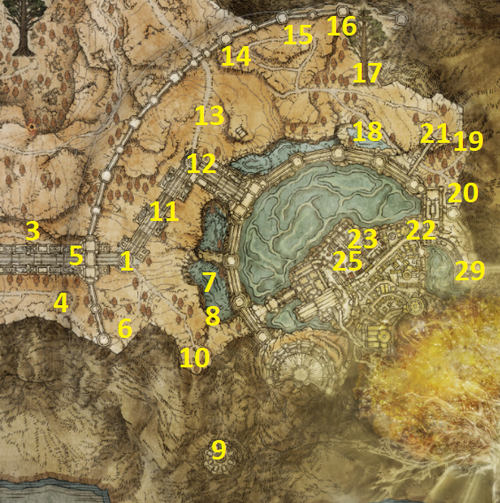
PSN karta #1–#29 • Outer Capital • Royal Capital • Subterranean Shunning-Grounds • Morgott
⚠️ CH18 — provjera prije promjene Leyndella (Word V30 audit)
Prije napredovanja prema Ashen Capitalu pregledaj sve preostale zadatke u Leyndellu, posebno Goldmask/Corhyn (Law of Regression kod Radagonove statue), Dung Eater/Seedbed Curses i predmete dostupne samo u Royal Capitalu. Ovaj podsjetnik nije nova kvačica i ne potvrđuje automatski da je sve obavljeno.
Usporedi postojeće korake CH18 s vlastitim napretkom prije završnog bossa Maliketha. Izvorni koraci ostaju neizmijenjeni.
1Leyndell map + Outer Wall Phantom Tree0/1
Od Altus Highway Junction idi istočno uz velike stepenice, prođi Tree Sentinels i vrata do Outer Wall Phantom Tree Site of Grace. Map pillar je uz Grace.
POKUPI / ODRADI: Leyndell map • 2× Golden Seed
Vrati se u Roundtable Hold s barem jednim Seedbed Curseom. Razgovaraj s Dung Eaterom u njegovoj sobi. Dobit ćeš Sewer-Gaol Key. Nemoj dalje improvizirati njegov quest — nastavit ćemo ga u Leyndell dijelu po točnoj ruti.
Sve unutar površinskog Leyndella smatraj missable prije završetka Crumbling Farum Azula, jer se grad kasnije trajno mijenja. Posebno NE propusti Bolt of Gransax, Fortified Manor loot, Seedbed Curses, Bernahl invasion i ostale stavke ove rute. Subterranean Shunning-Grounds i Leyndell Catacombs ostaju dostupni kasnije.
2Perfumer's Grotto0/1
Vrati se Altus Highway Junctionu i prati put sjeverno od glavnih stepenica, ali prema istoku, do cavea.
POKUPI / ODRADI: Great Omenkiller Cleaver
BOSS / EVENT: Omenkiller & Miranda the Blighted Bloom
3Fallingstar Beast0/1
Od Altus Highway Junctiona kreni istočno južnom stranom glavnih stepenica. Boss nema jedinstveni reward, ali ga očisti za 100% rutu.
BOSS / EVENT: Fallingstar Beast
4Tree Sentinels0/1
Vrati se na glavnu prilaznu cestu prema Outer Wall Phantom Tree i porazi duo.
POKUPI / ODRADI: Erdtree Greatshield
BOSS / EVENT: Tree Sentinels
5Ulcerated Tree Spirit + Giant-Crusher0/1
Južno od map pillar područja izazovi Ulcerated Tree Spirit. Nakon borbe otvori chest iza njega.
POKUPI / ODRADI: Golden Seed • Giant-Crusher
BOSS / EVENT: Ulcerated Tree Spirit
6Prayerful Strike scarab0/1
Spusti se u lower lake istočno od map lokacije i pronađi invisible scarab.
POKUPI / ODRADI: Ash of War: Prayerful Strike
7Sealed Tunnel0/1
U lower lakeu, malo južno od scaraba. Chest na početku daje važan bell bearing; iza njega je illusory wall za nastavak. Kod Abductor Virgin područja pokupi Stonesword Key.
POKUPI / ODRADI: Smithing-Stone Miner's Bell Bearing [2] • Stonesword Key • Onyx Lord's Greatsword
BOSS / EVENT: Onyx Lord
8Divine Tower of West Altus0/1
Na kraju Sealed Tunnela dođi do towera. Trenutno ga NE možemo aktivirati jer Rykard još mora ostati živ zbog Volcano Manor questova. Samo registriraj lokaciju; vraćamo se nakon Rykarda.
Nemoj zbog towera sada ubiti Rykarda. Volcano Manor assassination questline ima prioritet.
9Minor Erdtree Church0/1
Jugozapadno od Sealed Tunnela. Odmori na Graceu kako bi dobio Melinin dijalog.
POKUPI / ODRADI: Missionary's Cookbook [4] • Golden Order Seal • Outer Order gesture
10Valiant Gargoyle0/1
Prati put sjeveroistočno od map područja.
POKUPI / ODRADI: Gargoyle's Great Axe
BOSS / EVENT: Valiant Gargoyle
11Outer Wall — Seeds, Golden Parry, Lost Ashes0/1
Dalje sjeveroistočno od Gargoylea pronađi dva Golden Seeda. Na istočnim stepenicama ubij scarab; kod sealed gatea na kraju uzmi Lost Ashes.
POKUPI / ODRADI: 2× Golden Seed • Ash of War: Golden Parry • Lost Ashes of War
12Margit field encounter0/1
Sjeverno od Golden Seeda čut ćeš glas; približavanjem se pojavljuje Margit kao field enemy.
POKUPI / ODRADI: Viridian Amber Medallion +1
BOSS / EVENT: Margit
13Hermit Merchant + Bell Bearing Hunter0/1
Sjeveroistočno od Margita pronađi Hermit's Shack. Danju obavi kupnju; noću se vrati za Bell Bearing Hunter.
POKUPI / ODRADI: Sentry's Torch • Distinguished Greatshield • Prophet Set • Upper-Class Robe • Consort's Trousers • Medicine Peddler's Bell Bearing
BOSS / EVENT: Bell Bearing Hunter — noću
14Deathbird0/1
Istočno od shacka, samo noću.
POKUPI / ODRADI: Twinbird Kite Shield
BOSS / EVENT: Deathbird
15Winged Crystal Tear0/1
Malo sjeveroistočno od Deathbirda, među skull enemies.
POKUPI / ODRADI: Winged Crystal Tear
16Minor Erdtree — crystal tears0/1
Istočno od Deathbirda; loot je na velikom stone plateu.
POKUPI / ODRADI: Twiggy Cracked Tear • Crimson Crystal Tear
17Blackguard Big Boggart0/1
Južno od Minor Erdtreea uz lake pronađi Boggarta. Iscrpi cijeli dijalog i otključaj kupnju Boiled Crab.
POKUPI / ODRADI: Boiled Crab shop unlocked
Boggarta sada NE ubijaj. Treba nam živ za kasniji Dung Eater invasion i Seedbed Curse.
18Auriza Side Tomb0/1
Na sjeveroistočnom kraju puta istočno od Boggarta, ispod east gatea. Chestovi teleportiraju između kopija prostorija; koristi ih dok ne dođeš do levera.
POKUPI / ODRADI: Perfumer's Cookbook [3] • Soldjars of Fortune Ashes
BOSS / EVENT: Grave Warden Duelist
19Auriza Hero's Grave0/1
Južno od Side Tomba. Golden Epitaph traži Stonesword Key. Na two-lane chariot dijelu pokupi još jedan Stonesword Key; spusti se preko wooden beams, uzmi Vulgar Militia Ashes, zatim preko nižih beams do fire pillar dijela. Pokupi Crucible Feather Talisman prije aktiviranja mehanizma koji dovodi treći chariot i uništava chariote.
POKUPI / ODRADI: Golden Epitaph • Stonesword Key • Vulgar Militia Ashes • Crucible Feather Talisman • Ash of War: Holy Ground • Tree Sentinel Set • Ordovis's Greatsword • Crucible Axe Set
BOSS / EVENT: Crucible Knight & Crucible Knight Ordovis
20Draconic Tree Sentinel — ulaz u Capital0/1
Idi do Leyndell east gatea i porazi čuvara.
POKUPI / ODRADI: Dragon Greatclaw • Dragonclaw Shield
BOSS / EVENT: Draconic Tree Sentinel
Ako još nemaš Casual Greeting i NISI završio Patchesov assassination contract protiv Tragotha, summonaj Great Horned Tragotha ovdje prije Draconic Tree Sentinela. Ovo je zadnja boss prilika za gesture.
21East Capital Rampart + Boc0/1
Uđi u Leyndell preko Capital Rampart pa nastavi do East Capital Rampart Site of Grace. Odmori za Melinin razgovor; Boc je u blizini.
POKUPI / ODRADI: Boc quest progression
Koristi Prattling Pate (You're Beautiful) ispred Boca, zatim razgovaraj s njim i potvrdi da je lijep. NE daj mu Larval Tear — ta ruta završava njegovom smrću.
22Lower Capital — Seedbed Curse, main street i graveyard0/1
Od East Capital Rampart prati jedini put, kroz building iza fire-breathing enemyja i liftom dolje. U sljedećem buildingu ladder vodi do Perfume Bottle; kat iznad ima Seedbed Curse. Na balconyju uzmi Upper-Class Robe. Nastavi do destroyed convoyja i main streeta. Erdtree Avatar daje Lord's Rune. Otvori east gate za kasniji izlaz. Kod Leonine Misbegottena uzmi Perfume Bottle; lift iznad je zasad blokiran. U alleyju s druge strane main streeta uzmi Imp Head (Corpse). Fountain area daje pristup graveyardu; Avenue Balcony Site of Grace je u malom buildingu uz main street. Na zapadnoj strani pokupi Stonesword Key na gazebo-u.
POKUPI / ODRADI: Perfume Bottle • Seedbed Curse • Upper-Class Robe • Lord's Rune • Perfume Bottle • Imp Head (Corpse) • Stonesword Key
BOSS / EVENT: Erdtree Avatar
Od Avenue Balcony spusti se lijevim stepenicama za Thunderbolt scarab. Graveyard istraži i s elevator strane: spear skeleton grave ima Stonesword Key; cell chest u enemy roomu ima drugi Stonesword Key, a ladder vraća prema Avenue Balcony. S roofova uzmi Black Bow. Na krajnjem zapadu spawnaj Ulcerated Tree Spirit za Golden Seed. Uđi južno u building s Cracked Potom i dođi do Lower Capital Church Site of Grace; unutra su Lionel's Set i Deathbed Dress. Omenkiller vani daje Omensmirk Mask.
POKUPI / ODRADI: Ash of War: Thunderbolt • 2× Stonesword Key • Black Bow • Golden Seed • Cracked Pot • Lionel's Set • Deathbed Dress • Omensmirk Mask
Nemoj prodavati ili ignorirati Seedbed Curses. Trebaju za Dung Eater quest i jedan ending path.
23Lower sewers → Subterranean Shunning-Grounds0/1
Od Lower Capital Church spusti ladder prema seweru. Sjeveroistočno iza rats uzmi Guilty Hood. U buildingu lijevo/lijevo iza Giant Handa je Lost Ashes of War; desna ruta dovodi iza fire statue, a corpse ispod ima Erdsteel Dagger. Ladder vraća do baze dragon wing-a/Avenue Balcony. Za Shunning-Grounds od Avenue Balcony kreni prema dragon statue, preskoči lijevu ogradu i pronađi well ispod wing-a. Spusti se do Underground Roadside Site of Grace.
POKUPI / ODRADI: Guilty Hood • Lost Ashes of War • Erdsteel Dagger
U Omen hallwayu pokupi Bloodsoaked Mask i Bloodsoaked Manchettes. Ladderom dolje na pipe network; kroz route do Shadow Bait rooma aktiviraj lever shortcut prema Graceu. Vrati se na pipes, spusti se na lower pipe pa na dno s dva Giant Crayfisha; tu pokupi Mohg's Shackle i aktiviraj Leyndell Catacombs Grace za kasnije. Elevator route s ghost archers ima dva illusory walla; drugi skriva Spirit-Caller Snaila i Haligdrake Talisman +1. Otvori shortcut natrag.
POKUPI / ODRADI: Bloodsoaked Mask • Bloodsoaked Manchettes • Shadow Bait • Mohg's Shackle • Haligdrake Talisman +1
Za nastavak se vrati u rat sewer i skreni desno. U slug tunnelu preskoči dva holes; na kraju desno kroz open iron gate, do laddera i levera za novi shortcut prema Underground Roadside. Vrati se i padni kroz prvi hole po Stonesword Key. Kroz vrata iz hallwaya pažljivo se spusti; kad dobiješ izbor ladder ili poison-flower sewer, prvo ladderom dolje po Nomad Ashes, zatim sewerom kroz Death Frogs do Omen enemyja za Omen Bairn. Otvori još jedan shortcut. Na pipe routeu traži ispravni hole s corpse/itemom na dnu; Rainbow Stones su korisni za označavanje. Ispravna ruta vodi do elevatora i bossa.
Na drugom kraju hallwaya spusti se kroz hole. U seweru s rats nastavi ravno, kroz poison flowers i ladder gore. Kod Giant Handa uzmi Lost Ashes of War i pronađi Dung Eaterovo fizičko tijelo. Otključaj ćeliju Sewer-Gaol Keyem i OSLOBODI ga. Nemoj ga ovdje ubiti.
24Mohg, the Omen + Frenzied Flame Proscription access0/1
Na kraju Shunning-Grounds porazi boss. Otvori chest i napadni altar iza njega za secret passage. Dublji put je prije Morgotta djelomično zapečaćen.
POKUPI / ODRADI: Bloodflame Talons • Erdtree's Favor +1
BOSS / EVENT: Mohg, the Omen
Ovo je zasebna NPC napomena, nije PSN #25. Prije silaska do vrata Three Fingers provjeri Hyettinu rutu: prvi Shabriri Grape u CH5 #2, drugi u CH5 #14, treći od Edgar the Revenger u CH8 #8 (povratak na Gate Town Bridge), zatim Fingerprint Grape od Festering Fingerprint Vykea u CH5 #42 i predaja Hyetti kod Bellum Church. Iscrpi svaki razgovor i ponovno učitaj područje po potrebi.
Frenzied Flame Proscription: nakon Mohg, the Omen pronađi tajni prolaz iza oltara i spusti se do najnižeg dijela. Za puni pristup području potrebno je pobijediti Morgott, the Omen King. Hyetta se nakon prethodnih faza pojavljuje blizu vrata Three Fingers. STOP — otvaranje vrata bez opreme i prihvaćanje Three Fingers zaključava te na Lord of Frenzied Flame putanju dok je ne poništiš Miquella's Needleom. Ako samo skupljaš Platinum preduvjete, ne moraš sada prihvatiti plamen: prvo osiguraj ostale završetke / backup prema zasebnom ENDINGS odjeljku.
HYETTA — završni razgovor: nakon što su predana sva tri Shabriri Grapea i Fingerprint Grape, razgovaraj s Hyettom kod Frenzied Flame Proscription prije odluke o Three Fingers. Ako svjesno odabereš Frenzied Flame, skini svu opremu/odjeću prije interakcije s vratima, primi plamen, vrati se Hyetti i ponovno iscrpi njezin dijalog. Kada zatraži, dodirni je; nakon završetka događaja provjeri Frenzied Flame Seal u inventaru. STOP: bez prihvaćanja plamena ne možeš dovršiti ovaj Hyettin završetak u istoj grani; našu Platinum odluku uskladi sa zasebnim ENDINGS odjeljkom.
Opcionalna Hyettina nagrada: ako prihvatiš Frenzied Flame, ponovno razgovaraj s Hyettom, slijedi njezine upute i iscrpi dijalog za Frenzied Flame Seal. Za poništavanje plamena treba dovršiti Millicentinu GOLD granu, dobiti Miquella's Needle i upotrijebiti je u areni Dragonlord Placidusaxa; to ne vraća automatski Hyettin quest u ranije stanje.
25Leyndell Catacombs0/1
Vrati se na dno pipe područja s dva Giant Crayfisha i uđi u Catacombs. Kod fire pillar-a spusti ga udarcem pa ga ponovno aktiviraj i koristi kao lift do Omen rooma za Crucible Scale Talisman. Dungeon namjerno ponavlja gotovo identične prostorije: nakon prvog pada kod central gravea ponovi rutu i padni drugi put; potom kroz small window vrati se prema fire pillar-u. Rideaj ga do 'iste' sobe, ali sada koristi dodatni path do levera. Ne padaj prije povlačenja levera.
POKUPI / ODRADI: Crucible Scale Talisman • Lord of Blood's Exultation
BOSS / EVENT: Esgar, Priest of Blood
26West Capital Rampart + Fortified Manor0/1
Vrati se Avenue Balconyju i popni giant dragon wing do higher Leyndella. Aktiviraj West Capital Rampart. Niz stepenice pokupi Cane Sword i otvori lever shortcut prema lower cityju. Dalje porazi Valiant Gargoyle i uzmi Golden Seed. Prije huge root-a spusti se desno, preko stables i windowa u Fortified Manor.
POKUPI / ODRADI: Cane Sword • Gargoyle's Halberd • Golden Seed
BOSS / EVENT: Valiant Gargoyle
U Fortified Manor pokupi Sanctified Whetblade i Hammer kod blacksmith lokacije; Hero's Rune i By My Sword u Fia roomu; Coded Sword u Two Fingers roomu; Seedbed Curse u Dung Eater roomu. Donjim stepenicama u dining roomu uzmi Two Fingers' Prayerbook; u Alberich areni uzmi Alberich's Set. Aktiviraj Site of Grace i pokupi Flightless Bird Painting. Fast travel do Dominula, Windmill Village i na južnom kraju elevated area pronađi painting ghost za Fire's Deadly Sin.
POKUPI / ODRADI: Sanctified Whetblade • Hammer • Hero's Rune • By My Sword • Coded Sword • Seedbed Curse • Two Fingers' Prayerbook • Alberich's Set • Flightless Bird Painting • Fire's Deadly Sin
Natrag u Manor hallwayu otvori vrata uz Grace: courtyard s dva Abductor Virgins čuva Stormhawk Axe. Elevator vodi prema području Tower of Return waygatea. Iza glavnih vrata lijevo su Leyndell Knights; jedan daje Gravel Stone Seal. Preko nearby stables skoči na scaffold uz Manor po Stonesword Key.
POKUPI / ODRADI: Raging Wolf Set • Gelmir's Fury • Stormhawk Axe • Gravel Stone Seal • Stonesword Key
U Fortified Manor hallwayu koristi red invasion sign. Zajedno s Bernahlom porazi Vargram the Raging Wolf i Errant Sorcerer Wilhelm. Dobivaš Raging Wolf Set. Odmah se vrati Bernahlu u Volcano Manor i razgovaraj s njim za Gelmir's Fury. Nakon ovoga ostaje samo Tanithin final Red Letter target u Mountaintops prije Rykarda.
27Goldmask & Corhyn → Godfrey0/1
Vrati se kod Valiant Gargoylea. Umjesto huge root-a idi ispod njega prema coliseumu. Kod Duelista uzmi Ritual Shield Talisman; na kraju razgovaraj s Goldmaskom i Corhynom i iscrpi dijaloge, a iza njih uzmi Star Fist. Vrati se root-u, popni ga i uđi u building.
POKUPI / ODRADI: Ritual Shield Talisman • Star Fist • Talisman Pouch
BOSS / EVENT: Godfrey, First Elden Lord (Golden Shade)
STOP — ovaj dio odradi TEK NAKON CH18 #28, kada pokupiš Golden Order Principia. Predaj prayerbook Mirielu ili Corhynu, kupi i memoriraj Law of Regression (za cast je potrebno 37 INT i opremljen Sacred Seal; po potrebi privremeno prilagodi build). Vrati se do Radagon statue ispod Erdtree Sanctuaryja, stani na developer message i castaj Law of Regression. Pročitaj otkrivenu poruku o Radagonu, zatim se vrati Goldmasku kod coliseuma i prenesi otkriće; iscrpi razgovore s Goldmaskom i Corhynom i uzmi Golden Order Totality gesture. Corhyn zatim prodaje Immutable Shield. Ne nastavljaj na Mountaintops bridge checkpoint dok ovo nije potvrđeno.
28Erdtree Sanctuary — Bolt of Gransax + Golden Order Principia0/1
Aktiviraj Erdtree Sanctuary Site of Grace. Izađi i elevatorom dolje; na sljedećoj ruti invisible scarab daje Barrier of Gold. Kad možeš gledati prema giant spear/bolt u centru grada, pažljivo se spusti na ledge i popni na spear.
POKUPI / ODRADI: Barrier of Gold • Bolt of Gransax — Legendary Armament. 🛑 Prije napuštanja Royal Capitala fizički preuzmi Bolt of Gransax s velikog koplja i provjeri ga u Inventoryju. Ovo je trajno missable nakon Maliketha; sama aktivacija Site of Grace ili dolazak do koplja nije dovoljna.
Vrati se Erdtree Sanctuaryju. Idi naprijed i uz tree branch; prije bridgea skoči na lijevi roof pa kroz window po Erdtree Bow i Celestial Dew. Zatim se popni na branch po Golden Order Principia. Predaj prayerbook Corhynu ili Mirielu i kupi Law of Regression (te Radagon's Rings of Light ako želiš). Za Goldmask quest treba ti 37 INT samo u trenutku castanja; koristi gear/buffove, Godrick's Great Rune + Rune Arc i Intelligence-knot Crystal Tear ili privremeni respec ako treba.
POKUPI / ODRADI: Erdtree Bow • Celestial Dew • Golden Order Principia • Law of Regression
Ovo je jedan od najvažnijih missable itema u cijeloj igri. Mora biti uzet PRIJE nego Leyndell postane Ashen Capital nakon Crumbling Farum Azula. Ne napuštaj ovaj Part bez njega.
Prije odlaska iz Leyndella, predaj Golden Order Principia Mirielu ili Corhynu, kupi Law of Regression i vrati se na CH18 #27 dovršiti Radagon statue zagonetku te razgovore s Goldmaskom i Corhynom. Za cast treba 37 INT i Sacred Seal. Ovo je zaseban NPC povratak, bez novog PSN broja.
29Queen's Bedchamber → Morgott, the Omen King0/1
Od Erdtree Sanctuary nastavi prema Queen's Bedchamber Site of Grace. U sobi pokupi Blessing of the Erdtree. Nastavi prema Erdtreeu i porazi Shardbearera. Nakon pobjede pokušaj ući u Erdtree, zatim odmori na novom Graceu i razgovaraj s Melinom.
POKUPI / ODRADI: Blessing of the Erdtree • Morgott's Great Rune • Remembrance of the Omen King • Rold Medallion
BOSS / EVENT: Morgott, the Omen King
Izlaz iz Leyndella — East Altus Divine Tower route
Vrati se na main street i prati east road do elevatora koji je prije bio iza mist gatea. Na bridgeu pokupi Flamedrake Talisman +1. Kod drugog elevatora ga zasad preskoči i izađi drugim bridgeom: porazi Fell Twins za Omenkiller Rollo Ashes. Nastavi do Divine Tower of East Altus i aktiviraj Morgott's Great Rune. Vrati se do elevatora; tijekom spuštanja skoči u otvor na jugozapadnoj strani shafta po Blade of Calling i Official's Attire. Zatim se spusti do dna i aktiviraj Site of Grace prema sljedećoj regiji.
POKUPI / ODRADI: Flamedrake Talisman +1 • Omenkiller Rollo Ashes • Morgott's Great Rune activated • Blade of Calling • Official's Attire
Odmah nakon Morgotta i prije odlaska u Mountaintops of the Giants, fast travel do Stormveil Castle — Godrick the Grafted Site of Grace. Ako su uvjeti ispunjeni, Nepheli Loux, Kenneth Haight i živi Gatekeeper Gostoc okupljaju se u prijestolnoj dvorani iza Godrickove arene. Razgovaraj s Nepheli za Ancient Dragon Smithing Stone; ako je Gostoc živ, razgovaraj s njim i provjeri trgovinu za drugi Ancient Dragon Smithing Stone (kupuje se, nije besplatna nagrada). Kenneth nema zaseban Ancient Dragon Smithing Stone.
Ako dvorana ostane prazna: provjeri da je Nepheli preživjela i da joj je predan Stormhawk King (ne Stormhawk Deenh), da nije dobila Seluvis's Potion, da je Kennethova Fort Haight faza dovršena i da je Morgott poražen. Iscrpi dijaloge u Roundtable Holdu i Fort Haightu; zatim se odmori na Godrick the Grafted Graceu, ponovno učitaj područje ili otputuj i vrati se. Gostocov život utječe na njegovu trgovinu, ne na samu Nephelinu nagradu.
STOP — prije nastavka: provjeri oba moguća Ancient Dragon Smithing Stonea i tek zatim nastavi prema Grand Lift of Rold. Ranije pripreme: CH3 #15 Kenneth · CH8 #5 Stormhawk King · CH25 #18 završni NPC pregled.
Leyndell — podsjetnik prije nastavka (bez dodatnih potvrda)
• Leyndell map + svi Outer Capital ključni itemi uzeti
• Boc: You're Beautiful ruta odrađena; Boc živ
• Boggart ostavljen živ do Dung Eater invasiona, zatim njegov loot uzet
• Draconic Tree Sentinel riješen; Casual Greeting provjeren prije borbe
• Seedbed Curses iz East Capital Rampart i Fortified Manor uzeti
• Subterranean Shunning-Grounds očišćen; Dung Eater oslobođen
• Mohg, the Omen poražen; Erdtree's Favor +1 uzet
• Leyndell Catacombs očišćen; Lord of Blood's Exultation uzet
• Fortified Manor kompletno očišćen
• Bernahl Leyndell contract završen; Raging Wolf Set + Gelmir's Fury uzeti
• Goldmask/Corhyn Law of Regression korak završen
• BOLT OF GRANSAX U INVENTARU
• Morgott poražen; Rold Medallion dobiven
• Frenzied Flame Proscription pronađen, ali Three Fingers door NIJE otvoren
• Dung Eater moat invasion završen; prikupljeni Seedbed Curses predani postupno (ukupno 5 za Mending Rune)
• Morgott's Great Rune aktiviran u Divine Tower of East Altus
• Rykard je i dalje živ — čeka final Volcano Manor contract u Mountaintops
Nakon Morgotta vrati se u Mohg, the Omen boss room i prođi secret altar path. Pažljivo platformaj prema dnu. Razbij tents tako da navedeš enemies da ih napadnu; pokupi Nomadic Merchant's Set, Frenzied's Cookbook [2], Inescapable Frenzy i Fingerprint Stone Shield. Aktiviraj Frenzied Flame Proscription Site of Grace i razgovaraj s Hyettom. Desno od Hyette rollaj u illusory wall, uzmi Rune Arc, zatim napadni wall iza chesta kako bi otkrio secret route prema Deeproot Depths i aktiviraj Grace. Za ovu master rutu ZASAD NE skidaj opremu i NE otvaraj Three Fingers door — Frenzied Flame ćemo vremenski kontrolirati kasnije zbog endingova/Meline.
Vrati se u Roundtable. U Dung Eater sobi pročitaj njegovu poruku. Zatim idi Boggartu kod outer moat-a/east gate područja i iscrpi dijalog. Nakon razgovora s Boggartom ponovno učitaj područje i priđi mjestu invazije. Dung Eater će invadirati; porazi ga za Sword of Milos. Zatim se vrati Boggartovu tijelu i pokupi Seedbed Curse, Blackguard's Iron Mask, Iron Ball i Blackguard's Bell Bearing. Vrati se u Roundtable Hold i razgovaraj s Dung Eaterovom projekcijom; potom u Subterranean Shunning-Grounds njegovom fizičkom tijelu predaj Seedbed Curses koje imaš. Po ovoj ruti sada ih možeš imati 4: Volcano Manor (CH17 #26), Lower Capital (CH18 #22), Fortified Manor (CH18 #26) i Boggart (ovaj korak). Preostala dva nalaze se u Elphaelu (CH23 #4). Broj provjeri u inventaru, osobito ako si preskočio Volcano Manor.
Na našoj ruti Seluvis's Potion već je predan Gideonu u CH8 #34, a Seluvisova questline završila je nakon Fingerslayer Bladea. Zato Dung Eater Puppet više nije dostupan. Alternativna puppet grana zahtijeva sačuvan Seluvis's Potion, oslobađanje Dung Eatera i pristup njegovu vezanom tijelu u Subterranean Shunning-Grounds; predaja potiona tom tijelu zamjenjuje standardnu predaju pet Seedbed Curses. Za Mending Rune of the Fell Curse nastavljamo standardni Seedbed Curse quest, BEZ predaje potiona.
Kod Enije potroši ili sačuvaj Remembrance of the Omen King: Morgott's Cursed Sword ili Regal Omen Bairn; po želji dupliciraj u odgovarajućem Walking Mausoleumu. Možeš kupiti Fell Omen Cloak. Razgovaraj i s Gideonom za novi dijalog.
CHAPTER 19 — DEEPROOT DEPTHS 0/17
Master Guide V30 · PART 19 · 17 numeriranih ruta. Oznake se spremaju samo u Walkthroughu.
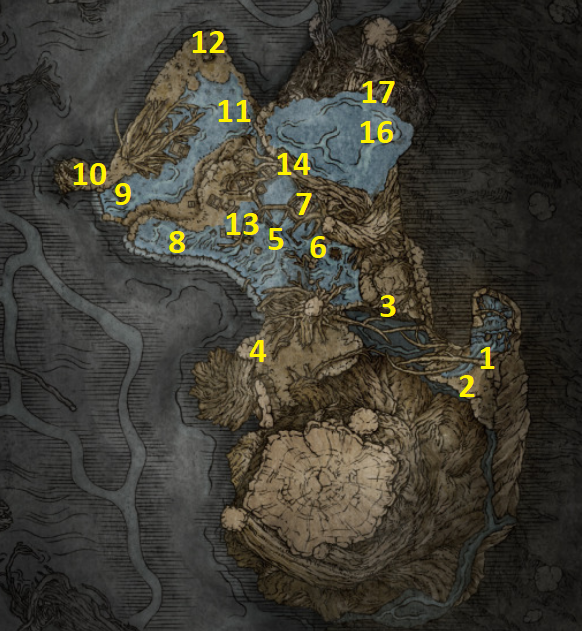
PSN karta #1–#17 • Fia • D, Beholder of Death • Lichdragon Fortissax
Deeproot Depths je pretposljednja podzemna regija naše rute. Postoje dva ulaza: coffin iza Valiant Gargoyles u Siofra Aqueductu ili secret route iza Frenzied Flame Proscriptiona. Za ovu rutu koristimo coffin iz Siofra Aqueducta jer je sigurniji i vodi na isti početak.
1Great Waterfall Crest — ulaz u Deeproot Depths0/1
Vrati se u Siofra Aqueduct na mjesto gdje smo porazili Valiant Gargoyles. Kod vodopada uđi u coffin i aktiviraj ga. Nakon transporta aktiviraj Site of Grace ispred sebe. Ovo je početak rute po karti.
2Erdtree Avatar0/1
Od početnog Gracea kreni naprijed. Erdtree Avatar stoji na glavnoj ruti i treba ga očistiti prije nastavka.
POKUPI / ODRADI: Staff of the Avatar
BOSS / EVENT: Erdtree Avatar
3Golden Land scarab0/1
Nastavi iza Avatara. Među giant ants pronađi scarab i ubij ga prije nego pobjegne.
POKUPI / ODRADI: Ash of War: Golden Land
4Ant cave → Elden Stars0/1
Popni se Torrentom na giant tree roots. Jedan root vodi u cave u litici s desne strane. Unutra su Ant Queens i više ants; svaka queen daje Numen's Rune. Prođi cave do drugog izlaza i pokupi legendary Incantation.
POKUPI / ODRADI: Numen's Rune • Elden Stars — Legendary Incantation
5Deeproot Depths Site of Grace0/1
Nakon izlaska iz cavea nastavi prema zapadu kroz roots i otvoreni teren dok ne dođeš do Deeproot Depths Site of Grace. Aktiviraj ga.
6Deeproot Depths map0/1
Od Gracea idi sjeverno prema vodi. U gazebo-u je corpse s mapom regije.
POKUPI / ODRADI: Deeproot Depths map
7Prince of Death's Cyst0/1
Istočno od map gazebo-a pronađi waterfall. Iza vodopada je cave s Runebearom. Porazi ga.
POKUPI / ODRADI: Prince of Death's Cyst
BOSS / EVENT: Runebear
8Vacuum Slice0/1
Sjeveroistočno od map lokacije uđi u building s fire-breathing statue. Item je ispred statue.
POKUPI / ODRADI: Ash of War: Vacuum Slice
9The Nameless Eternal City Site of Grace0/1
Od map područja kreni zapadno do The Nameless Eternal City Site of Grace. Aktiviraj ga jer je ovo glavni checkpoint za zapadni dio regije.
10Stonesword Key — rooftop0/1
Sjeverozapadno od The Nameless Eternal City Gracea koristi Spiritspring da dođeš na vrh buildinga.
POKUPI / ODRADI: Stonesword Key
11Crucible Knight Siluria0/1
Od buildinga sa Stonesword Keyem idi dalje sjeverozapadno. Porazi Crucible Knight Siluria; zatim otvori chest iza nje.
POKUPI / ODRADI: Siluria's Tree • Crucible Tree Set
BOSS / EVENT: Crucible Knight Siluria
12Walking Mausoleum0/1
Sjeveroistočno od buildinga sa Stonesword Keyem nalazi se Walking Mausoleum. Ovdje skulls nisu na nogama: popni se na giant tree roots i skoči na vrh Mausoleuma, pa razbij white skulls da ga spustiš.
POKUPI / ODRADI: Walking Mausoleum — Remembrance duplication available
Ne moraš odmah potrošiti ovaj Mausoleum. Ako trenutačno nemaš Remembrance koji želiš duplicirati, ostavi ga za kasnije. U našem 100% runu važnije je sačuvati mogućnost dupliciranja nego nasumično potrošiti Mausoleum.
13Mausoleum Soldier Ashes0/1
Od Mausoleuma idi prema krajnjem sjeveru. Kod petrified tree koji se može razbiti pronađi Ashes.
POKUPI / ODRADI: Mausoleum Soldier Ashes
14Prince of Death's Staff0/1
Vrati se na The Nameless Eternal City Site of Grace. Istočno pronađi giant tree root kojim se penješ prema višim razinama. Dok se penješ, skreni prema sjeverozapadnom toweru i pokupi staff.
POKUPI / ODRADI: Prince of Death's Staff
15Across the Roots Site of Grace0/1
Nastavi penjanje po giant roots sve do vrha rute i aktiviraj Across the Roots Site of Grace.
16Fia's Champions0/1
Od Across the Roots Gracea kreni u veliku otvorenu arenu prema ogromnom dragon corpseu. Aktivirat će se boss encounter protiv Fia's Champions.
POKUPI / ODRADI: Fia's Mist
BOSS / EVENT: Fia's Champions
Prije nastavka Fia mora biti dovoljno napredovana: u Roundtable Hold trebala ti je dati Weathered Dagger, a dagger je morao biti predan D, Hunter of the Dead. Nakon odgovarajućeg reload/progression koraka Fia napušta Roundtable. Ako Fia nije ovdje u Deeproot Depths nakon sljedeće borbe, NE nastavljaj naslijepo — prvo dovrši njezine prethodne quest trigger-e.
17Fia + Lichdragon Fortissax — završetak questlinea0/1
Nakon Fia's Champions razgovaraj s Fia uz dragon corpse. Odaberi opciju da te zagrli i iscrpi dijalog dok joj ne možeš predati Cursemark of Death koji smo uzeli na Divine Tower of Liurnia. Odmori na nearby Graceu, ponovno razgovaraj s njom i ponavljaj rest/reload + dialogue dok ne zaspi. Interactaj s uspavanom Fia kako bi ušao u Deathbed Dream i pokrenuo boss fight.
POKUPI / ODRADI: Remembrance of the Lichdragon • Mending Rune of the Death-Prince
BOSS / EVENT: Lichdragon Fortissax
Deeproot Depths — checkpoint prije nastavka
• Staff of the Avatar uzet
• Ash of War: Golden Land uzet
• Elden Stars uzet
• Deeproot Depths map uzet
• Prince of Death's Cyst uzet
• Ash of War: Vacuum Slice uzet
• Stonesword Key uzet
• Siluria's Tree + Crucible Tree Set uzeti
• Walking Mausoleum spušten ili namjerno sačuvan za kasnije
• Mausoleum Soldier Ashes uzet
• Prince of Death's Staff uzet
• Fia's Champions poraženi
• Cursemark of Death predan Fia
• Lichdragon Fortissax poražen
• Mending Rune of the Death-Prince uzet
• Fia cleanup odrađen
• D's Twin Brother cleanup odrađen — Twinned Set + Inseparable Sword
Cursemark of Death je ključni quest item iz Ranni rute / Divine Tower of Liurnia. Bez njega ne možeš dovršiti Fia quest i dobiti Mending Rune of the Death-Prince. Nakon Fortissaxa obavezno pokupi Rune uz Fia.
Nakon Fortissaxa prvo pokupi Mending Rune of the Death-Prince s Fijina tijela. Ako si D-ovu bratu ranije predao Twinned Set u Siofra Aqueductu, odmori/ponovno učitaj područje, provjeri njegov epilog uz Fiju te nakon dodatnog učitavanja pokupi vraćeni Twinned Set i Inseparable Sword. Ako set nisi predao, ovaj epilog i njegove nagrade nisu automatski ostvareni: nemoj ih označavati kao dobivene. Ova opcionalna grana ne blokira Fortissaxa ni završetak PSN koraka.
Kod Enije možeš zamijeniti Remembrance of the Lichdragon za Fortissax's Lightning Spear ili Death Lightning. Ako želiš oba u istom runu, dupliciraj Remembrance u odgovarajućem Walking Mausoleumu.
CHAPTER 20 — MOUNTAINTOPS OF THE GIANTS (WEST) 0/31
Master Guide V30 · PART 20 · 31 numeriranih ruta. Oznake se spremaju samo u Walkthroughu.
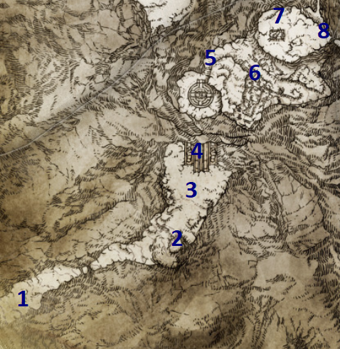
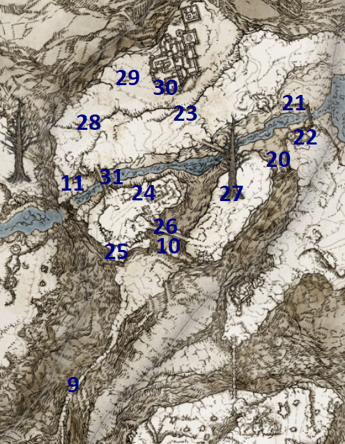
PSN karta #1–#31 • Volcano Manor cleanup • Millicent • Goldmask/Corhyn • Castle Sol
Mountaintops of the Giants otvara se nakon Morgotta i Rold Medalliona. Ovaj dio nastavlja main quest, ali prije Castle Sola dovršavamo nekoliko važnih questlineova koje smo namjerno ostavili otvorenima. Brojevi ispod prate plave brojeve na dvije priložene karte 1:1.
1Forbidden Lands — Night's Cavalry0/1
Kreni istočno od Forbidden Lands Site of Grace. Ako nije noć, promijeni vrijeme na Graceu. Na glavnoj ruti pojavit će se Night's Cavalry.
POKUPI / ODRADI: Ash of War: Phantom Slash
BOSS / EVENT: Night's Cavalry — noću
2Golden Seed0/1
Nastavi glavnom stazom prema istoku. Uz gold tree pokupi Golden Seed.
POKUPI / ODRADI: Golden Seed
3Black Blade Kindred0/1
Od Golden Seeda idi sjeverno prema prilazu Grand Lift of Rold. Black Blade Kindred čuva rutu.
POKUPI / ODRADI: Gargoyle's Black Axe • Gargoyle's Black Blades
BOSS / EVENT: Black Blade Kindred
4Grand Lift of Rold0/1
Na kraju ledene staze dođi do Grand Lift of Rold. Upotrijebi Rold Medallion koji je Melina dala nakon Morgotta i podigni se u Mountaintops.
5Mountaintops of the Giants map0/1
Od vrha Grand Lifta prati glavnu stazu. Na map pillar-u uz cestu pokupi map fragment.
POKUPI / ODRADI: Map: Mountaintops of the Giants, West
6Zamor Ruins — Shabriri / Yura checkpoint0/1
Od mape idi malo istočno do Zamor Ruins. Kod Gracea ćeš pronaći Shabriri u Yurinom tijelu. Razgovaraj i iscrpi dijalog. Za 100% sigurnu rutu NE ubijamo ga sada: Ronin's Set možemo dobiti kasnije nakon Frenzied Flame progression bez nepotrebnog prekida.
POKUPI / ODRADI: Zamor Ice Storm • Smithing-Stone Miner's Bell Bearing [3]
7Briars of Punishment0/1
Kreni prema početku dugog mosta. Zapadno od prilaza, kod Fire Monks i stabla, pokupi sorcery.
POKUPI / ODRADI: Briars of Punishment
8Giants' Mountaintop Catacombs0/1
Jugoistočno od početka dugog mosta pronađi ulaz. Ispod prvog elevatora pronađi chest s Fire Monk Ashes. Na kraju porazi Ulcerated Tree Spirit.
POKUPI / ODRADI: Fire Monk Ashes • Glovewort Picker's Bell Bearing [2] • Golden Seed • Deathroot
BOSS / EVENT: Ulcerated Tree Spirit
9Lost Ashes of War — long bridge0/1
Prijeđi dugi most. Na corpseu na samoj ruti pokupi item.
POKUPI / ODRADI: Lost Ashes of War
10Ancient Snow Valley Ruins — Millicent0/1
Ako Millicent nije kod Ancient Snow Valley Ruins, vrati se na Windmill Heights (CH16 #33), provjeri razgovor nakon Godskin Apostlea i ponovno učitaj područje. Tek zatim ovdje iscrpi dijalog; njezina sljedeća postaja je Prayer Room u Elphaelu (CH23 #4). Povezani korak.
Nakon mosta aktiviraj Ancient Snow Valley Ruins Site of Grace. Millicent je u blizini; razgovaraj s njom dok ne ponavlja dijalog.
11Shack of the Lofty0/1
Od Ancient Snow Valley Ruins idi sjeverno do frozen rivera pa skreni zapadno. Shack je pri kraju rijeke.
POKUPI / ODRADI: Traveling Maiden Set
12Juno Hoslow — posljednji Volcano Manor contract0/1
Malo istočno od Shack of the Lofty pronađi red invasion sign. Invadiraj Juno Hoslow. Kada se pojavi, pričekaj da dovrši svoj bow prije napada.
POKUPI / ODRADI: Hoslow's Oath gesture • Hoslow's Set • Hoslow's Petal Whip
BOSS / EVENT: Juno Hoslow, Knight of Blood
13Rykard, Lord of Blasphemy — Volcano Manor cleanup0/1
U Audience Pathway boss areni odmah pokupi Serpent-Hunter kod ulaza. Koristi ga protiv Rykarda. Nakon pobjede uzmi Eye Surcoat u području.
POKUPI / ODRADI: Serpent-Hunter • Rykard's Great Rune • Remembrance of the Blasphemous • Eye Surcoat
BOSS / EVENT: Rykard, Lord of Blasphemy
14Volcano Manor NPC cleanup — Rya, Patches, Tanith0/1
Vrati se u Manor. Razgovaraj s Tanith, Bernahlom i Patchesom te pokupi My Thanks gesture koji ostaje u hodniku. Idi do Ryine posljednje lokacije: NE daj joj Tonic of Forgetfulness; razgovaraj, reload i pokupi Daedicar's Woe + Zorayas' Letter. Zatim u Shaded Castle pronađi Patchesa prije Elemerove arene i uzmi Dancer's Castanets. Vrati se Tanith u Rykardovu arenu i predaj Castanets. Ako želiš kompletan item cleanup, možeš ubiti Tanith i zatim njezina Knighta.
POKUPI / ODRADI: My Thanks gesture • Daedicar's Woe • Zorayas' Letter • Dancer's Castanets • Consort's Set • Aspects of the Crucible: Breath
15Golden Seed — valley east of Minor Erdtree0/1
Vrati se na Ancient Snow Valley Ruins. Idi sjeverno do frozen rivera, ovaj put skreni istočno. Nakon što prođeš Minor Erdtree skreni desno u malu dolinu.
POKUPI / ODRADI: Golden Seed
16Freezing Lake Site of Grace0/1
Nastavi istočno do velikog frozen lakea. Uz sjeverne litice aktiviraj Freezing Lake Site of Grace.
17Heretical Rise — invisible bridge0/1
Sjeverno/zapadno iznad Freezing Lakea pronađi broken bridge koji izgleda kao slijepa ulica. Nevidljiva staza vodi do Heretical Rise. Koristi Rainbow Stones ili tragove na snijegu/magli za sigurnije kretanje. U tornju otvori chest na vrhu.
POKUPI / ODRADI: Founding Rain of Stars — Legendary Sorcery
18Tibia Mariner0/1
Prati zapadnu/elevated rutu gdje se pojavljuju giant skeletons. Izvor summonova je Tibia Mariner na sjevernom dijelu visoravni.
POKUPI / ODRADI: Helphen's Steeple • Deathroot
BOSS / EVENT: Tibia Mariner
19Stargazer's Ruins0/1
Na zapadnom kraju elevated područja prijeđi most prema jugu. U ruševinama pronađi Spirit Jellyfish i summonaj svoje Spirit Jellyfish Ashes uz nju.
POKUPI / ODRADI: Fancy Spin gesture • Primal Glintstone Blade
20Nomadic Merchant0/1
Prati nižu stazu prema zapadnoj strani područja do merchanta.
POKUPI / ODRADI: Missionary's Cookbook [7] • Vagabond Set
21Corhyn & Goldmask — bridge checkpoint0/1
Vrati se kod Stargazer's Ruins i kreni mostom prema jugoistoku. Na sredini mosta razgovaraj s Corhynom i Goldmaskom do kraja.
POKUPI / ODRADI: Quest dialogue progressed
Ovaj razgovor slijedi tek nakon što u Leyndellu otkriješ Radagonovu tajnu pomoću Law of Regression i vratiš se Goldmasku s odgovorom. Iscrpi dijalog obojice na mostu kod Stargazer’s Ruins. Ako ih ovdje nema, vrati se na CH18 #27 i CH18 #28 te provjeri prethodnu fazu.
Naša Platinum ruta: ne nuditi Tonic of Forgetfulness Corhynu. Ako se ponudi na mostu blizu Stargazer’s Ruins, Corhyn može ostati u Mountaintops of the Giants umjesto da se pojavi u Leyndell, Ashen Capital. Odluka nije potrebna za Mending Rune of Perfect Order; važni su prethodno dovršen Law of Regression i razgovori s Goldmaskom. Ako je tonic već ponuđen, provjeri Corhyna na mostu tijekom završnog cleanupa u CH26 #6.
22Minor Erdtree0/1
Nakon mosta nastavi u sjeverni dio sljedećeg područja i porazi Erdtree Avatar.
POKUPI / ODRADI: Cerulean Crystal Tear • Crimson Bubbletear
BOSS / EVENT: Erdtree Avatar
23Death Rite Bird0/1
Vrati se prema mostu za Stargazer's Ruins i spusti se niz litice sjeverno. Boss se pojavljuje noću.
POKUPI / ODRADI: Death Ritual Spear
BOSS / EVENT: Death Rite Bird — noću
24Walking Mausoleum — Castle Sol approach0/1
Kreni istočno prema Castle Solu. Kod vanjskog područja nalazi se Walking Mausoleum; očisti white skull growths na nogama da ga spustiš.
POKUPI / ODRADI: Walking Mausoleum — Remembrance duplication
25Castle Sol — ulaz i Sorcerer Painting0/1
Uđi u Castle Sol. Na ground levelu idi prema sjeverozapadnom toweru punom slugs. Popni se ladderom, prati rooftop rutu i spusti se drugim ladderom u sobu.
POKUPI / ODRADI: Sorcerer Painting
26Stormhawk Axe — Castle Sol rooftop0/1
Na istom rooftop području iskoristi tents kao platforme i skoči prema bočnoj platformi buildinga koju čuva Eagle.
POKUPI / ODRADI: Stormhawk Axe
27Church of the Eclipse0/1
Nastavi kroz Castle Sol do Church of the Eclipse Site of Grace. U samoj crkvi pokupi legendary armament.
POKUPI / ODRADI: Eclipse Shotel — Legendary Armament
28Cerulean Amber Medallion +10/1
Nakon izlaska iz crkve ne idi odmah prema bossu. Skreni desno, popni se ladderom i porazi dual-wielding Phantom Banished Knighta koji čuva item.
POKUPI / ODRADI: Cerulean Amber Medallion +1
29Stonesword Key — pre-boss rooftop0/1
U dijelu nakon Church of the Eclipse, prije boss mist gatea spusti se na rooftop lijevo. Prođi kraj Phantom Banished Knighta i dva dogs, pa se popni stepenicama.
POKUPI / ODRADI: Stonesword Key
30Commander Niall0/1
Vrati se na glavnu Castle Sol rutu i uđi u boss arenu. Porazi Commandera Nialla.
POKUPI / ODRADI: Veteran's Prosthesis
BOSS / EVENT: Commander Niall
31Haligtree Secret Medallion (Left)0/1
Nakon Nialla nastavi u tower iza boss arene i popni se na vrh.
POKUPI / ODRADI: Haligtree Secret Medallion (Left)
Mountaintops West — checkpoint prije nastavka
☐ Phantom Slash uzet
☐ Mountaintops West map uzet
☐ Smithing-Stone Miner's Bell Bearing [3] uzet
☐ Millicent razgovor na Ancient Snow Valley Ruins odrađen
☐ Juno Hoslow poražen nakon Hoslow's Oath geste
☐ Rykard poražen tek nakon svih dostupnih Volcano Manor ugovora
☐ Rykard's Great Rune aktiviran
☐ Rya/Zorayas cleanup završen bez Tonic of Forgetfulness
☐ Patches' Crouch uzet
☐ Founding Rain of Stars uzet
☐ Tibia Mariner Deathroot predan Gurranqu
☐ Corhyn/Goldmask razgovor odrađen
☐ Eclipse Shotel uzet
☐ Commander Niall poražen
☐ Haligtree Secret Medallion (Left) uzet
☐ Jarburg Diallos cleanup odrađen
CHAPTER 21 — CONSECRATED SNOWFIELD 0/27
Master Guide V30 · PART 21 · 27 numeriranih ruta. Oznake se spremaju samo u Walkthroughu.
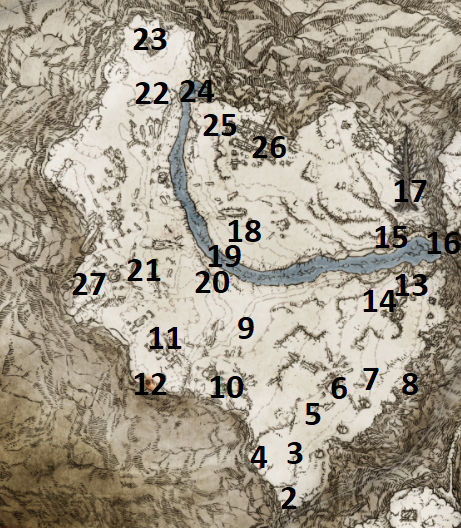
PSN karta #1–#27 • Hidden Path • Gurranq finale • Latenna • Ordina • Mohgwyn access
Consecrated Snowfield otvara se kada na Grand Lift of Rold upotrijebiš Haligtree Secret Medallion umjesto Rold Medalliona. Ovo je izrazito opasno područje, posebno sjeverni dio. Brojevi ispod prate kartu #1–#27 točno redom.
1Hidden Path to the Haligtree — ulaz0/1
Na donjoj razini Grand Lift of Rold odaberi opciju za Haligtree Secret Medallion. Nakon vožnje liftom uđi u Hidden Path to the Haligtree i aktiviraj Site of Grace.
2Hidden Path — invisible floor i Silver Scarab0/1
Od Gracea kreni natrag prema liftu. Nakon octopusa koji pada sa stropa i jednog seta stepenica pronađi dio bez ograde. Spusti se ravno dolje na invisible floor. Rainbow Stones su odlični za provjeru podloge. U obližnjem alcoveu udari illusory wall.
POKUPI / ODRADI: Silver Scarab
3Hidden Path — Spelldrake Talisman +20/1
Na skrivenoj ruti prije boss arene skreni desno umjesto kroz mist gate. Prati put do elevatora i podigni se do itema.
POKUPI / ODRADI: Spelldrake Talisman +2
4Stray Mimic Tear — posljednji Deathroot0/1
Vrati se do boss arene i porazi Stray Mimic Tear. Nakon borbe otvori chest.
POKUPI / ODRADI: Blackflame Monk Amon Ashes • Deathroot
BOSS / EVENT: Stray Mimic Tear
5Consecrated Snowfield Site of Grace0/1
Izađi iz Hidden Patha u snježnu oluju i kreni gotovo ravno prema sjeveru. Uz male stijene pronađi i aktiviraj Consecrated Snowfield Site of Grace.
6Rotten Duelist — južni snowfield0/1
Od Consecrated Snowfield Gracea idi zapadno među sarcophagi. Porazi roaming Rotten Duelista.
POKUPI / ODRADI: Rotten Duelist Helm • Rotten Battle Hammer
BOSS / EVENT: Rotten Duelist
7Nomadic Warrior's Cookbook [23]0/1
Od Gracea idi sjeverno pa blago istočno preko otvorenog snježnog polja. Item je na corpseu bez izrazitog landmarka.
POKUPI / ODRADI: Nomadic Warrior's Cookbook [23]
8Golden Seed0/1
Od Cookbook lokacije nastavi sjeveroistočno prema velikom stablu. Golden Seed je uz gold tree, na jugoistočnoj strani većeg stabla.
POKUPI / ODRADI: Golden Seed
9St. Trina's Torch convoy0/1
Sjeveroistočno od južnog Gracea pronađi moving convoy na stazi između snježnih grebena. Otvori chest na stražnjem dijelu kola.
POKUPI / ODRADI: St. Trina's Torch
10Consecrated Snowfield Catacombs0/1
Istočno od convoya pronađi ulaz u catacombs. Na drugom katu, ispred Watchdog enemyja, pokupi Imp Head (Elder). Na kraju porazi Putrid Grave Warden Duelist.
POKUPI / ODRADI: Imp Head (Elder) • 2× Great Grave Glovewort • Rotten Gravekeeper Cloak
BOSS / EVENT: Putrid Grave Warden Duelist
11Inner Consecrated Snowfield Site of Grace0/1
Vrati se na glavnu sjevernu rutu i aktiviraj Inner Consecrated Snowfield Site of Grace neposredno prije frozen rivera.
12Flowing Curved Sword convoy + Night's Cavalry duo0/1
Jugozapadno od Inner Consecrated Snowfield Gracea pronađi drugi convoy. Chest na kolima sadrži Flowing Curved Sword. Noću se uz convoy pojavljuju dva Night's Cavalryja; možeš ih odvući i ubijati jednog po jednog.
POKUPI / ODRADI: Flowing Curved Sword • Night's Cavalry Set • Ancient Dragon Smithing Stone
BOSS / EVENT: Night's Cavalry duo — noću
13Stalwart Horn Charm +10/1
Jugozapadno od Night's Cavalry rute pronađi fallen tree log koji čuva singing Ancestral Follower.
POKUPI / ODRADI: Stalwart Horn Charm +1
14Yelough Anix Ruins0/1
Idi u jugozapadni dio regije. U sjeverozapadnom malom toweru čuvanom rats pokupi Stonesword Key. Za zatvoreni središnji dio koristi Torrent double-jump preko zida i siđi u underground chest.
POKUPI / ODRADI: Stonesword Key • Unendurable Frenzy
15Yelough Anix Tunnel0/1
Južno od ruševina uđi u tunnel. Na dnu malog canyon dijela Onyx Lord čuva Ancient Dragon Smithing Stone. Na kraju porazi Astel, Stars of Darkness.
POKUPI / ODRADI: Ancient Dragon Smithing Stone • Meteorite of Astel
BOSS / EVENT: Astel, Stars of Darkness
16Albinauric Rise0/1
Sjeveroistočno od Inner Consecrated Snowfield Gracea pronađi Albinauric Rise. Summonaj Fanged Imp Ashes i dok su tvoji Imps aktivni ubij jednog neprijateljskog Impa ispred towera. Time se otvara seal.
POKUPI / ODRADI: Graven-Mass Talisman
17Glintstone Craftsman's Cookbook [8]0/1
Jugozapadno od Albinauric Rise pronađi corpse koji čuvaju tri velika magic sphere neprijatelja.
POKUPI / ODRADI: Glintstone Craftsman's Cookbook [8]
18Cave of the Forlorn0/1
Sjeveroistočno od Albinauric Rise, uz frozen river i giant octopus, otključaj cave s 2 Stonesword Keys. Na kraju porazi Misbegotten Crusader.
POKUPI / ODRADI: Golden Order Greatsword — Legendary Armament
BOSS / EVENT: Misbegotten Crusader
19Great Wyrm Theodorix0/1
Istočno od Cave of the Forlorn porazi Great Wyrm Theodorix. Nakon pobjede u Cathedral of Dragon Communion postaje dostupna Theodorix's Magma.
POKUPI / ODRADI: 3× Dragon Heart • Theodorix's Magma unlock
BOSS / EVENT: Great Wyrm Theodorix
20Ancient Dragon Smithing Stone — icy ledges0/1
Nakon Theodorixa popni se na ledene ledges istočno od boss područja i pokupi upgrade material.
POKUPI / ODRADI: Ancient Dragon Smithing Stone
21Minor Erdtree0/1
Sjeverno od Cave of the Forlorn pronađi Minor Erdtree i porazi Putrid Avatar.
POKUPI / ODRADI: Ruptured Crystal Tear • Thorny Cracked Tear
BOSS / EVENT: Putrid Avatar
22Map: Consecrated Snowfield0/1
S glavne rute prijeđi frozen river i nastavi sjeverno do map pillar-a. Pokupi map fragment.
POKUPI / ODRADI: Map: Consecrated Snowfield
23White Shadow's Lure0/1
Zapadno od map pillar-a prati čopor wolves koji prati trag invisible scaraba. Presijeci njegovu rutu i udari ga.
POKUPI / ODRADI: Ash of War: White Shadow's Lure
24Anastasia, Tarnished-Eater — final invasion0/1
Malo sjeverozapadno, uz frozen river, približi se invasion području. Porazi Anastasiu ako se pojavi.
POKUPI / ODRADI: Somber Ancient Dragon Smithing Stone
BOSS / EVENT: Anastasia, Tarnished-Eater
25Stonesword Key — chair corpse0/1
Zapadno uz river pronađi mali cliff. Na corpseu koji sjedi na chairu pokupi ključ; pripazi na dva lightning orb neprijatelja.
POKUPI / ODRADI: Stonesword Key
26Sanguine Noble invasion0/1
Nastavi dalje zapadno među frozen trees. U invasion zoni porazi Sanguine Noblea.
POKUPI / ODRADI: Sanguine Set
BOSS / EVENT: Sanguine Noble
27Apostate Derelict / Walking Mausoleum / Latenna0/1
Idi na krajnji sjeverozapad. Prvo spusti Walking Mausoleum čišćenjem white skull growths na nogama; pazi na njegove magic projectiles. Zatim uđi u Apostate Derelict, pokupi Silver Mirrorshield i ispred velike Albinauric žene summonaj Latennu.
POKUPI / ODRADI: Walking Mausoleum • Silver Mirrorshield • Somber Ancient Dragon Smithing Stone
Consecrated Snowfield — checkpoint
• Silver Scarab i Spelldrake Talisman +2 uzeti
• 9. Deathroot predan Gurranqu i Ancient Dragon Smithing Stone dobiven
• Consecrated Snowfield map uzet
• Night's Cavalry duo poražen i Ancient Dragon Smithing Stone uzet
• Golden Order Greatsword uzet
• Astel, Stars of Darkness poražen
• Theodorix poražen
• Anastasia final invasion odrađen ako se aktivirao
• Sanguine Noble invasion odrađen
• Latenna quest završen u Apostate Derelict
• Ordina: sve 4 candles upaljene
• Haligtree waygate aktiviran, ali još nije korišten
• Mohgwyn Palace pristup spreman
CHAPTER 22 — MOHGWYN PALACE 0/11
Master Guide V30 · PART 22 · 11 numeriranih ruta. Oznake se spremaju samo u Walkthroughu.
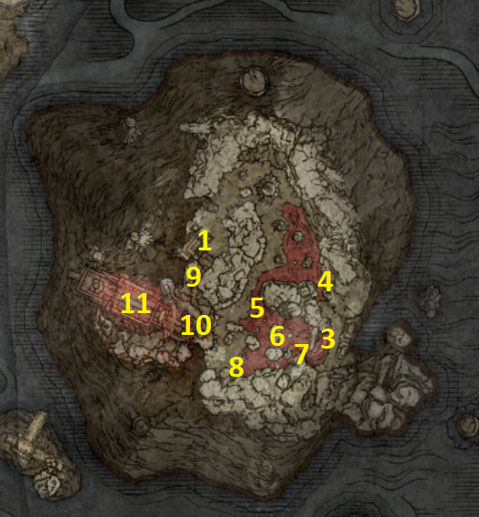
PSN karta #1–#11 • War Surgeon Set • Varré finale • Mohg, Lord of Blood
Mohgwyn Palace je posljednja velika underground regija naše rute. Imamo oba pristupa: Pureblood Knight's Medal iz Varré questlinea i krvavi waygate u Consecrated Snowfieldu. Za ovu rutu prvo koristimo Medal radi praktičnog pristupa mapi, a zatim Snowfield waygate za Palace Approach Ledge-Road. Brojevi ispod prate kartu #1–#11.
1Mohgwyn Palace Map0/1
U Mohgwyn Palace možeš ući na DVA načina: upotrijebi Pureblood Knight's Medal ako si dovršio Varréov quest, ILI koristi krvavi waygate u zapadnom Consecrated Snowfieldu (kod područja Sanguine Noble invazije). Medal nije obavezna za ulazak niti za dovršetak ove PSN rute. Nakon dolaska aktiviraj dostupni Site of Grace, nastavi prema map fragmentu na corpseu i pokupi Map: Mohgwyn Palace.
POKUPI / ODRADI: Map: Mohgwyn Palace
Zapadno od područja Sanguine Noble invasiona nalazi se krvavi waygate koji čuva Albinauric. On vodi u Mohgwyn Palace. Alternativno već imamo Pureblood Knight's Medal od Varréa. Prema našoj ruti prvo idemo u Mohgwyn Palace, a tek zatim kroz Ordininu aktiviranu waygate prema Haligtreeu.
Nakon što si otkrio Mohgwyn Palace, vrati se u Roundtable Hold i razgovaraj s Gideonom. Iscrpi novi dijalog vezan uz Mohgwyn Dynasty/Mausoleum i uzmi Fevor's Cookbook [3].
2Palace Approach Ledge-Road Site of Grace0/1
Ako si u CH22 #1 ušao preko Pureblood Knight's Medal, već si u Mohgwyn Palaceu: nastavi prema istočnom dijelu regije do Palace Approach Ledge-Road Site of Grace. Ako još nisi koristio krvavi waygate, možeš alternativno doći iz zapadnog Consecrated Snowfielda (blizu Sanguine Noble invazije); portal te dovodi blizu te Grace. Ne moraš koristiti oba ulaza. Aktiviraj Palace Approach Ledge-Road Site of Grace.
3Ash of War: Blood Tax0/1
Od Palace Approach Ledge-Road kreni sjeverno niz područje s Albinaurics. Drži se desne strane i kroz bloody river pronađi cave. Unutra ubij scarab.
POKUPI / ODRADI: Ash of War: Blood Tax
4Swarm of Flies0/1
Nastavi malo sjevernije do sljedeće cave uz krvavu močvaru. Pokupi Incantation s corpse-a unutra.
POKUPI / ODRADI: Swarm of Flies
5Nameless White Mask invasions — War Surgeon Set0/1
Umjesto prema palači nastavi bloody riverom zapadno u veliko krvavo jezero. U različitim dijelovima jezera napast će te ukupno 3 Nameless White Mask invadera, jedan po jedan. Prije prvog invasiona očisti okolne Albinaurics i, ako giant bird smeta, povuci invadera prema sigurnijem terenu. War Surgeon Set dobivaš kao drop od jednog od invadera; pokupi ga odmah nakon pobjede. Za potpuno očišćenu rutu porazi sva tri invadera prije Mohga.
POKUPI / ODRADI: War Surgeon Set
BOSS / EVENT: 3× Nameless White Mask
Prije nego ubiješ Mohg, Lord of Blood, odradi invazije Nameless White Mask u krvavom jezeru i preuzmi War Surgeon Set. Pobjeda nad Mohgom onemogućuje te invazije; set se tada može trajno propustiti u ovom prolasku. Varréova zasebna invazija kod Dynasty Mausoleum Midpoint nije zamjena za ove invadere.
6Golden Seed — bloody lake island0/1
Na otočiću približno u sredini bloody lakea pronađi gold tree i pokupi Golden Seed.
POKUPI / ODRADI: Golden Seed
7Nomadic Warrior's Cookbook [24]0/1
Idi prema jugoistočnom rubu bloody lakea, uz cliff. Na corpse-u pokupi Cookbook.
POKUPI / ODRADI: Nomadic Warrior's Cookbook [24]
8Haligdrake Talisman +20/1
Iz jezera idi prema jugozapadu u graveyard dio uz rub područja. Pokupi talisman s corpse-a.
POKUPI / ODRADI: Haligdrake Talisman +2
9Mohgwyn Dynasty Mausoleum — uspon i tunnel loot0/1
Vrati se prema zapadnom dijelu regije i kreni usponom prema Mohgwyn Dynasty Mausoleum. Temeljito očisti put. Na ruti pokupi Lord's Rune; u mračnom tunnelu uzmi Great Ghost Glovewort, Numen's Rune i Stonesword Key. U tunnelu je i merchant — drži se lijevog zida dok ga ne pronađeš; prodaje Lost Ashes of War.
POKUPI / ODRADI: Lord's Rune • Great Ghost Glovewort • Numen's Rune • Stonesword Key • Merchant: Lost Ashes of War
10Dynasty Mausoleum Midpoint — Varré finale0/1
Aktiviraj Dynasty Mausoleum Midpoint Site of Grace. Zatim se vrati nekoliko koraka prema tunnelu i pronađi Varréov red invasion sign. Invadeaj njegov svijet i porazi ga. Nakon povratka u svoj svijet pronađi teško ranjenog Varréa na tlu blizu njegova crvenog invasion signa. Obavezno razgovaraj s njim i iscrpi završni dijalog: tek tada dobivaš Varré's Bouquet. Samo pobjeda u invaziji nije dovoljan korak za preuzimanje oružja.
POKUPI / ODRADI: Varré's Bouquet
BOSS / EVENT: White Mask Varré
Ovim završavamo Varré questline. Pureblood Knight's Medal i Bloody Finger već smo dobili ranije; ovdje uzimamo njegov završni unique weapon Varré's Bouquet.
11Somber Ancient Dragon Smithing Stone + Mohg, Lord of Blood0/1
Od Midpoint Gracea nastavi prema boss areni. Prije ulaza, kod statue s Albinaurics koji joj se klanjaju, pokupi Somber Ancient Dragon Smithing Stone. Tek nakon što si sigurno završio sva tri White Mask invasiona iz #5, uđi u arenu. Za Mohgov Nihil prijelaz koristi Purifying Crystal Tear koji smo ranije dobili od Eleonore. Porazi Mohg, Lord of Blood.
POKUPI / ODRADI: Somber Ancient Dragon Smithing Stone • Mohg's Great Rune • Remembrance of the Blood Lord
BOSS / EVENT: Mohg, Lord of Blood
Mohgwyn Palace — checkpoint
• Map: Mohgwyn Palace uzet
• Gideon: Fevor's Cookbook [3] uzet
• Blood Tax i Swarm of Flies uzeti
• Sva 3 Nameless White Mask invasiona završena PRIJE Mohga
• War Surgeon Set dobiven
• Golden Seed, Cookbook [24] i Haligdrake Talisman +2 uzeti
• Great Ghost Glovewort i tunnel loot uzeti
• Varré invasion završen i Varré's Bouquet dobiven
• Somber Ancient Dragon Smithing Stone uzet
• Mohg, Lord of Blood poražen
• Gideon: Law of Causality uzet
• Mohg's Great Rune aktiviran u Divine Tower of East Altus
Kod Enije zamijeni Remembrance of the Blood Lord za Mohgwyn's Sacred Spear ILI Bloodboon; za oba dupliciraj Remembrance u odgovarajućem Walking Mausoleumu. Enia također prodaje Lord of Blood's Robe. Nakon pobjede nad Mohgom, dok je Gideon još dostupan u Roundtable Holdu, razgovaraj s njim o Mohgwyn Dynasty i preuzmi Law of Causality. Ne ostavljaj ovu nagradu za razdoblje nakon završnog napredovanja glavne priče.
Fast travel do Divine Tower of East Altus, popni se na vrh i aktiviraj Mohg's Great Rune. Isti Divine Tower koristi se i za Morgott's Great Rune, ali aktivacije su zasebne.
CHAPTER 23 — MIQUELLA'S HALIGTREE & ELPHAEL 0/6
Master Guide V30 · PART 23 · 6 numeriranih ruta. Oznake se spremaju samo u Walkthroughu.
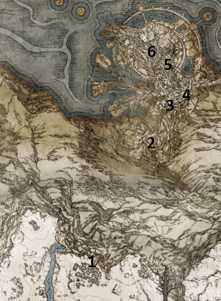
PSN karta #1–#6 • Millicent finale • Malenia • Dung Eater finale • Malenia's Great Rune
1Ordina waygate → Miquella's Haligtree0/1
Vrati se u Ordina, Liturgical Town. Nakon što su sve 4 candles upaljene, popni se do sjevernog waygatea i koristi ga. Teleportiraš se na početnu branch platformu Miquella's Haligtreea.
Ovo je jedan od najtežih dijelova base gamea. Prije ulaska preporuka je maksimalno nadograditi glavno oružje (+25 normalno / +10 somber), imati ozbiljan Vigor i pripremljen build. Najvažnije: u ovom dijelu NE smijemo pogrešno završiti Millicent quest jer nam treba Unalloyed Gold Needle.
Čim otkriješ Miquella's Haligtree, možeš se vratiti u Roundtable Hold i razgovarati s Gideonom. Iscrpi novi dijalog za Black Flame's Protection.
2Haligtree Canopy — branches i ključni loot0/1
Od početka se okreni natrag i pažljivo dođi do corpse-a sa Stonesword Keyem. Zatim se vrati i prati branches prema 'main branchu' po kojem hodaju giant ants. Prvo idi suprotno od giant treea do kraja grane: Giant Oracle Envoy čuva Envoy Crown. Vrati se prema giant treeu; na lijevoj grani s Envoys, iza tri neprijatelja, pokupi Prattling Pate (My Beloved). Kad dođeš do dijela gdje Giant Envoy puca holy bubbles preko rotten flowers, pogledaj desno i pažljivo se spusti na nižu branch rutu. Dođi do Envoya, nastavi malo dalje i kod sljedećeg Giant Envoya pokupi Oracle Envoy Ashes. Nastavi do Haligtree Town Site of Grace.
POKUPI / ODRADI: Stonesword Key • Envoy Crown • Prattling Pate (My Beloved) • Oracle Envoy Ashes
3Haligtree Town → Loretta0/1
Od Haligtree Town Gracea kreni naprijed i popni prvi ladder. Na vrhu napravi running jump na susjednu platformu. Lion Misbegotten čuva Pearldrake Talisman +2. Nastavi kroz town; sljedeći Lion Misbegotten čuva Ancient Dragon Smithing Stone. Aktiviraj Haligtree Town Plaza Site of Grace. Preko rooftops dođi do krova s 3 Spirit-Caller Snails koji summonaju Crystalians; u buildingu ispod pokupi Viridian Amber Medallion +2. Kod dijela s dva Battlemages aktiviraj elevator shortcut prema ranijem Graceu. Na kraju porazi Loretta, Knight of the Haligtree.
POKUPI / ODRADI: Pearldrake Talisman +2 • Ancient Dragon Smithing Stone • Viridian Amber Medallion +2 • Loretta's War Sickle • Loretta's Mastery
BOSS / EVENT: Loretta, Knight of the Haligtree
Prvi Ancient Dragon Smithing Stone već si pokupio kod Lion Misbegottena u Haligtree Townu (gornja kvačica). Nakon pobjede nad Lorettom, iza arene spusti se ladderom; prije glavnog elevatora prema Elphaelu popni se stepenicama u zgradu i otvori škrinju s DRUGIM Ancient Dragon Smithing Stoneom. Oba su zasebni pickupovi — provjeri oba prije nastavka u CH23 #4. Enia u Roundtable Hold prodaje Royal Knight Set (opcionalna kupnja).
4Elphael, Brace of the Haligtree — Prayer Room i gornji loot0/1
Kod Prayer Room Site of Grace razgovaraj s Millicent do ponavljanja dijaloga. Ovo je njezina postaja nakon Ancient Snow Valley Ruins (CH20 #10). Prije završnog izbora u CH23 #5 provjeri da je ovdje razgovor obavljen. Povezani korak.
Spusti se u Elphael i aktiviraj Prayer Room Site of Grace. Millicent je ovdje — iscrpi cijeli dijalog. Na sljedećem walkwayu preskoči prvi lijevi ulaz i uđi u drugi room; popni stairs i skoči na tree branch. Prati ga do towera po Miquellan Knight's Sword. Spusti ladder iz towera i prijeđi na sljedeći walkway: Putrid Avatar daje Rotten Staff, a na istoj ruti pokupi Somber Ancient Dragon Smithing Stone.
POKUPI / ODRADI: Miquellan Knight's Sword • Rotten Staff • Somber Ancient Dragon Smithing Stone
Vrati se na glavni walkway nakon Prayer Rooma. Kad dođeš do račvanja stepenica gore/dolje, idi dolje, pa još jednom dolje. Prije rooma s dva Cleanrot Knights okreni se i prijeđi ledge do sealed door-a; koristi 1 Stonesword Key i pokupi Triple Rings of Light. Vrati se pred room s dva Cleanrot Knights i preskoči desnu ogradu na support beam; pažljivo se spusti u dark building po Seedbed Curse.
POKUPI / ODRADI: Triple Rings of Light • Seedbed Curse
Ponovno se vrati do glavnog stair junctiona. Spusti se jedan set stepenica, zatim na support beam ispod i na platformu s gazebo-om i flying scarabom. U maloj sobi chest čuva Cleanrot Knight: unutra su Cleanrot Knight Finlay Ashes, Legendary Ashen Remains. Od gazebo-a skoči na sljedeći support beam i prati ga do vrha; u alcoveu chest sadrži drugi Somber Ancient Dragon Smithing Stone. Na ledgeu odmah vani je još jedan, završni Seedbed Curse.
POKUPI / ODRADI: Cleanrot Knight Finlay Ashes • Somber Ancient Dragon Smithing Stone • Seedbed Curse
S ledgea prijeđi na tree branch, spusti se niže i preko idućeg support beama do rotten-flower platforme. Padni na staircase ispod i idi gore do dvije balliste po Haligtree Soldier Ashes. Room ispod rotten-flower platforme ima dva Cleanrot Knights; izađi na ledge i ladderom se spusti na najnižu dugu ulicu s Revenants. U lijevom alcoveu je Lord's Rune. Na kraju ulice potroši 2 Stonesword Keys na mist gate i pokupi Legendary Talisman Marika's Soreseal.
POKUPI / ODRADI: Haligtree Soldier Ashes • Lord's Rune • Marika's Soreseal — Legendary Talisman
Millicent mora biti u Prayer Roomu i dijalog mora biti iscrpljen prije njezina završnog događaja kod Drainage Channela. Ne napadaj je.
ELPHAEL — DVIJE ODVOJENE PUTANJE (CH23 #4): Prvi Seedbed Curse: od Prayer Room Site of Grace nastavi glavnim prolazom do stepenica i prostorije s dva Cleanrot Knights. Prije ulaska u prostoriju spusti se preko desne ograde na support beam, pa u tamnu prostoriju ispod; pretraži tijelo s predmetom. Drugi Seedbed Curse: vrati se do glavnog račvanja stepenica; spusti se prema support beamu i platformi s gazebo-om / flying scarabom. Od gazebo-a prijeđi na idući support beam, prati ga do alcovea s chestom za Somber Ancient Dragon Smithing Stone; na vanjskom ledgeu potraži drugo tijelo sa Seedbed Curse. STOP: provjeri oba zasebna loota prije nastavka prema Drainage Channelu. Ovo su putne upute iz postojećeg CH23 #4, ne dodatne PSN točke.
Na ovoj ruti četiri Seedbed Curses dolaze PRIJE Elphaela: #1 Volcano Manor (CH17 #26), #2 Leyndell Lower Capital (CH18 #22), #3 Fortified Manor (CH18 #26) i #4 Blackguard Big Boggart / outer moat (CH18 #29). Provjeri stvarni broj u inventaru: ako si propustio neki od tih predmeta, za završetak i dalje može biti dovoljno pet od ukupno šest. U Elphaelu pronađi #5 i #6 Seedbed Curse (CH23 #4, dva zasebna mjesta na ruti). Ukupan broj dostupnih predmeta u osnovnoj igri je šest. Za Dung Eaterov standardni završetak potrebno je predati pet Seedbed Curses njegovu fizičkom tijelu u Subterranean Shunning-Grounds. Šesti je rezervni i nije uvjet.
POVRATAK: nakon što pokupiš dovoljno Seedbed Curses, fast travel do Underground Roadside, pronađi Dung Eatera u otključanoj ćeliji i predaj ukupno pet. Nakon dovršetka interakcije preuzmi Mending Rune of the Fell Curse. Ako se mogućnost predaje ne pojavi, provjeri jesu li završeni njegovo oslobađanje, moat invasion i povratni razgovor u Roundtable Holdu. Nemoj ga ubiti niti mu davati Seluvis's Potion ako želiš ovu ending rutu.
STOP PRIJE MALIKETHA: potvrdi da je Mending Rune of the Fell Curse u inventaru; dodatni Seedbed Curse nije potreban za trofej završetka. Ovaj NPC checkpoint nije novi PSN broj.
5Elphael Inner Wall → Drainage Channel → Millicent finale0/1
Vrati se prema platformi ispod Haligtree Soldier Ashes. Putrid Avatar ispod daje Lord's Rune; iza njega je Elphael Inner Wall Site of Grace. Kod Gracea ladder vodi do Haligtree Knight Helm. U sljedećem roomu iza large root-a tri Crystalians čuvaju Rotten Crystal Sword. Pretrči rotten lake, uđi u tunnel i aktiviraj Drainage Channel Site of Grace. Vrati se prema ulazu u tunnel, popni najbliži hill i prijeđi gap na tree branch. Spusti se na malu rot lake platformu; pokupi Great Grave Glovewort i porazi Ulcerated Tree Spirit.
Nakon Ulcerated Tree Spirita pojave se dva znaka: GOLD (Assist Millicent) daje Rotten Winged Sword Insignia i omogućuje preuzimanje Unalloyed Gold Needle nakon razgovora i reloada. RED (Challenge Millicent) daje Millicent’s Prosthesis, ali ne daje završni needle potreban za Miquella’s Needle. U ovom Master Guideu biramo GOLD. Za obje nagrade u jednoj kolekciji potreban je dodatni prolazak ili razmjena gdje je moguća; nemoj računati da oba talismana dobivaš iz iste grane.
POKUPI / ODRADI: Lord's Rune • Haligtree Knight Helm • Rotten Crystal Sword • Great Grave Glovewort • Golden Seed
BOSS / EVENT: Ulcerated Tree Spirit
Nakon Ulcerated Tree Spirita pojavit će se dva summon signa. Za naš Master Guide obavezno odaberi GOLD sign i pomozi Millicent protiv Millicent's Four Sisters. NE odabiri red invasion sign. Pobjeda daje Rotten Winged Sword Insignia i omogućuje dobivanje Unalloyed Gold Needle, koji nam je potreban za Miquella's Needle i eventualno uklanjanje Frenzied Flamea.
Nakon borbe razgovaraj s Millicent na platformi. Iscrpi dijalog, zatim reload/rest. Vrati se na njezino mjesto i pokupi Unalloyed Gold Needle. Nemoj je slučajno ubiti skokom ili napadom nakon borbe. Time je Millicent quest završen.
6Malenia route — Dragoncrest Greatshield → Malenia0/1
Od Drainage Channel Gracea popni tree root i nastavi sjeverno do krova buildinga. Spusti se kroz otvor na wooden beams, zatim na gornju unutarnju razinu. Chest sadrži Dragoncrest Greatshield Talisman. Izađi i skreni lijevo; na kraju enemy-heavy rute pokupi Ghost-Glovewort Picker's Bell Bearing [3]. Vrati se u building i elevatorom siđi do Haligtree Roots Site of Grace. U side roomu prije boss arene pokupi Traveler's Set. Zatim uđi u arenu i porazi Malenia.
Nakon pobjede nad Malenijom dobivaš Malenia’s Great Rune, ali ona još nije aktivirana. Za aktivaciju se vrati na Divine Bridge u Leyndellu (preko Tower of Return teleport škrinje u Weeping Peninsuli ako je potrebno), prođi kroz portal do Isolated Divine Tower i aktiviraj runu na vrhu. Ovaj povratak nije uvjet za nastavak PSN koraka niti za Platinum: nemoj ga tretirati kao obaveznu kvačicu.
Nakon pobjede nad Malenijom upotrijebi Unalloyed Gold Needle na scarlet floweru u njezinoj areni: dobivaš Miquella’s Needle i Somber Ancient Dragon Smithing Stone. Needle služi za uklanjanje naslijeđenog Frenzied Flamea samo u areni Dragonlord Placidusaxa u Crumbling Farum Azuli (može se upotrijebiti i bez pobjede nad bossom). Ako želiš zadržati Lord of Frenzied Flame završetak za save-backup, ne koristi ga prije planiranog završnog odabira.
POKUPI / ODRADI: Dragoncrest Greatshield Talisman — Legendary Talisman • Ghost-Glovewort Picker's Bell Bearing [3] • Traveler's Set • Malenia's Great Rune • Remembrance of the Rot Goddess
BOSS / EVENT: Malenia, Blade of Miquella / Goddess of Rot
Miquella's Haligtree / Elphael — checkpoint
• Gideon: Black Flame's Protection uzet
• Envoy Crown, Prattling Pate (My Beloved) i Oracle Envoy Ashes uzeti
• Loretta poražena; oba Ancient Dragon Smithing Stonea u Haligtree Town dijelu uzeta
• Millicent razgovor u Prayer Roomu odrađen
• 2× Somber Ancient Dragon Smithing Stone u Elphaelu uzeta
• Oba Elphael Seedbed Curses uzeta
• Cleanrot Knight Finlay Ashes uzet
• Marika's Soreseal uzet
• Ulcerated Tree Spirit poražen
• Millicent: GOLD summon sign odabran; Rotten Winged Sword Insignia + Unalloyed Gold Needle dobiveni
• Dragoncrest Greatshield Talisman uzet
• Ghost-Glovewort Picker's Bell Bearing [3] uzet
• Malenia poražena
• Miquella's Needle + Somber Ancient Dragon Smithing Stone dobiveni
• Gideon: Lord's Divine Fortification uzet
• Dung Eater: Mending Rune of the Fell Curse + Omen Set dobiveni
• Malenia's Great Rune aktivirana
• Gowry cleanup odrađen
Nakon pobjede reload/rest ako je potrebno da se u areni pojavi veliki scarlet flower. Interactaj s flowerom koristeći Unalloyed Gold Needle. Dobivaš Miquella's Needle i Somber Ancient Dragon Smithing Stone. Miquella's Needle se NE koristi ovdje — može ukloniti Frenzied Flame samo na posebnom mjestu u Crumbling Farum Azula.
Kod Enije zamijeni Remembrance of the Rot Goddess za Hand of Malenia ili Scarlet Aeonia; za oba koristi Remembrance duplication. Enia prodaje Malenia's Set. Razgovaraj s Gideonom nakon Malenije i iscrpi njegov novi dijalog za Lord's Divine Fortification.
Nakon dva Seedbed Curses iz Elphaela ukupno je dostupno šest (Volcano Manor 1 + Leyndell 2 + Boggart 1 + Elphael 2). Vrati se u Subterranean Shunning-Grounds i predaj Dung Eaterovu fizičkom tijelu onoliko koliko još treba da ukupno primi pet; ne moraš predati svih šest. Kada ukupno primi potrebnih 5 Seedbed Curses, dobivaš Mending Rune of the Fell Curse. Reload područje i pokupi Omen Set. Na našoj ruti Seluvis' Potion je ranije predan Gideonu, pa Dung Eater puppet opcija nije blokirala ovaj završetak.
Fast travel do Divine Bridge Site of Grace u Leyndellu. Do njega se može i Fortified Manor elevatorom. Koristi aktivirani waygate prema Isolated Divine Tower, popni se na vrh i aktiviraj Malenia's Great Rune.
NAKON CH23 #5 (GOLD / Assist Millicent): vrati se u Gowry’s Shack u Caelidu. Prvo iscrpi Gowryjev završni dijalog o Millicent. Ako želiš njegov završni loot, tek nakon razgovora provjeri Gowryja i pokupi Flock’s Canvas Talisman i Gowry’s Bell Bearing. U ovoj grani Gowry može ostati živ nakon prvog udarca; ako se to dogodi, ponovno učitaj područje i provjeri stanje prije zaključka da je predmet propušten.
STOP — NE MIJEŠATI GRANE: u našem vodiču odabran je GOLD znak, pa je Rotten Winged Sword Insignia dobiven, a Unalloyed Gold Needle sačuvan za Malenijin cvijet. RED / Challenge Millicent daje Millicent’s Prosthesis i drugačiji završetak; nije dio ove rute. Prije odlaska provjeri Flock’s Canvas Talisman u inventaru, a ne samo dijalog.
CHAPTER 24 — MOUNTAINTOPS OF THE GIANTS (EAST) 0/17
Master Guide V30 · PART 24 · 17 numeriranih ruta. Oznake se spremaju samo u Walkthroughu.
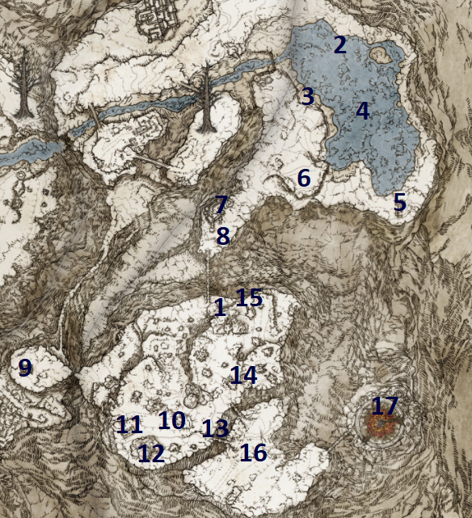
PSN karta #1–#17 • Fire Giant • Forge of the Giants • zadnji cleanup prije Farum Azula
1Map: Mountaintops of the Giants, East0/1
Od Freezing Lake Site of Grace jaši Torrentom prema jugu, zatim prati cestu prema zapadu i ponovno jugu. Prijeđi golemi chain preko provalije. Odmah s druge strane pronađi map pillar i uzmi fragment.
POKUPI / ODRADI: Map: Mountaintops of the Giants, East
2Ash of War: Seppuku0/1
Vrati se prema Freezing Lakeu. Istočno od Gracea pronađi invisible scarab koji kruži oko stabla; prati njegove tragove i presijeci mu put.
POKUPI / ODRADI: Ash of War: Seppuku
3Spiritcaller Cave0/1
Na zapadnoj strani frozen lakea otključaj cave s 2 Stonesword Keys. Temeljito prođi dungeon po Hero’s Rune i White Reed Set. Na kraju slijede uzastopne borbe Godskin Apostle → Godskin Noble → Spirit-Caller Snail.
POKUPI / ODRADI: Hero’s Rune • White Reed Set • Black Flame Ritual • Godskin Swaddling Cloth
BOSS / EVENT: Godskin Apostle + Godskin Noble + Spirit-Caller Snail
4Borealis the Freezing Fog0/1
U sredini frozen lakea aktiviraj Borealisa i porazi ga. Pobjeda daje Dragon Heart i otključava Borealis’ Mist za kupnju u Cathedral of Dragon Communion.
POKUPI / ODRADI: Dragon Heart • Borealis’ Mist — unlock
BOSS / EVENT: Borealis the Freezing Fog
5First Church of Marika0/1
Na jugoistočnoj strani frozen lakea uđi u First Church of Marika. U crkvi uzmi Sacred Tear, a na corpseu neposredno izvan crkve Somberstone Miner’s Bell Bearing [3]. Predaj ga Twin Maiden Husks za Somber Smithing Stone [5] i [6].
POKUPI / ODRADI: Sacred Tear • Somberstone Miner’s Bell Bearing [3]
6Lord Contender's Evergaol0/1
Na povišenom području jugozapadno od jezera uđi u evergaol i porazi Roundtable Knight Vyke.
POKUPI / ODRADI: Vyke's Dragonbolt • Fingerprint Set
BOSS / EVENT: Roundtable Knight Vyke
7Guardians' Garrison0/1
Zapadno od evergaola, prije velikog chaina, očisti Guardians’ Garrison. Na vrhu porazi Chief Guardian Arghanthy. Pokupi Stonesword Key i Giant’s Prayerbook.
POKUPI / ODRADI: One-Eyed Shield • Stonesword Key • Giant’s Prayerbook
BOSS / EVENT: Chief Guardian Arghanthy
8Ash of War: Prelate's Charge0/1
Malo južno od Guardians’ Garrison pronađi scarab na stablu i ubij ga.
POKUPI / ODRADI: Ash of War: Prelate's Charge
9Giant-Conquering Hero's Grave0/1
Od map pillar-a idi zapadno i prijeđi prema Mountaintops West na ranije nedostupan cliff. U dungeonu koristi 1 Stonesword Key za Flame, Protect Me. Neprijatelje koji su imuni navodi na svjetlosne sealove da postanu ranjivi. Nakon prvog fire pillar-a uz stepenice koristi još 1 Stonesword Key za Cranial Vessel Candlestand. Giant Trolla navedi na aktivni light seal; za aktivaciju pošalji elevator dolje i brzo siđi s njega. Prije bossa spusti se s bridgea kojim je hodao Troll po Giant’s Seal i Great Grave Glovewort. Na kraju porazi Ancient Hero of Zamor.
POKUPI / ODRADI: Flame, Protect Me • Cranial Vessel Candlestand • Giant’s Seal • Great Grave Glovewort • Zamor Set • Zamor Curved Sword
BOSS / EVENT: Ancient Hero of Zamor
10Bloody Finger Okina0/1
🛑 MISSABLE — Bloody Finger Okina: pri prilasku Church of Repose aktivira se NPC invazija. Porazi Okinu i preuzmi Rivers of Blood i Okina Mask prije pobjede nad Fire Giantom; nakon poraza područnog bossa invazija se može prestati pojavljivati. Ako invazija ne krene, provjeri jesi li već porazio Okinu ili Fire Gianta. Ovaj STOP odnosi se na Fire Gianta, a ne na kasniju Forge cutscene.
POKUPI / ODRADI: Rivers of Blood • Okina Mask
BOSS / EVENT: Bloody Finger Okina
11Church of Repose0/1
Zapadno od Okina invasion područja uđi u Church of Repose i uzmi Sacred Tear.
POKUPI / ODRADI: Sacred Tear
12Troll's Roar + Ancient Dragon Smithing Stone0/1
Jugoistočno od Church of Repose upotrijebi Spiritspring da dođeš na stijene. Kod giant skull-a uzmi Ash of War: Troll’s Roar, a u ustima lubanje Ancient Dragon Smithing Stone.
POKUPI / ODRADI: Ash of War: Troll's Roar • Ancient Dragon Smithing Stone
13Foot of the Forge Site of Grace0/1
Kreni istočno i aktiviraj Foot of the Forge Site of Grace. Ovo je glavni checkpoint prije Fire Gianta.
14Golden Seed0/1
Od Foot of the Forge kreni sjeverno, zatim istočno gornjom rutom. Ispod golden treea pokupi Golden Seed.
POKUPI / ODRADI: Golden Seed
15Crimsonwhorl Bubbletear0/1
Nastavi do krajnjeg sjevera povišenog područja. Prođi stazu punu giant hand neprijatelja i na kraju pokupi tear.
POKUPI / ODRADI: Crimsonwhorl Bubbletear
16Fire Giant0/1
Vrati se na Foot of the Forge i kreni istočno preko chaina u boss arenu. Porazi Fire Gianta. Nakon pobjede dobivaš Remembrance of the Fire Giant.
POKUPI / ODRADI: Remembrance of the Fire Giant
BOSS / EVENT: Fire Giant
17Forge of the Giants — story transition0/1
Nakon Fire Gianta prijeđi prema Forge of the Giants, popni se na rub goleme kovačnice i aktiviraj Forge of the Giants Site of Grace. NEMOJ odmah pokretati završni razgovor/cutscene dok ne prođeš STOP checklist ispod.
Mountaintops of the Giants (East) — checkpoint prije Forge cutscenea
• East map fragment uzet
• Seppuku uzet
• Spiritcaller Cave potpuno očišćen
• Borealis poražen; Borealis’ Mist otključan
• Somberstone Miner’s Bell Bearing [3] uzet/predan
• Roundtable Knight Vyke poražen
• Giant’s Prayerbook uzet
• Giant-Conquering Hero’s Grave potpuno očišćen
• Bloody Finger Okina poražen; Rivers of Blood uzet
• Oba Sacred Teara u ovom dijelu uzeta
• Ancient Dragon Smithing Stone iz giant skull-a uzet
• Crimsonwhorl Bubbletear uzet
• Fire Giant poražen
• Corhyn/Goldmask Mountaintops korak potvrđen
• Leyndell missable cleanup potvrđen
• Frenzied Flame još NIJE naslijeđen
• Forge of the Giants Site of Grace aktiviran — spremno za Melina cutscene
Ovaj dio završava paljenjem Erdtreea i prijenosom u Crumbling Farum Azula. Prije završne interakcije na Forge of the Giants dovrši dolje označene NPC korake i sav missable Leyndell sadržaj. Na našoj ruti Frenzied Flame još NE nasljeđujemo prije cutscenea.
Predaj Giant’s Prayerbook Mirielu ili Corhynu za Giantsflame Take Thee i Flame, Fall Upon Them. Za sigurnu dostupnost spellova Miriel je najjednostavniji trajni izbor.
U Roundtable Holdu Remembrance of the Fire Giant možeš zamijeniti za Giant’s Red Braid ili Burn, O Flame! Ako želiš oba, dupliciraj Remembrance u odgovarajućem Walking Mausoleumu.
Njihov Leyndell korak s Law of Regression i kasniji razgovor na bridgeu u Mountaintops moraju biti odrađeni. Ako su ostavljeni nedovršeni, napredovanje world statea može prekinuti quest. Na našoj ruti ti koraci su već uključeni — ovdje samo potvrdi da su odrađeni.
Prije završetka Crumbling Farum Azula Leyndell će se dramatično promijeniti. Posebno potvrdi da je Bolt of Gransax već uzet, Fortified Manor očišćen, Seedbed Curses uzeti i Bernahlov Leyndell assassination završen. Subterranean Shunning-Grounds i Leyndell Catacombs ostaju dostupni, ali gradski loot ne.
Naša ruta slijedi PSN odluku: NE nasljeđujemo Frenzied Flame prije Forge cutscenea. Na Graceu odaberi razgovor s Melinom i nastavi story; Melina pali Erdtree i igra te prebacuje u Crumbling Farum Azula. Frenzied Flame ćemo, radi achievement/ending rute, rješavati kasnije prema planu s Miquella’s Needle.
Nakon potvrde na Forge of the Giants dobivaš story achievement/trophy Erdtree Aflame i automatski prelaziš u Crumbling Farum Azula. Tu nastavljamo sljedeći dio Master Guidea.
Prije Forge cutscenea potvrdi CH20 #21 (Corhyn i Goldmask na mostu). Ključna promjena Leyndella nastupa nakon poraza Maliketha, ali nemoj računati da ćeš nedovršene NPC faze moći sigurno nadoknaditi poslije. Ovdje ne trebaš tražiti Mending Rune; ona se preuzima kasnije u Ashen Capital.
CHAPTER 25 — CRUMBLING FARUM AZULA 0/18
Master Guide V30 · PART 25 · 18 numeriranih ruta. Oznake se spremaju samo u Walkthroughu.
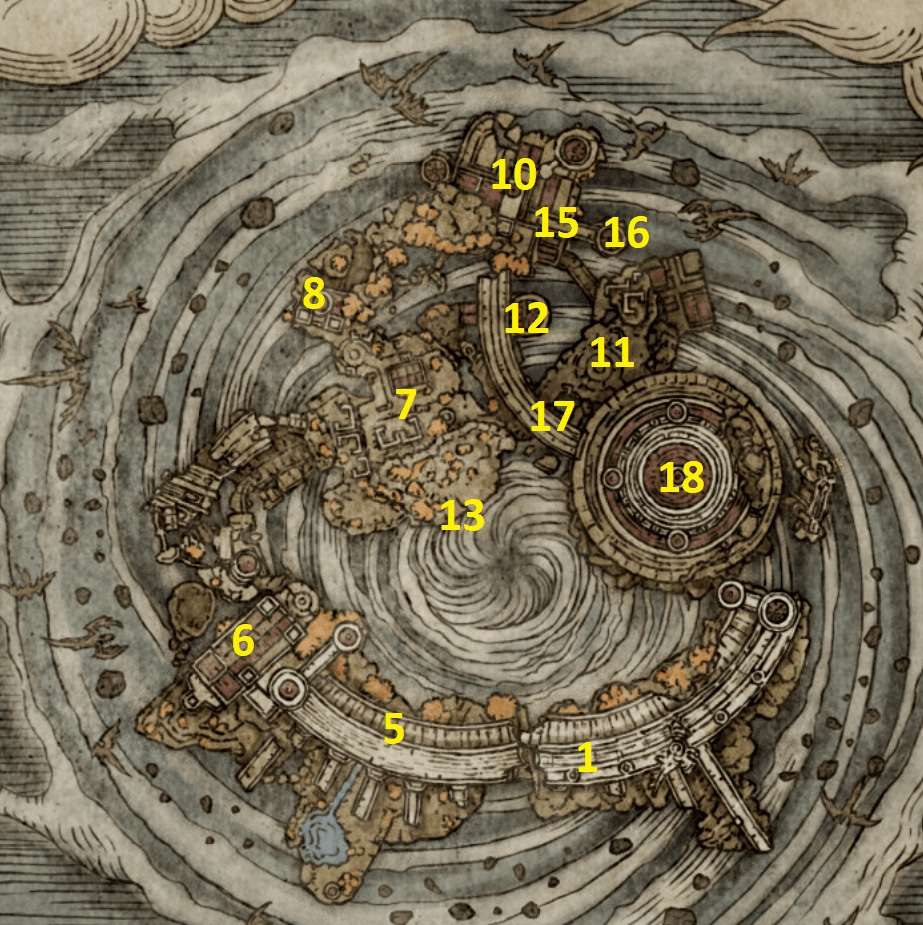
PSN karta #1–#18 • Alexander finale • Placidusax • Bernahl finale • Maliketh POINT OF NO RETURN
1Crumbling Beast Grave0/1
Nakon Forge of the Giants cutscenea stižeš u Crumbling Farum Azula. Prati jedinu sigurnu rutu preko ruševina i aktiviraj prvi Site of Grace: Crumbling Beast Grave.
2Ancient Dragon — prvi Farum Azula dragon0/1
Od Crumbling Beast Grave nastavi naprijed. Na otvorenoj platformi porazi prvog unnamed Ancient Dragona.
POKUPI / ODRADI: Ancient Dragon Smithing Stone
BOSS / EVENT: Ancient Dragon
3Crumbling Beast Grave Depths0/1
Od dragon platforme nastavi do Crumbling Beast Grave Depths Site of Grace. U sljedećem buildingu izađi kroz window i pažljivo prijeđi na roof pa se vrati kroz drugi window na gornju etažu.
POKUPI / ODRADI: Great Grave Glovewort • Ancient Dragon Prayerbook
4Lower side route — Glovewort Picker's Bell Bearing [3]0/1
Iz buildinga s Prayerbookom izađi na jugozapadnu stranu i elevatorom se spusti. Prati donju rutu do gazebo-a koji čuva veliki Wormface.
POKUPI / ODRADI: Glovewort Picker's Bell Bearing [3]
5Tempest-Facing Balcony0/1
Vrati se u building s Prayerbookom i izađi na suprotna vrata. Aktiviraj Tempest-Facing Balcony Site of Grace. Corpse uz Grace ima Bell Bearing za Somber +7/+8.
POKUPI / ODRADI: Somberstone Miner's Bell Bearing [4]
6Dragon Temple0/1
Preko lebdećih platformi i urušenih građevina nastavi do Dragon Temple Site of Grace. Aktiviraj ga prije istraživanja bočnih ruta.
7Dragon Temple — Stonesword Key0/1
Od Dragon Temple Gracea prođi kroz building među patrolama. Na istoj razini izađi na balcony gdje neprijatelj čuva ključ.
POKUPI / ODRADI: Stonesword Key
8Dragon Temple upper detour — Great Ghost Glovewort0/1
Vrati se na Dragon Temple Grace. Gledaj prema ruti kojom si došao i spusti se na stairs. Nemoj još skakati još niže; prati bočnu rutu, popni ladder i u buildingu pokupi item.
POKUPI / ODRADI: Great Ghost Glovewort
9Dragon Temple Transept → Godskin Duo0/1
Ponovno od Dragon Temple Gracea spusti se na stairs, ovaj put skoči još niže. Prođi building do prostorije s graves i dvije patrole; na jednom graveu su Azula Beastman Ashes. Nastavi do Dragon Temple Transept Site of Grace i zatim u boss arenu.
POKUPI / ODRADI: Azula Beastman Ashes • Ash of War: Black Flame Tornado • Smithing-Stone Miner's Bell Bearing [4]
BOSS / EVENT: Godskin Duo
10Dragon Temple Lift — Ancient Dragon Smithing Stone0/1
Nakon Godskin Duo nastavi kroz ruševine. Nakon skoka kroz window na platformu s dogs, u sljedećem buildingu idi na drugi kat. Preko floating column skoči na roof prethodnog buildinga i uzmi Ancient Dragon Smithing Stone. Zatim pronađi sealed mist gate, potroši 2 Stonesword Keys i dođi do Dragon Temple Lift Site of Grace.
POKUPI / ODRADI: Ancient Dragon Smithing Stone
11Dragon Temple Lift upper area — fountain, Golden Seed i spell scarab0/1
Od Dragon Temple Lift Gracea izađi u gornju zonu. U fountainu pokupi Lord's Rune, malo dalje Golden Seed. Prije prelaska preko vrhova columns na drugu stranu cliffa, spusti se pažljivo na donju razinu i ubij scarab.
POKUPI / ODRADI: Lord's Rune • Golden Seed • Golden Lightning Fortification
12Alexander — warrior jar finale0/1
Nakon završne borbe s Alexanderom u Crumbling Farum Azula pokupi Alexander's Innards i Shard of Alexander. Fast travel u Jarburg (CH5 #22); prvo dovrši dostupne razgovore i Diallosovu/Jar-Bairnovu fazu, zatim predaj Alexander's Innards Jar-Bairnu kada se pojavi odgovarajuća opcija. Odmori se / ponovno učitaj područje i pokupi Companion Jar talisman na mjestu gdje je Jar-Bairn sjedio. Ako opcija predaje još nije dostupna, ne odbacuj predmet: vrati se na Diallosov završni checkpoint (CH17 #22), iscrpi Jar-Bairnove razgovore i ponovno učitaj Jarburg. Companion Jar nije automatska nagrada za Alexanderov dvoboj — potrebno je predati Alexander's Innards i vratiti se na mjesto gdje je Jar-Bairn sjedio. Opcionalni NPC epilog: ako Jar-Bairn još ne nudi predaju, dovrši dostupne razgovore s njim i Diallosom te ponovno učitaj Jarburg. Companion Jar ne uvjetuje nastavak Farum Azule i nije ista nagrada kao Shard of Alexander.
Vrati se na gornju rutu, prijeđi cliff i nastavi se penjati. Pronaći ćeš Alexandera koji traži posljednji duel. Prihvati i porazi ga.
POKUPI / ODRADI: Shard of Alexander • Alexander's Innards
BOSS / EVENT: Iron Fist Alexander
13Ancient Dragon Apostle's Cookbook [4]0/1
Nakon Alexanderove platforme nastavi prema vrhu. U malom buildingu koji čuvaju dva skeleton/beastman neprijatelja pokupi Cookbook.
POKUPI / ODRADI: Ancient Dragon Apostle's Cookbook [4]
14Lower broken route — Dragoncrest Shield Talisman +20/1
Vrati se na Dragon Temple Lift Grace i siđi elevatorom. Na donjoj etaži prođi kroz vrata i kreni preko broken platforms. Pažljivo pregledaj corpse uz rutu.
POKUPI / ODRADI: Dragoncrest Shield Talisman +2
15Dragon Temple Rooftop0/1
Nastavi kroz uništene buildings. Prođi Crucible Knighta i preko roofs dođi do Dragon Temple Rooftop Site of Grace. Aktiviraj ga prije lightning zone.
16Rooftop dragon zone — kompletan loot0/1
Od Rooftop Gracea kreni kroz eagles. Nakon prvog laddera napravi oštar lijevi skok na floating rock pa na platformu ispod; u chestu je Drake Knight Set. Vrati se na glavnu rutu i porazi Ancient Dragona koji baca lightning. Iza njega u gazebo-u pokupi Somber Ancient Dragon Smithing Stone. S dragon platforme idi prema razini s koje su došli eagles za Golden Seed. Zatim se vrati i preko floating rocks uz cliff spusti do buildinga s Dragon Towershieldom. Elevatorom nastavi prema dijelu gdje Crucible Knight ratuje s Misbegottenima; ladder vodi do Boltdrake Talisman +2.
POKUPI / ODRADI: Drake Knight Set • Ancient Dragon Smithing Stone • Somber Ancient Dragon Smithing Stone • Golden Seed • Dragon Towershield • Boltdrake Talisman +2
BOSS / EVENT: Ancient Dragon
17Somberstone Miner's Bell Bearing [5] → Beside the Great Bridge0/1
Od dragon platforme idi uz slope i kroz building s Beastmenima. Pred altarom pokupi Bell Bearing koji otključava Somber Smithing Stone [9]. Elevator u istom buildingu vodi do Beside the Great Bridge Site of Grace.
POKUPI / ODRADI: Somberstone Miner's Bell Bearing [5]
18Dragonlord Placidusax / Bernahl / Old Lord's Talisman / Maliketh gate0/1
Provjeri da je Morgott poražen, da je Kenneth završio Fort Haight fazu i da je Nepheli dobila Stormhawk King. Vrati se u Stormveil Castle, Godrick the Grafted Site of Grace, te provjeri prijelaz u Throne Room (odmori se ili učitaj područje i iscrpi razgovore). Ako su Nepheli, Kenneth i Gostoc ondje, razgovaraj sa svima: Nepheli daje Ancient Dragon Smithing Stone, a Gostoc ga dodatno prodaje ako je živ. Ovaj checkpoint je sigurnosna preporuka za našu rutu, ne tvrdnja da Maliketh automatski trajno zaključava quest.
Od Beside the Great Bridge Gracea prvo elevatorom natrag dolje u Beastmen building. Izađi ravno prema cliffu i pogledaj ispod ruba; spusti se preko floating rocks do velike prazne platforme. Na označenom mjestu odaberi Lie down i bit ćeš prenesen u Placidusax arenu. Porazi Dragonlord Placidusaxa.
POKUPI / ODRADI: Remembrance of the Dragonlord
BOSS / EVENT: Dragonlord Placidusax
Vrati se na Beside the Great Bridge. Popni se na bridge, ali umjesto prema Maliketh mist gateu idi lijevo u building. Izađi na balcony, spusti ladder i prijeđi bridge prema toweru. Recusant Bernahl će invadeati.
POKUPI / ODRADI: Beast Champion Set • Blasphemous Claw • Devourer's Scepter — Legendary Armament
POKUPI / ODRADI: Old Lord's Talisman — Legendary Talisman
Vrati se na bridge prema boss gateu. Porazi Draconic Tree Sentinel ispred arene za Malformed Dragon Set. Zatim STANI prije ulaska u Maliketh fight i prođi završni checklist ispod.
POKUPI / ODRADI: Malformed Dragon Set
Kad je checklist čist, uđi u arenu. Prva faza je Beast Clergyman, zatim Maliketh, the Black Blade. Pobjeda automatski pokreće veliki world-state change i vodi u Leyndell, Ashen Capital.
BOSS / EVENT: Beast Clergyman → Maliketh, the Black Blade
NAGRADA: Remembrance of the Black Blade
Crumbling Farum Azula — checkpoint
• Crumbling Beast Grave aktiviran
• Nepheli/Kenneth/Gostoc finale provjeren prije Maliketha
• Ancient Dragon Smithing Stone od prvog dragona uzet
• Ancient Dragon Prayerbook i oba Glovewort/Bell Bearing side loota uzeti
• Godskin Duo poražen i Smithing-Stone Miner's Bell Bearing [4] uzet
• Dragon Temple Lift otvoren
• Alexander duel završen; Shard of Alexander + Alexander's Innards uzeti
• Jar-Bairn: Companion Jar uzet
• Dragoncrest Shield Talisman +2 uzet
• Drake Knight Set + Rooftop dragon upgrade stones uzeti
• Somberstone Miner's Bell Bearing [5] uzet
• Dragonlord Placidusax poražen
• Miquella's Needle NIJE korištena prije Endings dijela
• Bernahl poražen; Devourer's Scepter + Blasphemous Claw uzeti
• Old Lord's Talisman uzet
• Leyndell missables/farm provjeren prije Maliketha
• Maliketh poražen tek nakon završnog STOP checka
• Remembrance of the Black Blade dobiven
Goldmask / Corhyn: provjeri da su riješeni Law of Regression u Leyndellu (CH18 #27–28) i njihov razgovor na mostu u Mountaintops (CH20 #21). Mending Rune of Perfect Order pokupi tek poslije Maliketha u Ashen Capital (CH26 #5).
Dung Eater: ako želiš Mending Rune of the Fell Curse, dovrši njegovu putanju sa Seedbed Curses prije nepovratnih promjena i provjeri dostupnost potrebnih predmeta u starom Leyndellu. Bolt of Gransax mora biti pokupljen prije poraza Maliketha.
Nepheli / Kenneth / Gostoc: potvrdi finale u Stormveil throne roomu i nagrade (postojeći checkpoint niže). Bernahl: prije bossa potvrdi da je Farum Azula invazija završena i da su Devourer's Scepter te Blasphemous Claw u inventaru.
Napomena: ovaj STOP je dodatna kontrola prije bossa, ne novi numerirani PSN korak. Ne zamjenjuje ostale NPC napomene i popis predmeta u ovom koraku.
Poraz Maliketha trajno pretvara Leyndell, Royal Capital u Ashen Capital. Sve što je na površini starog Leyndella i nije pokupljeno može postati nedostupno. Subterranean Shunning-Grounds ostaje dostupan. Maliketha NE ubijamo dok ne završimo Bernahla, Leyndell missables i sve preostale NPC korake označene ispod.
Imamo Miquella's Needle jer smo pomogli Millicent. Ako želiš sve ending trofeje uz save-management, Frenzied Flame možeš naslijediti sada, ali Miquella's Needle NEMOJ koristiti nakon Placidusaxa dok ne dođemo do Endings dijela. Ako naslijediš Flame, razgovaraj s Hyettom do kraja za Frenzied Flame Seal. Jednom kad Needle ukloni Flame, Lord of Frenzied Flame ending više nije dostupan u tom playthroughu.
Ako Nepheli još nije preselila u Stormveil throne room: razgovaraj s Kennethom u Fort Haightu, zatim odmori kod Godrick the Grafted Gracea i uđi u throne room. Nepheli daje Ancient Dragon Smithing Stone; Gostoc, ako je živ, prodaje još jedan. Iscrpi dijalog svih troje prije Maliketha.
Prayerbook možeš predati Mirielu u Church of Vows (najsigurnije jer ostaje dostupan) za Ancient Dragons' Lightning Spear i Ancient Dragons' Lightning Strike.
Fast travel u Jarburg. Predaj Jar-Bairnu Alexander's Innards, iscrpi dijalog i reload/rest. Vrati se na njegovo mjesto i pokupi Companion Jar. Time završavaju Alexander/Jar-Bairn questovi.
Placidusax arena je jedino mjesto gdje Miquella's Needle može ukloniti Frenzied Flame. Ako ciljaš sve ending trofeje u jednom runu uz backup/save-management, sada je samo važno da arena ostane dostupna. Needle ćemo koristiti tek u Endings dijelu, nakon što osiguramo Lord of Frenzied Flame ending.
U Roundtable Hold možeš zamijeniti Remembrance of the Dragonlord za Dragon King's Cragblade ili Placidusax's Ruin. Za oba dupliciraj Remembrance u kompatibilnom Walking Mausoleumu.
Devourer's Scepter je jedan od Legendary Armaments. Nakon Bernahl invasiona uđi u tower iza njega i otvori chest s Old Lord's Talismanom; tri Beastmena u blizini glume da su mrtvi.
Prije pobjede nad Malikethom provjeri da je stari Leyndell očišćen, posebno Bolt of Gransax i ostali city-only loot. Ako želiš 100% collection, sada farmiraj i Duelist Set, Duelist Greataxe, Battle Hammer i Guardian Garb (Full Bloom), jer njihovi Leyndell neprijatelji nakon Maliketha nestaju. Također moraju biti završeni Corhyn/Goldmask koraci dostupni prije Ashen Capitala, Bernahl invasion i Nepheli/Kenneth/Gostoc finale. Tek tada uđi u arenu.
Gurranqov Deathroot quest u Bestial Sanctumu i Malikethov story encounter povezani su narativno, ali završetak svih Deathrootova ranije NE uklanja Maliketha iz Farum Azule.
Kod Enije Remembrance of the Black Blade mijenjaš za Maliketh's Black Blade ili Black Blade. Za oba koristi Remembrance duplication. Enia također prodaje Maliketh's Set. Sljedeća glavna sekcija je Leyndell, Ashen Capital.
CHAPTER 26 — LEYNDELL, ASHEN CAPITAL 0/9
Master Guide V30 · PART 26 · 9 numeriranih ruta. Oznake se spremaju samo u Walkthroughu.
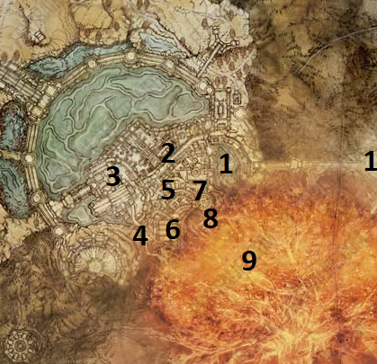
PSN karta #1–#9 • Goldmask/Corhyn finale • Gideon • Hoarah Loux • Radagon & Elden Beast
1Leyndell, Capital of Ash Site of Grace0/1
Nakon završetka Crumbling Farum Azula automatski se vraćaš u promijenjeni Leyndell. Aktiviraj Leyndell, Capital of Ash Site of Grace ispred sebe.
Nakon Maliketha Leyndell, Royal Capital trajno prelazi u Leyndell, Ashen Capital. Većina nadzemnog starog grada i njegovih itema/NPC lokacija više nije dostupna. Subterranean Shunning-Grounds ostaje dostupan. Ova sekcija zato prati samo sadržaj koji postoji nakon promjene svijeta.
2Erdtree's Favor +20/1
Fast travel do Forbidden Lands Site of Grace i liftovima se vrati prema Leyndellu. Nakon drugog lifta siđi u veliki courtyard gdje luta Ulcerated Tree Spirit. Na vrhu slomljenog tree loga pokupi Legendary Talisman.
POKUPI / ODRADI: Erdtree's Favor +2 — Legendary Talisman
Ako smo pratili Master Guide, Erdtree's Favor +2 je posljednji Legendary Talisman potreban za Legendary Talismans trophy/achievement.
3Subterranean Shunning-Grounds — Crimson Amber Medallion +20/1
Od Leyndell, Capital of Ash Gracea kreni jugozapadno prema dragon statue i ruševinama. Između buildings sada postoji velika rupa koja služi kao novi ulaz u Subterranean Shunning-Grounds. Pažljivo se spuštaj dok ne dođeš na wooden beam s corpseom.
POKUPI / ODRADI: Crimson Amber Medallion +2
4Somber Ancient Dragon Smithing Stone0/1
Vrati se na Leyndell, Capital of Ash Grace. Idi zapadno držeći dragon statue s lijeve strane. Uđi u destroyed building ispod jednog krila i popni ladder. Na vrhu skreni desno prema wandering Valiant Gargoyleu; na corpseu u blizini je upgrade material.
POKUPI / ODRADI: Somber Ancient Dragon Smithing Stone
5Goldmask — Mending Rune of Perfect Order0/1
Od glavnog Gracea idi jugozapadno prema curved staircase koja vodi prema završnom dijelu igre. Desno od stepenica spusti se niz slope, prijeđi broken bridge i skreni lijevo prema cliffovima ispod Colosseuma. Tamo pronađi Goldmaska i pokupi njegovu završnu nagradu. Reload područje i vrati se po njegov armor set.
POKUPI / ODRADI: Mending Rune of Perfect Order • Goldmask's Set
Na tijelu Goldmaska u Leyndell, Ashen Capital uzmi Mending Rune of Perfect Order. Nakon odmora / reloada vrati se po Goldmask’s Set. Ako rune nema, provjeri jesu li dovršeni Leyndell Law of Regression i Mountaintops bridge razgovori; ovaj korak nije zamjena za propuštene ranije faze.
6Corhyn — završetak questlinea0/1
Od Leyndell, Capital of Ash Gracea idi jugozapadno prema bazi velikog spear/bolt landmarka gdje je ranije bio Bolt of Gransax. Pronađi Corhyna i iscrpi sav dijalog. Reload područje i pokupi njegove iteme. Ako si mu ranije ponudio Tonic of Forgetfulness, njegova završna lokacija može ostati kod bridgea blizu Stargazer's Ruins umjesto ovdje.
POKUPI / ODRADI: Corhyn's Robe • Flail • Corhyn's Bell Bearing
Mending Rune of Perfect Order sada je spremljen za Endings sekciju. Nemoj završavati igru nasumičnim izborom nakon Elden Beasta; završetke ćemo odraditi kontrolirano.
Ako je Corhyn na alternativnoj Mountaintops lokaciji zbog Tonic of Forgetfulness odluke, nagrade/ishod questa ostaju funkcionalno isti. Bell Bearing predaj Twin Maiden Husks.
Ako Corhyn nije na opisanom mjestu u Ashen Capitalu, provjeri most južno od Stargazer’s Ruins (CH20 #21), posebno ako si mu ponudio Tonic of Forgetfulness. Njegov Bell Bearing i opremu skupljaj tek nakon što završiš razgovore i ponovno učitaš područje. Ovaj cleanup nije uvjet za dobivanje Goldmaskove Mending Rune iz CH26 #5.
7Sir Gideon Ofnir, the All-Knowing0/1
Vrati se na curved staircase iz rute prema Goldmasku i popni se u zgradu. Nastavi jedinom glavnom rutom dok ne uđeš u boss encounter sa Gideonom. Porazi ga.
POKUPI / ODRADI: Scepter of the All-Knowing • All-Knowing Set
BOSS / EVENT: Sir Gideon Ofnir, the All-Knowing
8Queen's Bedchamber → Hoarah Loux0/1
Nakon Gideona nastavi prema Erdtree Sanctuary ruti i popni se velikim rootom istim smjerom kojim smo ranije išli prema Morgottu. Kod Queen's Bedchamber Site of Grace pokupi Erdtree Heal. Zatim nastavi do nekadašnje Morgott arene i porazi Godfrey/Hoarah Loux.
POKUPI / ODRADI: Erdtree Heal • Remembrance of Hoarah Loux
BOSS / EVENT: Godfrey, First Elden Lord / Hoarah Loux, Warrior
U Roundtable Hold Remembrance of Hoarah Loux možeš zamijeniti za Axe of Godfrey ili Ash of War: Hoarah Loux's Earthshaker. Za oba dupliciraj Remembrance u odgovarajućem Walking Mausoleumu. Enia nakon pobjede prodaje Elden Lord Set.
9Radagon of the Golden Order → Elden Beast0/1
Nakon Hoarah Louxa otvara se pristup Erdtreeu. Prije ulaska provjeri da si spreman za dva uzastopna final boss encountera. Prvo porazi Radagon of the Golden Order, a zatim bez povratka na Grace nastavlja Elden Beast. Nakon pobjede dobivaš Elden Remembrance.
POKUPI / ODRADI: Elden Remembrance
BOSS / EVENT: Radagon of the Golden Order → Elden Beast
Leyndell, Ashen Capital — checkpoint
• Leyndell, Capital of Ash Site of Grace aktiviran
• Erdtree's Favor +2 uzet
• Crimson Amber Medallion +2 uzet
• Somber Ancient Dragon Smithing Stone uzet
• Goldmask: Mending Rune of Perfect Order + Goldmask's Set dobiveni
• Corhyn finale odrađen i Bell Bearing uzet
• Gideon poražen; Scepter of the All-Knowing + All-Knowing Set dobiveni
• Erdtree Heal uzet
• Hoarah Loux poražen; Remembrance of Hoarah Loux dobiven
• Radagon + Elden Beast poraženi; Elden Remembrance dobiven
• ENDING JOŠ NIJE ODABRAN
Za Platinum trebaju Elden Lord, Age of the Stars i Lord of Frenzied Flame. Bez vraćanja sigurnosne kopije spremanja, sva tri trofeja u pravilu zahtijevaju odvojene cikluse igre (NG/NG+/NG++). Ako ih želiš dobiti na jednom prolasku, prije prvog završetka napravi sigurnosnu kopiju PS5 savea i osiguraj da je neće prepisati automatska sinkronizacija. Na PS5 se pojedinačni PS5 save ne može standardno kopirati na USB; za ovu metodu obično se koristi PS Plus cloud save, uz isključenu automatsku sinkronizaciju za igru. Vraćanje starijeg savea briše sav napredak ostvaren nakon te kopije. Trofeji koje si već otključao ostaju na PSN računu.
Redoslijed ovisi o Frenzied Flame stanju: ako si primio Three Fingers i nisi ga poništio, Frenzied Flame ending ima prednost nad ostalima. Za uklanjanje tog stanja treba Miquella's Needle upotrijebiti u areni Dragonlord Placidusax u Farum Azuli (bossa nije nužno poraziti za uporabu igle). Unalloyed Gold Needle nije zamjena. Uklanjanje Frenzied Flame stanja ne može se poništiti unutar iste save grane: zato backup napravi prije uporabe Miquella's Needle ako planiraš sva tri ending trofeja vraćanjem savea.
Za Age of the Stars odaberi plavi Ranni summon sign nakon Elden Beasta (uz dovršen Ranni quest). Za Elden Lord odaberi Fractured Marika i odgovarajući završetak; jedna Elden Lord varijanta dovoljna je za trofej. Za Lord of Frenzied Flame moraš imati aktivno Three Fingers stanje. Nakon svakog završetka potvrdi trofej, vrati backup samo ako svjesno radiš sljedeći završetak i ne pokreći Journey 2.
Nakon Elden Beasta NE interactaj naslijepo s Fractured Marika i NE summonaj Ranni dok ne odradimo zasebnu Endings sekciju. Imamo više Mending Runes i Ranni završetak, a Frenzied Flame stanje ovisi o tome jesmo li ga naslijedili i jesmo li koristili Miquella's Needle. Prije izbora završetka koristi kontrolni plan „PLATINUM — TRI ENDING TROFEJA / SAVE BACKUP” neposredno iznad ove napomene: potvrdi Rannin quest, provjeri Three Fingers stanje, napravi i zaštiti sigurnosnu kopiju prije prvog završetka te odluči hoćeš li Miquella’s Needle koristiti tek nakon backupa. Bez backupa planiraj zasebne NG cikluse za preostale trofeje.
Nakon što pogledaš ending igra će ponuditi prelazak u Journey 2 / NG+. Odaberi NO dok ne završiš sve ending trofeje, Remembrance razmjene i ostali cleanup. Journey 2 možeš kasnije pokrenuti iz Roundtable Holda.
Za Platinum nisu potrebna sva 6 završetka. Potrebna su samo tri ending trofeja: Elden Lord, Age of the Stars i Lord of Frenzied Flame. Četiri Elden Lord varijante međusobno dijele isti Elden Lord trophy — dovoljan je samo jedan od njih.
CHAPTER 27 — ENDINGS · BRZI VODIČ
Detaljne upute za svih šest završetaka nalaze se u zasebnom crveno označenom odjeljku 🏁 ENDINGS — SVIH 6 KRAJEVA odmah ispod Walkthrougha.
- Prije završetka: nakon Elden Beasta aktiviraj Grace, provjeri sve tri Mending Runes i Rannin quest te napravi backup savea.
- 🏆 Lord of Frenzied Flame: ako je aktivan, odaberi taj završetak prvi; potom vrati backup.
- 🏆 Elden Lord: nakon Miquella's Needle i novog backupa odaberi jednu od četiri Elden Lord varijante.
- 🏆 Age of the Stars: vrati novi backup i upotrijebi Rannin plavi summon sign.
- ✨ Extra: Age of Duskborn (Fia), Blessing of Despair (Dung Eater) i Age of Order (Goldmask) gledaj preko zasebnih vraćanja savea.
🏁 ENDINGS — SVIH 6 KRAJEVA · otvori / zatvori
🏁 ENDINGS — SVIH 6 KRAJEVA
🏆 3 Platinum završetka: Elden Lord, Lord of Frenzied Flame, Age of the Stars. ✨ 3 dodatne varijante: Age of Duskborn, Blessing of Despair i Age of Order, uz osnovni Age of Fracture kao četvrti Elden Lord izbor.
🏁 Otvori detaljni vodič za svih 6 završetaka
Uspoređeno 365 dužih odlomaka iz Worda V30: 347 pronađeno doslovno, 18 označeno za ručnu provjeru. Ova provjera nije potvrda potpunosti svih predmeta ili NPC uvjeta; detalji su u zasebnom CSV izvještaju.
🔎 V6.08 — Goldmask: provjera nedostajućeg koraka
Potvrđeno u Wordu V30 (CH18 #28): uzmi Golden Order Principia, predaj prayerbook Corhynu ili Mirielu, kupi Law of Regression i osiguraj 37 INT za bacanje čarolije. Otvori CH18 #28.
Razlika koju treba ispraviti u kanonskom sadržaju: Word V30 na ovom mjestu ne opisuje izričito odlazak do Radagonove statue, bacanje čarolije ispred statue, čitanje otkrivene poruke i povratak Goldmasku. Zato se kupnja čarolije ne smije smatrati dovršenim Goldmaskovim zadatkom.
Dodatni koraci za provjeru u igri (dopuna, nisu preuzeti iz Worda V30): nakon što nabaviš čaroliju, pronađi Radagonovu statuu u Leyndellu; ispred nje baci Law of Regression, pregledaj otkrivenu poruku, zatim razgovaraj s Goldmaskom i Corhynom o otkriću. Obavi to prije promjene Leyndella u Ashen Capital. CH18 #27 — Goldmask i Corhyn · CH26 #5 — završna runa.
STOP: ne potvrđuj Age of Order samo zato što si kupio Law of Regression. Provjeri da si riješio zagonetku i da se quest nastavio.
👥 NPC preduvjeti — povezane rute iz Walkthrougha
Provjeri korake redom. Poveznica vodi na postojeću rutu; označavanje se i dalje obavlja isključivo u Walkthroughu. Ovaj pregled ne potvrđuje automatski da je quest dovršen.
Fia — Age of Duskborn
Ranni — Age of the Stars
Goldmask i Corhyn — Age of Order
Važno — Age of Order: nakon razgovora u Leyndellu provjeri i korak zagonetke Radagonove statue (Law of Regression) u CH18, jer samo razgovori nisu dovoljni za dobivanje završne rune.
Važno — Fia: Cursemark of Death mora biti pribavljen kroz Rannin / Carian Study Hall ogranak prije predaje Fiji.
🏆 Platinum završeci — napredak
Ovaj pregled se automatski ažurira prema kvačicama u detaljnom CH27. Ovdje se ništa ne označava zasebno.
⚠ Trofeji se provjeravaju u PlayStation trofejima; kvačice označavaju samo tvoj ručno potvrđeni napredak u vodiču.
📜 Izvorni redoslijed iz Worda V30 — 3 Platinum završetka
Ovih osam koraka preuzeto je iz kanonskog Worda V30, odlomci 2546–2553. Za ostale tri Elden Lord varijante koristi zasebni detaljni vodič ispod.
- Backup save u završnoj areni.
- Lord of Frenzied Flame — interact s Fractured Marika i odaberi Become the Lord of Frenzied Flame. Pričekaj trophy.
- Vrati backup save.
- Idi u Dragonlord Placidusax arenu i upotrijebi Miquella's Needle. Time uklanjaš Frenzied Flame.
- Vrati se u završnu arenu i napravi NOVI backup save — sada bez Frenzied Flamea.
- Elden Lord — interact s Fractured Marika i odaberi jedan od dostupnih Elden Lord izbora. Najjednostavniji je Mend the Elden Ring / Age of Fracture. Pričekaj trophy.
- Vrati NOVI backup save bez Frenzied Flamea.
- Age of the Stars — NE diraj Fractured Marika; koristi Rannin plavi summon sign na podu i summonaj Ranni. Pričekaj trophy.
STOP: Koraci s vraćanjem backupa znače vraćanje stanja prije prethodnog završetka. Nemoj dopustiti automatski upload koji bi zamijenio potrebni backup.
🧭 Točan redoslijed — svi završeci iz jednog prolaska
Najprije provjeri preduvjete. Četiri Elden Lord varijante dostupne su samo ako su odgovarajuće Mending Runes već u inventaru. Ne pokušavaj popravljati propuštene NPC questove tek nakon završne arene.
🔎 Provjera NPC questova prema našem Master Guideu V30
- Fia → Age of Duskborn: CH Deeproot Depths: pobijedi Fia's Champions, predaj Cursemark of Death, dovrši susret s Lichdragon Fortissax i pokupi Mending Rune of the Death-Prince.
- Dung Eater → Blessing of Despair: u prethodnim rutama završi Dung Eater questline i provjeri da imaš Mending Rune of the Fell Curse. Njegov Omen Set u vodiču je dodatna potvrda završene rute.
- Goldmask / Corhyn → Age of Order: CH26, ruta 5: pronađi Goldmaska ispod Colosseuma u Ashen Capitalu i pokupi Mending Rune of Perfect Order. Corhynov završni razgovor je zasebna ruta 6.
- Ranni → Age of the Stars: CH Moonlight Altar: upotrijebi Dark Moon Ring na Ranni ispod Cathedral of Manus Celes. U završnoj areni mora se pojaviti njezin plavi summon sign.
- Three Fingers → Lord of Frenzied Flame: provjeri da je Frenzied Flame prihvaćen i da Miquella's Needle još nije korištena. Igla uklanja Frenzied Flame trajno za taj save; nakon nje ovaj završetak nije dostupan bez vraćanja ranijeg savea.
💾 Plan spremanja — PS5 / PS4
- Save A (Frenzied Flame aktivan): nakon Elden Beasta odmori na završnom Graceu. Provjeri sve Mending Runes, Rannin quest i Miquella's Needle. Izađi iz igre preko izbornika, zatvori aplikaciju i tek onda napravi backup. Na PS5 verziji koristi PS Plus cloud i isključi automatsku sinkronizaciju za ovu igru prije postupka.
- 🏆 Lord of Frenzied Flame: pokreni završetak preko Fractured Marika, pričekaj trofej i vrati Save A. Pri vraćanju backupa prvo zatvori igru, da ne prepišeš spremljeno stanje.
- Ukloni Frenzied Flame: u vraćenom Save A idi u arenu Dragonlord Placidusaxa, upotrijebi Miquella's Needle, vrati se do završne arene i napravi Save B. Ne prepisuj Save A ako želiš zadržati mogućnost povratka na Frenzied Flame.
- 🏆 Elden Lord — Age of Fracture: iz Save B odaberi Mend the Elden Ring. Vrati Save B.
- ✨ Age of Duskborn: iz Save B odaberi Use Mending Rune of the Death-Prince. Vrati Save B.
- ✨ Blessing of Despair: iz Save B odaberi Use Mending Rune of the Fell Curse. Vrati Save B.
- ✨ Age of Order: iz Save B odaberi Use Mending Rune of Perfect Order. Vrati Save B.
- 🏆 Age of the Stars: iz Save B aktiviraj plavi Ranni summon sign na podu; nemoj odabrati Fractured Marika. Trofej je zaseban.
⚠ STOP — dva backupa: Save A i Save B nisu istodobno dostupni u jednom standardnom PS Plus cloud slotu za istu igru. Ako Save B zamijeni Save A, Frenzied Flame više nećeš moći vratiti iz tog slota. Za svih šest završetaka dovoljno je prvo odraditi Frenzied Flame i zatim raditi preostalih pet iz Save B. PS4 verzija može imati dodatnu USB kopiju; PS5 verzija igre ne podržava standardni USB export pojedinačnog savea.
⚠ STOP — ne pokreći Journey 2 nakon završne scene dok ne provjeriš sve završetke i Platinum. Svaki povrat backupa briše napredak nastao nakon trenutka tog backupa; trofeji koji su već dodijeljeni PSN računu ostaju.
Trofeji: Age of Fracture, Age of Duskborn, Blessing of Despair i Age of Order svi daju isti Elden Lord trofej. Ostala dva trofeja su Lord of Frenzied Flame i Age of the Stars.
Šest završetaka • tri Platinum ending trofeja • PlayStation save-backup • završni cleanup. Preuzeto iz Word V30.
1Završni cleanup prije odabira završetka
Nakon pobjede nad Elden Beastom aktiviraj Site of Grace u završnoj areni, ali nemoj odmah pokretati završetak. Možeš normalno fast-travelati i dovršiti cleanup. Ako smo pratili Master Guide, glavni questovi i potrebne Mending Runes već su završeni.
1. Završni cleanup prije endinga
Vrati se u Roundtable Hold i kod Enije zamijeni Elden Remembrance za Marika's Hammer ili Sacred Relic Sword. Ako želiš oba u istom prolasku, dupliciraj Elden Remembrance u još dostupnom Walking Mausoleumu prije Journey 2.
Iskoristi preostale Walking Mausoleums za Remembrances čije obje nagrade želiš odmah. Neiskorišteni mausoleum duplication pristupi ne prenose se kao spremljene 'charge' u sljedeći playthrough.
Ako trophy još nije otključan, nadogradi barem jedno normalno oružje na +25 ili jedno special armament na +10 za God-Slaying Armament.
The Ring gesture je opcionalan i nije potreban za Platinum. Originalno se dobivao kao preorder bonus, a može se prenijeti kroz uspješan co-op boss kill s igračem koji ima odgovarajući gesture entitlement.
2Save-backup: tri Platinum trofeja u jednom prolasku
2. Save-backup ruta — sva 3 ending trofeja u jednom prolasku
Na PlayStationu napravi backup završnog savea PRIJE odabira endinga. Na PS5 verziji igre praktična metoda je PS Plus Cloud uz isključen Auto-Sync za Elden Ring; na PS4 save se može dodatno kopirati na USB. Cilj je svaki put vratiti isti save iz završne arene prije nego je ending odabran.
Preporučeni redoslijed ako smo slijedili našu rutu i Frenzied Flame je aktivan:
3Šest dostupnih završetaka — četiri Elden Lord varijante + dva posebna
3. Šest dostupnih završetaka
Ending 1 — Elden Lord: Age of Fracture
Nakon Elden Beasta interactaj s Fractured Marika i odaberi Mend the Elden Ring. Daje Elden Lord trophy.
Ending 2 — Elden Lord: Age of Duskborn
Moraš imati Mending Rune of the Death-Prince iz Fia questlinea. Kod Fractured Marika odaberi Use Mending Rune of the Death-Prince. Daje isti Elden Lord trophy.
Ending 3 — Elden Lord: Blessing of Despair
Moraš imati Mending Rune of the Fell Curse iz Dung Eater questlinea. Kod Fractured Marika odaberi Use Mending Rune of the Fell Curse. Daje isti Elden Lord trophy.
Ending 4 — Elden Lord: Age of Order
Moraš imati Mending Rune of Perfect Order iz Goldmask/Corhyn questlinea. Kod Fractured Marika odaberi Use Mending Rune of Perfect Order. Daje isti Elden Lord trophy.
Ending 5 — Lord of Frenzied Flame
Frenzied Flame mora još biti aktivan. Kod Fractured Marika odaberi Become the Lord of Frenzied Flame. Daje zaseban Lord of Frenzied Flame trophy.
Ending 6 — Age of the Stars
Ranni questline mora biti završena. Nakon Elden Beasta koristi Rannin BLUE summon sign ispred Fractured Marika umjesto interakcije sa statuom. Daje zaseban Age of the Stars trophy.
4Završni Platinum checklist
4. Završni Platinum checklist
STOP — važna razlika: četiri varijante Elden Lord završetka daju isti trofej. Za Platinum su potrebni Elden Lord, Age of the Stars i Lord of Frenzied Flame. Za stvarno gledanje svih šest završetaka trebaju zasebna vraćanja savea ili dodatni prolasci.
🔎 NPC AUDIT — Fia i Goldmask (Word V30)
Provjeri ove točke prije vraćanja savea za završetke. Poveznice vode na stvarne rute Walkthrougha; ovo nisu dodatne kvačice.
- Goldmask: Golden Order Principia i Law of Regression ↗Word V30: uzeti Golden Order Principia, predati prayerbook i kupiti Law of Regression; za cast treba 37 INT.
- Goldmask: Corhyn se pridružuje Goldmasku ↗Word V30: razgovor s Corhynom i Goldmaskom nakon susreta na mostu.
- Goldmask: završna Mending Rune ↗Word V30: pronaći Goldmaska u Ashen Capital i pokupiti Mending Rune of Perfect Order.
- Fia: Cursemark of Death — prethodni Ranni detour ↗Word V30: Carian Study Hall / Divine Tower of Liurnia detour nakon Fingerslayer Blade; prije predaje Fiji potvrditi da je Cursemark u inventoryju.
- Fia: predaja Cursemarka i Fortissax ↗Word V30: predati Cursemark, rest/reload, Deathbed Dream i Lichdragon Fortissax.
STOP — Goldmask: kupnja Law of Regression nije isto što i rješavanje Radagonove statue. Provjeri da je u Walkthroughu izričito potvrđen cast ispred statue i razgovor s Goldmaskom prije prelaska u Ashen Capital.
STOP — Fia: bez Cursemark of Death ne možeš dovršiti Fijin završetak i dobiti Mending Rune of the Death-Prince.
🔎 DUNG EATER — POTPUNI LANAC PROVJERE
Usklađeno s kontrolnim stavkama Worda V30. Svaki korak vodi na odgovarajuću rutu; ova provjera ne označava automatski zadatke kao dovršene.
- CH18 #22 — pokupi Seedbed Curse u Lower Capitalu.
- CH18 #26 — pokupi Seedbed Curse u Fortified Manoru.
- CH18 #29 — kontrolna lista: Boggart, Sewer-Gaol Key, oslobađanje Dung Eatera, moat invasion i praćenje dostupnih Seedbed Curses; za Mending Rune of the Fell Curse potrebno je ukupno pet predanih primjeraka (završna provjera CH23 #6).
- CH23 #4 — Elphael: prvi dodatni Seedbed Curse.
- CH23 #6 — potvrdi oba Elphael Seedbed Curses i završni Mending Rune of the Fell Curse + Omen Set.
STOP: prije odabira Blessing of Despair provjeri da je Mending Rune of the Fell Curse stvarno u inventaru. Sama predaja Seedbed Curses ili invazija nije završni uvjet.
Three Fingers: Word V30 u CH18 izričito traži da vrata Three Fingers ostanu zatvorena; u CH24 još nije naslijeđen Frenzied Flame, a u CH25 Miquella's Needle još nije korištena. Namjerno aktiviranje Frenzied Flamea odradi tek prema CH27 i uz backup.
👥 NPC QUESTOVI — PROVJERA PRIJE ENDINGS
Ovo su poveznice na prethodne rute i završne uvjete. Označavanje Endings kvačice samo po sebi ne potvrđuje da je NPC quest dovršen.
- Fia — Age of Duskborn ↗Mending Rune of the Death-Prince; nakon Fia’s Champions iscrpi dijalog, predaj Cursemark of Death, odradi Lichdragon Fortissax i pokupi runu.
- Ranni — Age of the Stars ↗Dovrši Cathedral of Manus Celes i Dark Moon Ring; kod Fractured Marika odaberi plavi Rannin summon sign.
- Goldmask — Age of Order ↗Dovrši Corhyn/Goldmask quest i pokupi Mending Rune of Perfect Order u Capital of Ash.
- Goldmask — raniji checkpoint ↗Na mostu u Mountaintops of the Giants iscrpi razgovore s Corhynom i Goldmaskom prije završne faze.
- Dung Eater — ključ i početni koraci ↗Provjeri Seedbed Curse u Fortified Manoru i Sewer-Gaol Key; dodatne stavke za quest nalaze se u checklistama Leyndella.
- Dung Eater — završni uvjet ↗U Wordu V30 završna potvrda Mending Rune of the Fell Curse nalazi se u Haligtree/Malenia checklisti (CH23), a ne u Morgott ruti CH18. Prije toga provjeri Leyndell i Elphael Seedbed Curses.
- Three Fingers — uvjet i uklanjanje ↗Frenzied Flame zaključava izbor završetaka dok se ne ukloni pomoću Miquella’s Needle u areni Dragonlord Placidusaxa.
- Završni boss — ulaz u završetke ↗Nakon Elden Beasta ne aktiviraj završetak prije backupa; Grace i Marika/summon sign služe kao završna točka.
STOP: prije backupa provjeri sve četiri Elden Lord opcije i Rannin znak. Ako je Frenzied Flame aktivan, prvo odradi taj završetak ili upotrijebi Miquella's Needle prije ostalih izbora.
👤 Profili
V6.17: prije uvoza napravi izvoz trenutnih profila. Uvoz provjerava strukturu JSON datoteke i prisutnost podataka za CH12–27; neispravna kopija se odbija. Test na stvarnom iPhone Safariju još nije odrađen.
Svaki profil ima zasebne kvačice, oznake i NPC napredak. Promjena profila ponovno učitava stranicu.
Profil se sprema u Safari na ovom uređaju. Brisanje podataka preglednika može ukloniti napredak.
👥 NPC Quest Tracker
NPC Quest Tracker · potpuni pregled
Svaki NPC ima vlastitu kronološku granu. Koraci iz Walkthrougha dijele iste kvačice, a nastavci iz budućih Chaptera jasno su označeni kao neobrađeni. Otvori NPC-a za pregled i povratak na točnu rutu.
NPC završeci i povezane Legendary nagrade — status iz Walkthrougha
Pregled samo čita kvačice aktivnog profila iz Walkthrougha. Ne označava predmete automatski niti mijenja NPC granu. Prekrižena RED nagrada nije osvojena: ostaje za NG+; bez potvrđene GOLD kvačice odluka je nepoznata.
GOLD / Assist Sellen: Glintstone Kris nakon razgovora; Shard Spiral tek nakon zasebne kupnje; Azur/Lusat setovi zahtijevaju zasebno preuzimanje. RED / Assist Jerren: Ancient Dragon Smithing Stone kao nagrada; Sellen's Bell Bearing preuzmi zasebno. Grane su međusobno isključive; ne označavaj nijednu nagradu osvojenom bez stvarnog izbora. Alternativna nagrada ostaje za NG+.Odabir ↗
Odabir se prati opcionalnim kvačicama u Walkthroughu; jedna grana isključuje drugu. Alternativne nagrade ostaju za NG+.
🧙 V6.70 · Sellen — kronologija i kontrola PSN brojeva
Ovaj kontrolni popis ne dodaje kvačice. Sellenine dodatne NPC faze nemaju vlastiti žuti PSN broj; poveznice otvaraju povezane dijelove vodiča, a ne nužno točan položaj NPC događaja.
- Waypoint Ruins: razgovaraj sa Sellen, prihvati apprenticeship i iscrpi dijalog. Academy Scroll / raniji susret ↗
- Witchbane Ruins: pronađi okovano tijelo, ne napadaj ga. Witchbane Ruins #22 ↗
- Mt. Gelmir → Waypoint Ruins: preuzmi Comet Azur od Primeval Sorcerer Azura, vrati se Sellen i razgovaraj za Sellian Sealbreaker.
- Sellia Hideaway: otvori seal i pronađi Master Lusata; zatim se vrati Sellen i iscrpi dijalog.
- Witchbane Ruins → Three Sisters: kada Sellen zatraži, preuzmi Sellen's Primal Glintstone, provjeri Jerrena te prenesi glintstone u novo tijelo u skrivenom podrumu blizu Ranni's Rise.
- Raya Lucaria Grand Library: nakon potrebnih faza i razgovora s Jerrenom provjeri summon signs ispred ulaza. STOP: zlatni znak (pomoć Sellen) i crveni (pomoć Jerrenu) vode različitim nagradama. Odaberi svjesno.
- Nakon završetka: provjeri dostupnost Azur's Glintstone Set i Lusat's Set te nagrade odgovarajuće grane. Neki predmeti zahtijevaju reload i povratak.
Otvoreno za precizno preslagivanje: u izvornom Walkthroughu V6.69 više Selleninih NPC okvira još se nalazi unutar CH17 #17 ↗, iako se radnje događaju na drugim lokacijama. Njihovo smještanje u točne kronološke pozicije treba provjeriti prije promjene PSN numeracije.
🛡️ V6.63 · NPC sigurnosne točke — izravni navodi iz Worda V30
Za razliku od ranijih općih sažetaka, ovaj pregled prikazuje konkretan izvorni tekst i broj paragrafa u Wordu V30. Poveznice su navigacijske (najbliži povezani korak), ne potvrda identičnog checkpointa. Vanjska provjera svih faza i dalje je otvorena. NPC statusi ostaju samo za čitanje.
| NPC | Izvor | Tekst iz Worda V30 | Walkthrough |
|---|---|---|---|
| Sellen | Word V30, paragraf 295 | 22. Witchbane Ruins — Sellen | Otvori povezani dio ↗ |
| Sellen | Word V30, paragraf 688 | ☐ Academy Scroll uzet; Sellen ostavljena živa | Otvori povezani dio ↗ |
| Goldmask / Corhyn | Word V30, paragraf 848 | ☐ Corhyn: razgovor o Goldmasku aktiviran | Otvori povezani dio ↗ |
| Volcano Manor | Word V30, paragraf 1661 | PSN karta #1–#26 • Sellen finale • Alexander • Patches • Volcano Manor questline • Rykard STOP | Otvori povezani dio ↗ |
| Fia | Word V30, paragraf 1160 | ☐ Fia dala Weathered Dagger; dagger predan D-u; Twinned Set + D's Bell Bearing uzeti | Otvori povezani dio ↗ |
| Rya | Word V30, paragraf 750 | Od Patchesa/Scenic Islea kreni istočno prema građevini kod telescopea. Razgovaraj s Ryom i prihvati pomoći pronaći njezinu ogrlicu. | Otvori povezani dio ↗ |
📚 V6.62 · sadržajna provjera šest povezanih NPC questova (Word V30)
Izvor: postojeći Word V30. Ovo su kontrolne točke i navigacija, ne potvrda da je quest potpun niti da je provjeren vanjskim vodičem. Poveznice vode na najbliži pronađeni odjeljak; kvačice se mijenjaju samo u Walkthroughu.
| Quest | Word reference | Kontrolna točka | Navigacija |
|---|---|---|---|
| Sorceress Sellen | 9 paragrafa | Provjeri da Sellen ostaje živa; završni odabir kod Raya Lucaria Grand Library razdvojiti od prethodnih koraka. | Otvori najbliži odjeljak ↗ |
| Fia | 15 paragrafa | Predaja bodeža D-u i Twinned Set imaju posljedice za Fia/D quest; provjeri redoslijed prije predaje seta D-ovu bratu. | Otvori najbliži odjeljak ↗ |
| Goldmask / Brother Corhyn | 23 paragrafa | Iscrpi Corhynov dijalog i provjeri promjenu lokacije; napredovanje glavne priče može zatvoriti ranije razgovore. | Otvori najbliži odjeljak ↗ |
| Iron Fist Alexander | 17 paragrafa | Poslije Radahn Festivala razgovaraj s Alexanderom prije odlaska; raniji susret u tunelu može izostati ovisno o napretku. | Otvori najbliži odjeljak ↗ |
| Volcano Manor / Tanith | 7 paragrafa | Odrađuj ugovore i razgovore prije Rykarda; ubijanje Rykarda prerano može zatvoriti Volcano Manor zadatke. | Otvori najbliži odjeljak ↗ |
| Rya / Zorayas | 11 paragrafa | Kupi ogrlicu od Boggarta umjesto ubijanja; u Volcano Manoru provjeri njezine kasnije razgovore i izbor završetka. | Otvori najbliži odjeljak ↗ |
🔎 V6.61 · vanjska provjera NPC questova (8 važnih kontrolnih točaka)
Usporedba s wiki.gg i PC Gamer. Ovo su provjerene dopunske napomene, a ne novi automatski završeni zadaci. Poveznica „Korak” otvara postojeći najbliži korak, ne nužno pojedinačni checkpoint. Nema novih kvačica.
| NPC | Faza | Vanjska provjera | Što provjeriti u vodiču | Poveznice |
|---|---|---|---|---|
| Millicent | Elphael / Drainage Channel | Nakon Putrid Tree Spirit pojavljuju se dva summon signa; GOLD pomaže Millicent i daje Rotten Winged Sword Insignia; RED daje Millicent’s Prosthesis. | Prije izbora spremiti odluku; ne prikazivati oba talismana kao dostupna u jednom prolazu. | Izvor ↗ · Korak ↗ |
| Millicent | Nakon GOLD izbora | Nakon razgovora i reloada uzeti Unalloyed Gold Needle; poslije Malenije upotrijebiti je na Scarlet Aeonia za Miquella’s Needle. | Ne preskočiti razgovor i povratak po iglu. | Izvor ↗ · Korak ↗ |
| Millicent | Dominula → Mountaintops → Elphael | Razgovarati s Millicent nakon Godskin Apostle u Dominuli, zatim Ancient Snow Valley Ruins i Prayer Room; exhaust dialogue. | U NPC Trackeru prikazati kao tri odvojene faze, ne kao jedan završni korak. | Izvor ↗ · Korak ↗ |
| Nepheli Loux | Seluvis’s Potion | Davanje napitka Nepheli prekida njezinu normalnu quest granu; za pozitivan završetak sačuvati Nepheli i dati joj The Stormhawk King. | STOP upozorenje prije predaje napitka. | Izvor ↗ · Korak ↗ |
| Nepheli Loux | Stormveil throne room | Nakon Morgotta i predaje The Stormhawk King provjeriti Godrick grace, Gostoca i reload/rest; Nepheli daje Ancient Dragon Smithing Stone. | Ne tvrditi da je Kenneth obavezan bez provjere: izvori se razlikuju u formulaciji. | Izvor ↗ · Korak ↗ |
| Gatekeeper Gostoc | Gostoc živ / mrtav | Gostoc živ prodaje dodatni Ancient Dragon Smithing Stone po završetku Nepheli grane; neki vodiči potvrđuju da Nepheli može završiti i bez živog Gostoca. | Izbjegavati tvrdnju da ubijanje Gostoca automatski blokira Nepheli quest. | Izvor ↗ · Korak ↗ |
| Hyetta | Bellum Church | Prvo predati tri Shabriri Grapes kroz prethodne lokacije, zatim Fingerprint Grape koji daje Festering Fingerprint Vyke. | U V6.60 navedena samo tri milestonea; dodati preostale faze u kasnijoj reviziji. | Izvor ↗ · Korak ↗ |
| Hyetta | Frenzied Flame Proscription | Nakon Mohg the Omen razgovarati s Hyettom; skidanje opreme i ulazak kroz vrata Three Fingers zaključava Frenzied Flame put dok se ne upotrijebi Miquella’s Needle. | STOP prije vrata; povezati sa zasebnim ENDINGS odjeljkom, bez mijenjanja CH27. | Izvor ↗ · Korak ↗ |
Razlika među izvorima: neki izvori uvjetuju Nepheli finale Kennethom i Gostocom, dok drugi potvrđuju da nisu oba nužna. Zato se njihov status ne smije prikazati kao siguran nepovratan fail bez zasebne potvrde. Za 6 nepovezanih milestonea iz V6.60 nije izmišljena numerirana ruta.
📚 V6.60 · ključni NPC checkpointovi iz Worda V30 (4 questlinea)
Sadržaj preuzet iz Worda V30. Poveznice vode na pronađeni korak Walkthrougha; nepovezane stavke označene su za ručnu provjeru. Ovo je pregled, ne novi sustav kvačica.
Ranni — 6 ključnih checkpointova
- Ranni quest pokrenut uz Rogier detour Provjeriti poveznicu
- Iji, Blaidd i Seluvis projekcije iscrpljene kod Ranni's Rise Provjeriti poveznicu
- Fingerslayer Blade predan Ranni Otvori korak ↗
- Talk to miniature Ranni ponavljan dok nije odgovorila; dijalog iscrpljen Otvori korak ↗
- Dark Moon Ring korišten na Ranni Otvori korak ↗
- Ranni questline završena / Age of Stars opcija otključana Otvori korak ↗
Millicent — 6 ključnih checkpointova
- Millicent izliječena; Prosthesis-Wearer Heirloom dobiven; Gowry/Millicent reload koraci odrađeni Otvori korak ↗
- Valkyrie's Prosthesis uzeta i predana Millicent Otvori korak ↗
- Millicent razgovor nakon Godskin Apostle u Dominuli odrađen Otvori korak ↗
- Millicent razgovor na Ancient Snow Valley Ruins odrađen Otvori korak ↗
- Millicent razgovor u Prayer Roomu odrađen Otvori korak ↗
- Millicent: GOLD summon sign odabran; Rotten Winged Sword Insignia + Unalloyed Gold Needle dobiveni Otvori korak ↗
Nepheli Loux — 5 ključnih checkpointova
- Nepheli je razgovarana prije Godricka Otvori korak ↗
- The Stormhawk King uzet i sačuvan za Nepheli Provjeriti poveznicu
- Seluvis's Potion NIJE dan Nepheli; predan Gideonu Provjeriti poveznicu
- Nepheli dobila The Stormhawk King Provjeriti poveznicu
- Nepheli/Kenneth/Gostoc finale provjeren prije Maliketha Otvori korak ↗
Hyetta — 3 ključnih checkpointova
- Hyetta: prvi Shabriri Grape na Lake-Facing Cliffs Otvori korak ↗
- Hyetta: drugi Grape iz Purified Ruins predan Otvori korak ↗
- Hyetta premještena u Bellum Church i Fingerprint Grape predan Provjeriti poveznicu
📋 NPC zadaci s postojećim kvačicama — pregled 23 zadatka
Status je samo za čitanje: kvačice mijenjaj isključivo u Walkthroughu. Ovdje su prikazani samo NPC zadaci koji već imaju vlastiti checkbox; to nije popis svih NPC questova.
Status se učitava iz Walkthrougha.
Bloody Finger Hunter Yura — 3 zadatak(a)
Boc the Seamster — 2 zadatak(a)
Finger Reader Enia — 1 zadatak(a)
Gatekeeper Gostoc — 1 zadatak(a)
Iron Fist Alexander — 1 zadatak(a)
Knight Bernahl — 1 zadatak(a)
Melina — 1 zadatak(a)
Nepheli Loux — 2 zadatak(a)
Patches — 1 zadatak(a)
Renna — 1 zadatak(a)
Roderika — 3 zadatak(a)
Sorcerer Rogier — 2 zadatak(a)
Sorceress Sellen — 2 zadatak(a)
White Mask Varré — 2 zadatak(a)
🧭 NPC questlineovi — objedinjeni indeks napomena po liku
Ovaj indeks grupira već postojeće NPC napomene iz Chaptera 1–26 po liku. Poveznice vode na postojeće korake. Ovo nisu nove kvačice i prikaz ne potvrđuje da je cijeli questline dovršen.
Proširena pokrivenost: sljedećih 9 NPC skupina povezuje postojeće spomene u Walkthroughu. Svaka poveznica vodi na postojeći numerirani korak; ne znači da je svaki spomen zaseban quest checkpoint.
V6.55 — dodatni NPC likovi: poveznice su pronađene izravno u koracima Walkthrougha. Neki likovi nisu zasebni questlineovi; popis nije potvrda potpunosti questa.
Blaidd — 7 koraka
Indeks spomena u Walkthroughu, ne potvrda svih quest faza. Status zadataka mijenja se samo u Walkthroughu.
CH3 · #11 · Pronađeni spomen u korakuCH3 · #18 · Pronađeni spomen u korakuCH8 · #31 · Pronađeni spomen u korakuCH8 · #32 · Pronađeni spomen u korakuCH10 · #36 · Pronađeni spomen u korakuCH15 · #5 · Pronađeni spomen u korakuCH15 · #6 · Pronađeni spomen u korakuIrina — 1 koraka
Indeks spomena u Walkthroughu, ne potvrda svih quest faza. Status zadataka mijenja se samo u Walkthroughu.
CH8 · #8 · Pronađeni spomen u korakuEdgar — 1 koraka
Indeks spomena u Walkthroughu, ne potvrda svih quest faza. Status zadataka mijenja se samo u Walkthroughu.
CH8 · #8 · Pronađeni spomen u korakuSorcerer Thops — 3 koraka
Indeks spomena u Walkthroughu, ne potvrda svih quest faza. Status zadataka mijenja se samo u Walkthroughu.
CH5 · #4 · Pronađeni spomen u korakuCH5 · #47 · Pronađeni spomen u korakuCH7 · #14 · Pronađeni spomen u korakuBloody Finger Hunter Yura — 4 koraka
Indeks spomena u Walkthroughu, ne potvrda svih quest faza. Status zadataka mijenja se samo u Walkthroughu.
CH7 · #14 · Pronađeni spomen u korakuCH16 · #23 · Pronađeni spomen u korakuCH16 · #45 · Pronađeni spomen u korakuCH20 · #6 · Pronađeni spomen u korakuShabriri — 8 koraka
Indeks spomena u Walkthroughu, ne potvrda svih quest faza. Status zadataka mijenja se samo u Walkthroughu.
CH5 · #2 · Pronađeni spomen u korakuCH5 · #14 · Pronađeni spomen u korakuCH5 · #20 · Pronađeni spomen u korakuCH5 · #40 · Pronađeni spomen u korakuCH5 · #41 · Pronađeni spomen u korakuCH5 · #47 · Pronađeni spomen u korakuCH8 · #8 · Pronađeni spomen u korakuCH20 · #6 · Pronađeni spomen u korakuTanith — 6 koraka
Indeks spomena u Walkthroughu, ne potvrda svih quest faza. Status zadataka mijenja se samo u Walkthroughu.
CH17 · #22 · Pronađeni spomen u korakuCH17 · #23 · Pronađeni spomen u korakuCH17 · #24 · Pronađeni spomen u korakuCH17 · #26 · Pronađeni spomen u korakuCH20 · #12 · Pronađeni spomen u korakuCH20 · #14 · Pronađeni spomen u korakuWitch-Hunter Jerren — 1 koraka
Indeks spomena u Walkthroughu, ne potvrda svih quest faza. Status zadataka mijenja se samo u Walkthroughu.
CH10 · #36 · Pronađeni spomen u korakuD, Hunter of the Dead — 3 koraka
Indeks spomena u Walkthroughu, ne potvrda svih quest faza. Status zadataka mijenja se samo u Walkthroughu.
CH3 · #3 · Pronađeni spomen u korakuCH3 · #16 · Pronađeni spomen u korakuCH19 · #16 · Pronađeni spomen u korakuGatekeeper Gostoc — 3 koraka
Indeks spomena u Walkthroughu, ne potvrda svih quest faza. Status zadataka mijenja se samo u Walkthroughu.
CH3 · #6 · Pronađeni spomen u korakuCH3 · #15 · Pronađeni spomen u korakuCH25 · #18 · Pronađeni spomen u korakuFinger Maiden Therolina — 1 koraka
Indeks spomena u Walkthroughu, ne potvrda svih quest faza. Status zadataka mijenja se samo u Walkthroughu.
CH8 · #34 · Pronađeni spomen u korakuEnsha — 1 koraka
Indeks spomena u Walkthroughu, ne potvrda svih quest faza. Status zadataka mijenja se samo u Walkthroughu.
CH8 · #34 · Pronađeni spomen u korakuV6.57 · NPC klasifikacija prema postojećem indeksu
Ovo je razvrstavanje 49 već indeksiranih skupina, a ne potvrda konačnog broja NPC likova u Elden Ringu. Questline znači da lik ima vlastitu ili važnu povezanu quest granu; poveznica vodi na prvi indeksirani spomen, ne nužno na početak questa. Sve kvačice ostaju samo u Walkthroughu.
Glavni / sporedni questline · 33 skupina
Povezani NPC / usluga · 8 skupina
Invazija / cilj / susret · 7 skupina
Ostalo — provjeriti · 1 skupina
Napomena: glavni/sporedni questlineovi nisu nužno kompletno povezani; sljedeća revizija mora zasebno potvrditi faze, razgovore i missable uvjete prema Wordu V30.
V6.59 · NPC provjera prema Wordu V30
Ovo je provjera tekstualne pokrivenosti: uspoređuje 49 postojećih NPC skupina s paragrafima Worda V30. Broj spominjanja nije broj quest checkpointova i ne potvrđuje završetak questa. Poveznice vode na već indeksirane korake.
Posebno provjeriti: Shabriri se pojavljuje i u nazivu predmeta Shabriri Grape; automatsko prebrojavanje zato ne dokazuje broj njegovih osobnih susreta. Irina i Edgar povezani su questom, ali imaju zasebne unose. Za NPC bez pronađenog doslovnog imena potrebna je ručna provjera alternativnih naziva i tablica.
Otvori provjeru svih NPC skupina prema Wordu
V6.56 — dodatni NPC susreti i povezani likovi
Ovi likovi nisu automatski svrstani među glavne questlineove. Poveznice su indeks stvarnih spomena u Walkthroughu; bossovi, invazije i NPC susreti mogu imati drukčije uvjete od punog questa.
Miriel, Pastor of Vows — 4 koraka
Pomoćni NPC susret ili povezani lik; ovo nije potvrda zasebnog questa ni njegova završetka.
CH5 · #29 · Spomen u korakuCH5 · #47 · Spomen u korakuCH7 · #14 · Spomen u korakuCH24 · #17 · Spomen u korakuD, Beholder of Death — 1 koraka
Pomoćni NPC susret ili povezani lik; ovo nije potvrda zasebnog questa ni njegova završetka.
CH19 · #17 · Spomen u korakuPrimeval Sorcerer Lusat — 3 koraka
Pomoćni NPC susret ili povezani lik; ovo nije potvrda zasebnog questa ni njegova završetka.
CH10 · #30 · Spomen u korakuCH17 · #17 · Spomen u korakuCH17 · #26 · Spomen u korakuPrimeval Sorcerer Azur — 4 koraka
Pomoćni NPC susret ili povezani lik; ovo nije potvrda zasebnog questa ni njegova završetka.
CH7 · #14 · Spomen u korakuCH17 · #11 · Spomen u korakuCH17 · #17 · Spomen u korakuCH17 · #26 · Spomen u korakuGreat Horned Tragoth — 4 koraka
Pomoćni NPC susret ili povezani lik; ovo nije potvrda zasebnog questa ni njegova završetka.
CH8 · #36 · Spomen u korakuCH10 · #34 · Spomen u korakuCH17 · #26 · Spomen u korakuCH18 · #20 · Spomen u korakuOld Knight Istvan — 2 koraka
Pomoćni NPC susret ili povezani lik; ovo nije potvrda zasebnog questa ni njegova završetka.
CH17 · #23 · Spomen u korakuCH17 · #26 · Spomen u korakuRileigh the Idle — 2 koraka
Pomoćni NPC susret ili povezani lik; ovo nije potvrda zasebnog questa ni njegova završetka.
CH17 · #24 · Spomen u korakuCH17 · #26 · Spomen u korakuJuno Hoslow — 2 koraka
Pomoćni NPC susret ili povezani lik; ovo nije potvrda zasebnog questa ni njegova završetka.
CH20 · #12 · Spomen u korakuCH20 · #31 · Spomen u korakuEleonora, Violet Bloody Finger — 2 koraka
Pomoćni NPC susret ili povezani lik; ovo nije potvrda zasebnog questa ni njegova završetka.
CH16 · #23 · Spomen u korakuCH16 · #45 · Spomen u korakuAnastasia, Tarnished-Eater — 4 koraka
Pomoćni NPC susret ili povezani lik; ovo nije potvrda zasebnog questa ni njegova završetka.
CH3 · #5 · Spomen u korakuCH17 · #13 · Spomen u korakuCH21 · #24 · Spomen u korakuCH21 · #27 · Spomen u korakuFestering Fingerprint Vyke — 5 koraka
Pomoćni NPC susret ili povezani lik; ovo nije potvrda zasebnog questa ni njegova završetka.
CH5 · #42 · Spomen u korakuCH5 · #47 · Spomen u korakuCH8 · #8 · Spomen u korakuCH24 · #6 · Spomen u korakuCH24 · #17 · Spomen u korakuRoderika — 1 pronađenih koraka
Poveznice na korake gdje se NPC spominje; nisu potvrda svih faza questa ni statusa završetka.
CH9 · #4 · Spomen NPC-a u WalkthroughuNepheli — 7 pronađenih koraka
Poveznice na korake gdje se NPC spominje; nisu potvrda svih faza questa ni statusa završetka.
CH3 · #6 · Spomen NPC-a u Walkthroughu CH3 · #15 · Spomen NPC-a u Walkthroughu CH8 · #5 · Spomen NPC-a u Walkthroughu CH8 · #32 · Spomen NPC-a u Walkthroughu CH8 · #34 · Spomen NPC-a u Walkthroughu CH12 · #20 · Spomen NPC-a u Walkthroughu CH25 · #18 · Spomen NPC-a u WalkthroughuRogier — 4 pronađenih koraka
Poveznice na korake gdje se NPC spominje; nisu potvrda svih faza questa ni statusa završetka.
CH5 · #34 · Spomen NPC-a u Walkthroughu CH7 · #14 · Spomen NPC-a u Walkthroughu CH8 · #30 · Spomen NPC-a u Walkthroughu CH8 · #34 · Spomen NPC-a u WalkthroughuKenneth Haight — 2 pronađenih koraka
Poveznice na korake gdje se NPC spominje; nisu potvrda svih faza questa ni statusa završetka.
CH3 · #6 · Spomen NPC-a u Walkthroughu CH3 · #18 · Spomen NPC-a u WalkthroughuPatches — 7 pronađenih koraka
Poveznice na korake gdje se NPC spominje; nisu potvrda svih faza questa ni statusa završetka.
CH5 · #13 · Spomen NPC-a u Walkthroughu CH5 · #47 · Spomen NPC-a u Walkthroughu CH17 · #15 · Spomen NPC-a u Walkthroughu CH17 · #17 · Spomen NPC-a u Walkthroughu CH17 · #26 · Spomen NPC-a u Walkthroughu CH20 · #14 · Spomen NPC-a u Walkthroughu CH20 · #31 · Spomen NPC-a u WalkthroughuDiallos — 4 pronađenih koraka
Poveznice na korake gdje se NPC spominje; nisu potvrda svih faza questa ni statusa završetka.
CH7 · #13 · Spomen NPC-a u Walkthroughu CH7 · #14 · Spomen NPC-a u Walkthroughu CH17 · #26 · Spomen NPC-a u Walkthroughu CH20 · #31 · Spomen NPC-a u WalkthroughuHyetta — 8 pronađenih koraka
Poveznice na korake gdje se NPC spominje; nisu potvrda svih faza questa ni statusa završetka.
CH5 · #2 · Spomen NPC-a u Walkthroughu CH5 · #14 · Spomen NPC-a u Walkthroughu CH5 · #20 · Spomen NPC-a u Walkthroughu CH5 · #42 · Spomen NPC-a u Walkthroughu CH5 · #47 · Spomen NPC-a u Walkthroughu CH8 · #8 · Spomen NPC-a u Walkthroughu CH18 · #29 · Spomen NPC-a u Walkthroughu CH25 · #18 · Spomen NPC-a u WalkthroughuGowry — 4 pronađenih koraka
Poveznice na korake gdje se NPC spominje; nisu potvrda svih faza questa ni statusa završetka.
CH10 · #29 · Spomen NPC-a u Walkthroughu CH10 · #36 · Spomen NPC-a u Walkthroughu CH16 · #45 · Spomen NPC-a u Walkthroughu CH23 · #6 · Spomen NPC-a u WalkthroughuRya — 8 pronađenih koraka
Poveznice na korake gdje se NPC spominje; nisu potvrda svih faza questa ni statusa završetka.
CH7 · #2 · Spomen NPC-a u Walkthroughu CH7 · #4 · Spomen NPC-a u Walkthroughu CH7 · #14 · Spomen NPC-a u Walkthroughu CH16 · #13 · Spomen NPC-a u Walkthroughu CH16 · #15 · Spomen NPC-a u Walkthroughu CH17 · #26 · Spomen NPC-a u Walkthroughu CH20 · #14 · Spomen NPC-a u Walkthroughu CH20 · #31 · Spomen NPC-a u WalkthroughuAlexander — 2 povezanih napomena
CH17 · #17 · ● ALEXANDER QUEST CHECKPOINT CH25 · #18 · ● JAR-BAIRN — ODMAH NAKON ALEXANDERABernahl — 1 povezanih napomena
CH25 · #18 · ● BERNAHL — QUEST COMPLETEBoc — 1 povezanih napomena
CH16 · #45 · ⚠ BOC — QUEST SAFEBoggart — 1 povezanih napomena
CH18 · #17 · ● BOGGART QUEST CHECKPOINTDung Eater — 2 povezanih napomena
CH18 · #29 · ⚠ DUNG EATER / SELUVIS POTION CH23 · #6 · ● DUNG EATER — QUEST FINALEFia — 2 povezanih napomena
CH19 · #16 · ● FIA QUEST — OBAVEZNA PROVJERA PRIJE #16 CH19 · #17 · ⚠ FIA — NEMOJ PRESKOČITI CURSEMARK OF DEATHGoldmask / Corhyn — 2 povezanih napomena
CH26 · #6 · ● GOLDMASK QUEST COMPLETE CH26 · #6 · ● CORHYN QUEST COMPLETEGurranq — 2 povezanih napomena
CH16 · #45 · ● GURRANQ — DEATHROOT CHECKPOINT CH21 · #4 · ● GURRANQ — ZAVRŠETAK DEATHROOT QUESTLINEAIji — 1 povezanih napomena
CH15 · #5 · ● NPC — IJI: ZAVRŠETAKJar-Bairn — 1 povezanih napomena
CH25 · #18 · ● JAR-BAIRN — ODMAH NAKON ALEXANDERALatenna — 1 povezanih napomena
CH21 · #27 · ● LATENNA — QUEST COMPLETEMillicent — 5 povezanih napomena
CH16 · #45 · ● MILLICENT — DOMINULA CH20 · #10 · ● MILLICENT CHECKPOINT CH23 · #4 · ● MILLICENT — PRAYER ROOM CHECKPOINT CH23 · #5 · ⚠ MILLICENT — ODABERI GOLD SUMMON SIGN / HELP CH23 · #5 · ● MILLICENT — ZAVRŠETAKPidia — 1 povezanih napomena
CH12 · #20 · ● NPC — PidiaRanni — 6 povezanih napomena
CH12 · #20 · ● NPC — Ranni: predaj Fingerslayer Blade CH13 · #1 · ⚠ RANNI — OBAVEZNO CH14 · #9 · ⚠ RANNI QUEST CHECK CH15 · #5 · ⚠ RANNI QUEST — ZAVRŠEN CH15 · #5 · ● NPC — BLAIDD: RANNI'S RISE CH15 · #5 · ● MINIATURE RANNI — DODATNI DIJALOGSellen — 3 povezanih napomena
CH17 · #17 · ● SELLEN QUEST — COMET AZUR → LUSAT CH17 · #17 · ● SELLEN QUEST — WITCHBANE RUINS CH17 · #17 · ● SELLEN QUEST — NOVO TIJELOSeluvis — 2 povezanih napomena
CH12 · #20 · ⚠ SELUVIS — QUEST SE ZATVARA CH18 · #29 · ⚠ DUNG EATER / SELUVIS POTIONVarré — 2 povezanih napomena
CH16 · #45 · ● VARRE — OFFLINE NASTAVAK CH22 · #10 · ● VARRÉ — QUEST COMPLETE🧭 NPC checkpointovi po Chapterima · dodatni pregled ruta
Pregled NPC/quest napomena iz Walkthrougha (CH3–26 i ostali numerirani koraci). Ovo nije potvrda dovršenosti questa: kvačice ostaju isključivo u Walkthroughu.
CH12 — 3 NPC/quest napomena
#20 · ● NPC — Ranni: predaj Fingerslayer Blade#20 · ⚠ SELUVIS — QUEST SE ZATVARA#20 · ● NPC — PidiaCH13 — 1 NPC/quest napomena
#1 · ⚠ RANNI — OBAVEZNOCH14 — 1 NPC/quest napomena
#9 · ⚠ RANNI QUEST CHECKCH15 — 4 NPC/quest napomena
#5 · ⚠ RANNI QUEST — ZAVRŠEN#5 · ● NPC — BLAIDD: RANNI'S RISE#5 · ● MINIATURE RANNI — DODATNI DIJALOG#5 · ● NPC — IJI: ZAVRŠETAKCH16 — 4 NPC/quest napomena
#45 · ● GURRANQ — DEATHROOT CHECKPOINT#45 · ⚠ BOC — QUEST SAFE#45 · ● MILLICENT — DOMINULA#45 · ● VARRE — OFFLINE NASTAVAKCH17 — 4 NPC/quest napomena
#17 · ● ALEXANDER QUEST CHECKPOINT#17 · ● SELLEN QUEST — COMET AZUR → LUSAT#17 · ● SELLEN QUEST — WITCHBANE RUINS#17 · ● SELLEN QUEST — NOVO TIJELOCH18 — 2 NPC/quest napomena
#17 · ● BOGGART QUEST CHECKPOINT#29 · ⚠ DUNG EATER / SELUVIS POTIONCH19 — 2 NPC/quest napomena
#16 · ● FIA QUEST — OBAVEZNA PROVJERA PRIJE #16#17 · ⚠ FIA — NEMOJ PRESKOČITI CURSEMARK OF DEATHCH20 — 1 NPC/quest napomena
#10 · ● MILLICENT CHECKPOINTCH21 — 2 NPC/quest napomena
#4 · ● GURRANQ — ZAVRŠETAK DEATHROOT QUESTLINEA#27 · ● LATENNA — QUEST COMPLETECH22 — 1 NPC/quest napomena
#10 · ● VARRÉ — QUEST COMPLETECH23 — 4 NPC/quest napomena
#4 · ● MILLICENT — PRAYER ROOM CHECKPOINT#5 · ⚠ MILLICENT — ODABERI GOLD SUMMON SIGN / HELP#5 · ● MILLICENT — ZAVRŠETAK#6 · ● DUNG EATER — QUEST FINALECH25 — 2 NPC/quest napomena
#18 · ● JAR-BAIRN — ODMAH NAKON ALEXANDERA#18 · ● BERNAHL — QUEST COMPLETECH26 — 2 NPC/quest napomena
#6 · ● GOLDMASK QUEST COMPLETE#6 · ● CORHYN QUEST COMPLETECH8 · Ranni / Rogier / Sellen — obavezni i uvjetni koraci
Učitavanje napretka…
Pregled je samo za čitanje. Kvačice mijenjaj u Walkthroughu; ovdje se status automatski osvježava.
Napomena: Rogierov razgovor nakon prvog odbijanja uvjetan je korak. Ako se odbijanje nije dogodilo, taj korak nije obavezan za dovršetak Rannine priče.